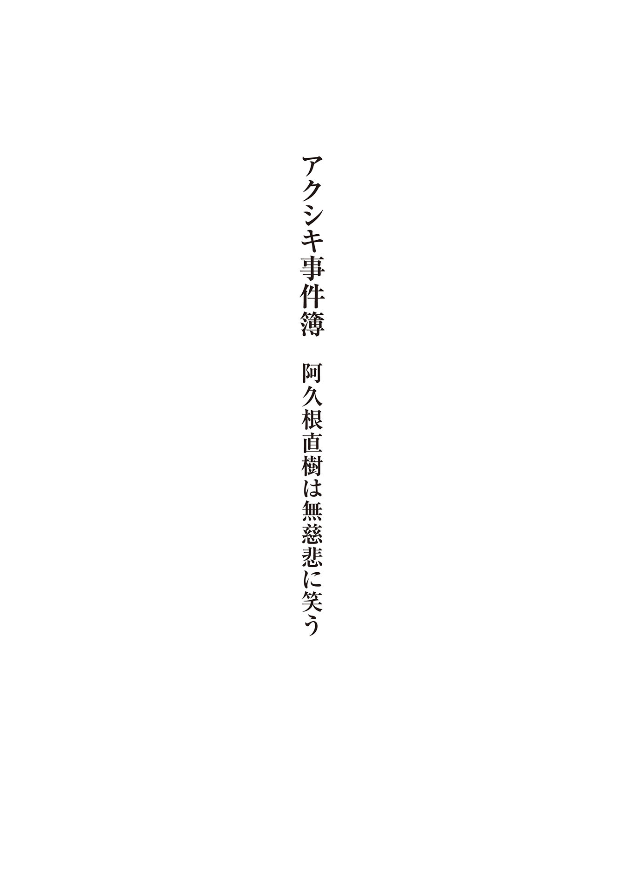
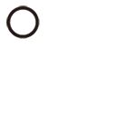

| アクシキ事件簿 阿久根直樹は無慈悲に笑う | |
| 笹原せつ | |
| 竹書房 (2014) | |
この作品は縦書きでレイアウトされています。
また、ご覧になる機種により、表示の差異が認められることがあります。
一部の漢字が簡略字で表示されていることがあります。
カバーイラスト／ｋｙｏ

スコポフォビア──視線恐怖症
見られてるって思うこと、あるじゃないですか。
目が合うわけもでなく、相手の姿すら見えないのに、背中やうなじがモヤモヤというかゾワッときて、ああ見られてるなーと思うことが。
人間の機能として、他者の視線を感じとることが、本当に可能かはともかくですよ。
感じるんですよね。
家で原稿を書いてると、後ろのほうから。
仕事部屋のＰＣラックにデスクトップＰＣを置いてるわけですけど、ポジション的には窓に背を向けてるわけですね。そうしたら、後ろのほうから、もやもやと重苦しい......湯気？ ガスというか、雰囲気というか。
いやーな感覚が背中にまとわりつくんです。
気のせいかって言うと、そうも断言できないのが辛いところでして。
あるんですよ。背後に。
窓が。
ちょっと立て付けが悪くて、開けるたびにガタガタと小うるさいやつで。
え、カーテン？ 鋭いですね。
もちろんですよ、引いてます。
背後に窓ってことは、陽 射 しがモニタを照らすってことですからね。光が反射して画面が見えなくなるので、仕事中は当然のように遮光カーテンを引きます。
だから振り向いたところで、窓の外にだれかがいるなんて......
わかっちゃうんですよね、これが。
カーテンの端っこを少しだけ開けてるんですよ。晴れの日ならそこから入る陽射しだけでも充分に明るくて、モニタに反射することもなく──
ぐいと手の平が押し出され、尾 見 は目の前を塞 がれた。
「ちょっと待って、尾見さんちょっと待って」
手が降ろされると、喫茶店の風景が視界に戻ってくる。
内装にグレーやブラウンが多く、落ちついた雰囲気の店構えには、平日十七時のまばらな客入りが丁度いい。難点を上げるなら、向かいの富 士 川 が馬鹿でかい口で苦笑していることぐらいか。
「なんですか？ カーテンの種類でも気になります？」
「いや、そういうわけではないんですけど......」
尾見は話を遮 られた苛 立 ちを抑 えるため、ティーカップに口をつけた。口内に広がるレモンティーの酸味が荒れた気分を鎮 めてくれる。普段から家にこもりがちなので、たまに編集者と顔を合わせたからといって興奮しすぎたのかもしれない。
「今のお話、雑談でいいんですよね？」
「ええ、新作のあらすじじゃありませんよ」
「はっきり言ってくどいです」
そら来た。富士川の単刀直入。
「語り口からして、作品と同じ問題を孕 んでいるなと」
ほら来た。追い打ちでもう一刺し。
「細部にこだわりすぎて、かえって全体がぼやけるんですよね。よくないです、そういうの。読者ってやっぱり、次の展開が気になるものじゃないですか」
「でも今の、怪談話の一種ですから、溜 めが必要でしょ？」
「溜めすぎるとグダグダになりますよ、トントン行きましょう。お仕事もね？」
ぐうの音も出ない。前回は一週間ほど締め切りを破ってしまった。
「あ、この場合のお仕事というのは、締め切りを守ることだけじゃなくて、もちろん内容についてもテンポ良くですよ」
「そんなに僕の原稿ってグダッてます？」
「わりと。前回のだと、ヨシエが電車で物思いに耽 るところ。言ってみたら静の場面ですよね。動の場面への溜めとして心情を描くのはいいんですが、５ページは要りませんよ、あのシーンに」
「ご指摘は理解できますけど......ヨシエじゃなくて、ヨシナです」
「そうでしたっけ？」
ティーカップに口をつける。レモンの酸味で心をほぐしたい。
富士川と喫茶店で顔を突きあわせると、毎回のように気分が乱れる。厚ぼったい唇をにかりと開き、歯並びの良さを誇示しながら、いつもこの男は痛いところを突いてくる。
言いたいこともわからないではない。たしかに他人の見た夢の話ほどつまらないものはないだろう。真実味はゼロで、内容も概して支離滅裂。話に起伏もオチもない。関西人なら怒りだすところだ。
もっとも、最初から富士川を喜ばせるための話ではないのだが。
吐き出さないとやってられないから、怪談話の体裁を整えてみただけで。
「尾見さん、次はホラーでも書きたいんですか？」
「そっちも興味はあります。でも富士川さんのところじゃ無理ですよね」
「うちのカラーじゃありませんし、尾見さんのカラーでもないでしょ？」
笑顔で断言する。富士川のこういうところが、尾見の神経を逆 撫 でするのだ。
「僕のカラーを勝手に決めてるの、富士川さんじゃないですかね」
尾見も笑顔を保って言い返す。
「私というか、読者ですね。尾見先生にそういうの、だれも望んでませんよ」
「難しいものですね」
売上げという事実が厳然と存在している以上、最終的に編集者には逆らえない。だから尾見は自分の体験を吐き出すのを諦めて、仕事用に思考を切り替えた。
打ちあわせを終えた後は、富士川と別れてラーメン屋に入った。
猛烈に野菜たっぷりのタンメンが食べたい気分だった。富士川は経費で落とすから夕食もご一緒に、などと言うが、編集者とラーメン屋に入るのは少々気持ち悪い。ラーメン屋は一人で入るのが一番だ。
半ライスもつけて胃袋に食の喜びを詰めこみ、帰りの電車に乗った。
帰宅ラッシュのサラリーマンに押しつぶされ、食の喜びを逆流しそうになること三駅。乗客が減った隙 を見計らい、ポケットからスマートフォンを取り出す。電子書籍リーダーを起動して、ふと思い直す。
そろそろ新作が発売して一週間。早ければネット通販サイトにレビューが投稿されている頃合いだ。考えただけで鼓動が落ち着かない。
電子書籍リーダーをいったん置いて、ブラウザを開く。通販サイトの検索欄に新作のタイトルを入力。電車内のせいか、読み込みに時間がかかる。
出た。
評価は──☆が二つ。
『ありきたりな内容。人物の行動で新鮮味を出そうとしてるけど、奇抜なだけでリアリティがない。現実のまま動けとは言わないけど、心情描写がくどいわりに突飛で意味不明。☆ひとつでもいいけど、まあ最後まで読めたから温情』
ため息と一緒に執筆意欲が根こそぎ抜け落ちそうだ。
ふざけんなと怒鳴りつけたいが、ぐっと堪 える。
読者に子を見守る母のような慈 しみは望めない。財布を開けて購入したからには、多少なりとも期待を寄せてくれていたのだろうし、期待を裏切られたら酷評もする。自分だって自腹で作品を買えば厳しい目で内容に切りこむだろう。それをインターネットに投下するかは別にして。
それに、去年の八月に上 梓 した作品よりはマシな評価だ。
『久 島 幽 の完全パクリ。作家としてのプライドが感じられない』
全く身に覚えのない濡れ衣 だった。あれにくらべれば、今回の批評には具体性もあるし次の糧 にもなる。そうだ、前向きに考えよう。
次もまた、多くの人間に見られるから。もっと多くの人間に見てもらえるようになれば、部数が上がって印税もたんまりもらえる。
もっと見てもらえば。もっと目を向けてもらえれば。
もっと、もっと、多くの人の興味を引いて。
よりたくさんの、穿 ち気味の目に晒 されて。
そのたび自分の繊細さにうんざりすることになっても。
作家業のつらいところだが、就職して上下関係に悩まされるよりは気楽という見方もある。毎日毎日、上司と直接顔を合わせて叱 責 されたりしたら、きっと外面を取り繕 う余裕すらあるまい。
はたして上司はどんな目を向けてくるのだろう。
少し前から執筆中に感じるようになった、爬虫類じみた冷たい視線と似ているのだろうか。
ただの自意識過剰とは思うが、近ごろなにかとそんな視線を感じて気持ちが悪い。
背後から、あるいは棚と棚の隙間から、テレビの裏から、電柱の陰から。
じめっとして、冷たくて、行動をつぶさに分解するような目。
電車に乗っていても、ふと振り向けば乗客みんなが自分を見ているような、気持ちの悪い想像が働いて落ち着かない。
酷評されて傷つく弱さを見透かして、嘲 りの冷笑を向ける、そんな目。
腹立ちが、焦りが、疎 ましさが、尾見の満身を震わせる。
ああ、いやだ。この感覚はもういやだ。
出版社に近い場所で打ち合わせをしたことを後悔する。無理を言ってでも、最寄り駅の隣ぐらいには呼び寄せるべきだった。
正直に話せばよかったかもしれない。怪談調に夢の話をするのでなく、近ごろ夢のせいか他者の視線が気になって神経症気味だと。
電車が揺れた。背中に軽いものが寄りかかる。
振り向いてみれば、肩にも届かない高さに黒髪があった。尾見の身長は平均くらいだから、相当に小柄な相手だ。頭も小さく、肩もか細い。私立校帰りの小学生かと思ったが、ランドセルは見当たらないので、服装を見て考えなおす。しっかりした造りの黒ワンピースに白のタイツは沈 鬱 な印象があり、おそらくは喪服と思われた。
気の毒だとは思うが、縁起が悪い。目を逸 らそうとした。
くいっと顎をあげ、少女が見あげてくる。目を逸らすタイミングを失った。
「どうかしたのかな？」
僕の肩にお爺さんの霊でも見えますか、というセリフを思いついたが、不謹慎なので口には出さない。かわりに気の利 いたセリフでも言えないものか。女の子が一向に離れないので、気まずいし間がもたない。
「お父さんかお母さんは？」
作家のくせに、なんと貧困なセリフ回しか。
女の子はぴくりともしない。
はて、と尾見は胸中で首をかしげる。
おかしい、ような気がする。なにが原因かはさておき、あどけない顔を見ていると、形容しがたい違和感を覚える。
寒気がした。
剝 きだすように見開かれた目には、大きな瞳がくっきりと浮かんでいる。
瞳というものは、こんなにも黒いものだろうか。
墨汁を円形に切り取ったかのように、黒い。塗りつぶしたような黒さが作り物じみていて、尾見は怖 気 に震えた。
その直後、車外から一瞬の照明が射しこみ、放射状の虹彩が煌 めいた。ごくありきたりな瞳の構造がそこにある。
くだらない思いすごしに苦笑しかけたが、すぐに考えなおして飲みこむ。喪服の少女に延々と見つめられているのは事実なのだ。
「僕、なにかした？」
ひどく弱気な声が出た。もしや、知らぬうちに小さな足を踏んづけてしまったのだろうか。だとしたら悪いことをしてしまった。
後ろめたい気分に囚われ、背後の少女から目を離せない。
ふいに、勢いよく前方に体を引きよせられた。
思わずそちらへ顔を向け、少女から目を離してしまう。
黒いスーツの男が尾見を抱きしめていた。背が高く、一八〇センチは優に超えている。脚が長くて重心が安定せず、拠 り所を求めて抱きついてきたのかもしれない。
見あげきった場所にある髪が、びっくりするほど赤い。明るい赤ではなく、べったりとペンキを塗りこんだような血の色。物騒な髪の色にくらべ、端正な造りの顔立ちは見ているほうが気恥ずかしくなるぐらい、人の良い笑顔を浮かべていた。
「あ、すいません」
なにか悪いことをしてしまったような気がして、つい口から謝罪がこぼれ出す。
返事は言葉でなく、行動で示された。
抱きしめた手で背中を撫でられたのだ。
それどころか腰も撫でられた。
あまつさえ、尻まで。
「な、なんっ、なにっ、をっ」
寒気が背筋を走り、鳥肌が喉 にまで広がる。
挙げ句の果てに、腹まで撫でられた。
痴漢という生き物は腕が四本あるのかと思いきや、背後の女の子がぎゅっと抱きついてきているらしい。
新手の痴漢だというのか。二人一組のタッグ痴漢。
子どもをけしかけて油断させ、隙を突いて触りまくるばかりか、子どもにも触らせて相手を翻 弄 し、その隙にまた触りまくるような。
顔に浮かべた笑みは、男に対する慈しみと欲情の発露か。
わからない。理解できない。男を触る痴漢の気持ちなどわかるものか。わかるのはせいぜい、世の女性が痴漢に抱く耐えがたい恐怖と嫌悪感ぐらいのもので。
「やめて、ください」
おそろしく情けない声が出た。まわりには「あめれくあはい」という呟 きにしか聞こえないだろう。
対する痴漢の返答は、完全に尾見の想像を凌 駕 していた。
「運動しろよ、豚」
「あえ」
変な声が出た。
にこやかな表情のまま小馬鹿にされて、思考が千 々 に乱れる。
「骨と皮で皮下脂肪を挟んでるだけで、筋肉がえらく薄い。太ってるわけでもないのにブヨブヨで、みっともないと自分で思わないのか？ 普段から運動してないんだろう。最低限の運動をしてようやく、人は人として最低限の生き方ができるんだ」
「ええと、どうも」
「どうもじゃない、おまえは人間以下だと言ってるんだけど、わかる？」
罵倒された気もするが、理解不能すぎて屈辱を感じる暇もない。
男はにこにことまくし立てる。
「たっぷりウォーキングしろ。歩け。歩くのが一番いい。人間は二本脚で歩くから人間なんだ。いいか、朝日を浴びて歩け。三食しっかり栄養バランスを考えて食え。ブッたるんで生きてんじゃない。どうせ暇なんだろ、健康に気を遣 え。わかるか？」
「なにを、おっしゃってるん、ですか」
「常識の話だろう。体を動かさないから頭も回らないんだ」
口角は吊 り上がったまま、目だけが見開かれた。まるで猛獣が獲物に狙いをつけたかのように。にこやかかつ、凶暴。わけがわからない。
顔だけならまだしも、話の内容が意味不明だ。健康状態を案じているだけと受け取れなくもないが、満員電車で見知らぬ男に痴漢行為を働きながらでは、どんな正論も説得力を持たない。
それでも、意図を想像しなければならない。でないと、次の瞬間には男として守るべき部分に触れられそうな気がする。だから懸命に搾 り出そう。
「健康な体のほうが、触り心地がいいから、ですか」
あ？ と男が半笑いで疑問を返す。尾見はいつでも失禁できる心地だった。
「男に触られるような美男子のつもりかよ。鏡は家にあるか？ 毎日ちゃんと顔色を見て、身だしなみにも気をつけろ。真っ当な自分をイメージして、そのイメージに毎日毎日すこしでも近づいていくつもりで」
『間もなく、新 八 栖 。お出口は右側です』
酔っぱらったような口調の車内放送が、男の声を遮る。
電車が減速していく。
停車。ドアが開く。チャンスは今しかない。
ドアが閉ざされる寸前、尾見は身を沈めて男の腕から逃れた。その拍子に女の子を跳ねとばしてしまったが、「ごめん」の一言で真横の出口から飛びだす。
間一髪でドアが閉ざされた。
ガラスの向こうで男の表情がようやく変化する。口角が一転、への字口に。どうやら不機嫌になる程度の人間性は持ちあわせているらしい。
電車が発進し、線路の果てに消えゆくのを見守って、ホームにへたりこむ。
「本物の痴漢は健康とか気遣うのか......」
やはりリアルはフィクションとひと味もふた味も違う。
良い経験とは言いたくないが、貴重な経験である。
妙な感慨を抱いて、尾見はふらりと立ちあがり、足早に改札へ向かった。
よろめきながら駅を出て、駅前のスーパーで数日分の食糧と菓子を買いこんだ。
甘いものはいい。酒もタバコもやらない尾見にとって、菓子は日常に欠かすことができない嗜好品である。糖分で頭の回転もよくなるので良いことずくめだ。
舌でとろけるチョコレート。
上品な甘みのかりんとう、黒飴。
バターたっぷりのクッキー、クリームを挟んだクラッカー。
カットしたフルーツの詰め合わせは、清涼感がほしいときに最適。
色とりどりの甘さを思い浮かべていると、ラーメンで膨 れた腹もこなれてくる。
だが、心地よい飢餓感を楽しんでいられるのは、結局のところわずかな時間だった。
スーパーを出て住宅街に向かえば、雑踏もまばらになって寄る辺 ない孤独感が湧きあがる。連鎖して不快感に背筋が粟 立 った。
痴漢というやつは、こんなにも尾を引くものなのか。
ただ夜道を歩いているだけでも、また触られているような錯覚に手足が震える。胃袋がせり上がって喉からはみ出しそうだし、皮膚は怖気を搾り出すようにして鳥肌を立てていた。
あるいは何日も何ヶ月も、このおぞましさに悩まされるのではないか。そう考えると、世の女性が冤 罪 も恐れずに痴漢を糾弾するのも、すこし理解できる。
「このままじゃ使えないな......」
開き直って作品に活かせないかと思ったが、あまりにも気持ち悪くて、たぶん自分の作風には合わない。すくなくとも、富士川が望む尾見次 郎 の作風には。
自分としては背筋の凍るホラー小説や、不快感を搔 きたてるグロテスクな作品も手がけてみたくはあるのだが。
たとえば、ちょうど今、背後をだれかが歩いている。
ひたひたと、まるで歩調を合わるようにして。
どうせまた例のごとく自意識過剰なだけだろうが、シチュエーションとしては不安を煽 る格好の材料になる。ここで足を止めて、相手も停止すればなおスリリングだが......。
カツ、と足を止めてみる。
ひたり、と背後の足音も停止した。
まさかの事態に息を忘れる。
真っ先に思いつくのは、先ほどの赤毛男だ。
自分が買い物をしているうちに、隣の駅からなんらかの手段で駆けつけてきたのだとしたら、恐ろしい執念だ。自分のどこにそんな魅力があるのかは、これっぽっちも理解できないが。
「あの、すいません」
後ろから声をかけられ、反射的に身を竦 めた。
高く、耳に心地よい高音は、あの男のものとはまるで違う。だとしたら、もうひとりの少女のほうかと思い──すぐに認識を改めた。
ひょいと横から彼女が顔を出したのだ。
「これ、落としませんでしたか？」
見覚えのあるスマートフォンを顔の横に掲げ、高校生ほどの少女は愛想よく笑っていた。学校の制服らしきベージュのブレザーにチェック柄のプリーツスカートを行儀よく着こなして、肩で切りそろえた髪はナチュラルな黒。
「ああ、それ......僕のですよ、はい」
「ホームで落としてましたよ」
愛嬌のある笑顔に尾見は安堵した。あの痴漢とは正反対の真っ当な人種らしい。
軽く会釈して受けとり、頰 をつり上げて不器用に笑う。
「ありがとう、全然気づいてなかったよ。状況がちょっと、凄 かったので」
「尻餅ついてましたよね。お怪我はありませんか？」
「ちょっとわかりませんけど、多分平気ですよ。ちょっとびっくりしただけで」
「ちょっとばっかり言ってますね」
歯切れの悪い尾見にくらべると、少女の口調に淀 みはない。くすりと笑う素振りも屈 託 がなくて、人なつっこい猫のような印象だった。釣られて尾見の頰も自然に緩む。電車から抱えてきた不快感も、今なら吐き出して楽になれそうだ。
「いや、ショックだったからね。痴漢なんて初めてだったから」
「え、痴漢したんですか」
素 っ頓 狂 に大きな声を返された。
「いや、そっちじゃなくて、あのね、触られた方だから、僕は」
かりにも言葉をあつかう職業でありながら、なんと不器用な説明だろう。キーボードを打つのと舌を回すのとでは、脳の違う部分が司 っているとしか思えない。そんな要領を得ない説明でも一応は通じたらしく、はにかみ笑いを見られた。
「モテるんですね」
楽しい話題でもないので、尾見は「いやいや」と適当に混ぜ返して打ち切った。
「それじゃあ私、あっちのマンションですから」
彼女は肩越しに背後を指さした。スーパーから道路を挟んで、三十階建てのマンションがそびえ立っている。隣接した団地にくらべ突出した高さは、最寄り駅に普通電車しか停まらない閑静なベッドタウンでは騒々しいほどに目立っている。
見知らぬ男に悠然と話しかける余裕や、どことなく律儀で礼儀正しい態度は、裕福な育ちゆえなのかもしれない。
「スマホ、ありがとうね」
「落とし物を拾うのって楽しいんですよ。縁 が繫 がるゲーム感覚というか」
会釈を交わして別れ、尾見は歩みを再開した。
しとり、と地面に雫 の落ちる音がする。
幸いにも足取りは軽い。雨が強くなる前に駆け足で家まで戻ることにした。
自宅に戻ると、まず仕事部屋でパソコンの電源を入れる。
五年前に購入したデスクトップは起動してしばらくは処理が重いので、台所でコップ一杯の水を飲みほし、部屋着に着替えて和室のテレビをつける。
チャンネルを切り替えて民放のバラエティ番組やＮＨＫのドキュメンタリーを流し見するが、とくに興味を惹 かれないのでＤＶＤラックから適当な洋画を一本抜き取り、ＢＤプレーヤーに差しこんだ。
気分を盛りあげたいので、景気のいい娯楽作品を選んだ。
二十二インチの液晶テレビに映しだされるのは、ホッケーマスクの殺人鬼が血しぶきをあげて人を殺しまくるスプラッタシリーズ十作目。
とある事故によりコールドスリープ状態に陥った殺人鬼が、数百年後に宇宙船で覚醒し、睦 みあうカップルを手始めに次々と乗員を血祭りに上げるエキサイティングなストーリーだ。終盤、殺人鬼がサイボーグ化して大暴れする展開はとくに素晴らしい。悪ふざけのようなプロットを作品として成立させる剛腕には惚れ惚れとする。
「Kill...Kill...Kill...Mum...Mum...Mum」
シリーズ定番の「母の殺意を促す死んだはずの息子の囁 き」を口ずさみ、仕事部屋に戻る。ふすまを開けておけば隣室のテレビが視界に入るポジショニングである。
黒糖かりんとうを口に放りこみ、まずはメーラーをチェック。編集からのメールはなし。プロバイダから新しいサービスのお誘いが来ているが、ゴミ箱に捨てる。
ブログを見る。コメント欄に作品の感想などは届いていない。
かりんとうを口に追加して仕事を開始した。
すでに痴漢の感覚は体から消え失せていた。
現時点において、二階建ての古びたアパート一階が尾見次郎の到達点である。
築二十五年の木造建築、２Ｋ。本棚とＤＶＤラックを敷き詰めれば、資料もコレクションもそれなりに買いこめる。
追い炊 きはできないが風呂とトイレが別々にあって、台所にはガスコンロも置ける。欠点としては、ほのかにカビ臭いのと、立て付けが悪くてふすまが鳴くこと、洗濯機が外にあるので冬場はすこし面倒くさいこと。
尾見にとっては自分の力で手に入れた自慢の城である。
大学時代、親のスネをかじっていたころ、とある出版社が起ちあげた小説レーベルの新人賞に投稿。銀賞を取り、編集者に「地道にコツコツと実績を作っていきましょう」と声をかけられて卒業までに二作を上梓。
「いちおう就職はしてくださいね」
そんな担当編集の言葉に耳を貸さず、専業で食っていこうと就職活動を投げ捨てたのが凶と出た。卒業後、首都圏にワンルームマンションを借りて作家業に専念しようと鼻息を荒くした直後、業績不振でレーベルが消滅したのである。
担当編集のコネで他社に渡りをつけてもらったおかげで、なんとか出戻りせずには済んだ。マンションは家賃がかさむので引き払い、格安で駅にも近い物件を見つけて移り住み、現在に至る。
デビューからもう七年。
恋人もなく、車もなく、住まいに贅 沢 をしなければ、稼 ぎの大半を娯楽に費やしても不都合はない。小説、専門書、漫画、ＤＶＤ、あとは甘い菓子と、さしたる出費ではない。傍 目 には面白い生活ではないだろう。楽な生活ではあるかもしれないが、クローズアップする価値があるとは思えない。
なのに、また感じるのだ。自分を見つめる、嫌な視線を。
キーボードを叩 いて文章をこねまわしていると、背後の窓から、だれかに見られているような気がして仕方がない。
「自意識過剰、自意識過剰」
独り言で気を紛 らわせようとするが、いったん意識すると止まらない。
ブラインドタッチが鈍化し、ミスタイプが増えていく。
ほんの２ページしか進まないうちに映画は終了し、メニュー画面になっていた。べつの映画を垂れ流そうとＤＶＤラックに向かい、今度はピクサーの３ＤＣＧ作品を選ぶ。低年齢向けでもプロットがしっかりしているし、なにより雰囲気が明るい。
「これ終わったら風呂に入るか」
宣言して沈黙を破る。静寂が不安だった。
ＢＤプレーヤーを開き、ディスクを入れ替えて再生する。
画面にぼんやりと白いものが映る。縦長でいくつも穴が開いた形状からして、ホッケーマスクか。ディスクを入れ替え損ねたらしい。疲れているのかもしれない。
あらためてＢＤプレーヤーを開き、ディスクを入れ替える。
再生。
画面にぼんやりと白いものが映る。
縦長でいくつも穴が開いた形状からして、ホッケーマスクか。
疲れているのだろうか。ディスクを入れ替え損ねたらしい。
ＢＤプレーヤーを開き、ディスクを入れ替えて再生する。
画面にぼんやりと白いものが映る。縦長でいくつも穴が開いた形状は、まるでホッケーマスクか。入れ替えミス。
はて。先ほどから同じことをくり返してはいないだろうか。
既視感に苦笑いして、またＢＤプレーヤーを開く。
ディスクを入れ替えて再生する。
画面にぼんやりと白いものが映る。縦長でいくつも穴が開いた形状からして、ホッケーマスクか。ディスクを入れ替え損ねたらしい。
だが、本当にそうだろうか。よく目を凝らして見ればわかる。画面に浮かんでいるのは穴だらけの仮面ではなく、人の顔ではないだろうか。
ただし鼻も口もない。目ばかりがいくつも開かれている。
すべての目が自分を見つめている。
「うわあっ」
とっさにテレビの電源を消すと、画面が真っ暗になり、ぼんやりと灰色の人影が映る。自分が映りこんでいる。しゃがみこんで、画面を覗 きこんでいる。待て待て、僕はそんな姿勢じゃない。突っ立っている。
なのに画面の尾見次郎は、しゃがみこんで画面を覗きこんでいる。
それとも、画面越しに僕を見ているのではないか。
目を見開いて。思いきり目を剝き出して。白目はおろかまぶたがめくれて、赤いものが滴 り、視界が血の色に染まる。
なにも見えない。トマトソースみたいに赤い。
ただひたすら赤い世界で、あちこちから視線を感じる。
四方八方から、だれかが僕を見ている。顔をぐうっと近づけて、鼻先が触れるほどの距離から凝視している。息づかいがかすかに感じられた。
生 温 く湿った呼吸が、首筋を撫でてきて──
いてもたってもいられず、尾見は跳ね起きた。
目を開ければ畳のうえに寝転がっていた。
テレビにはピクサー作品のメニュー画面が表示されている。
窓の外はまばゆいほどに明るい。
「どっからどこまで夢だよ」
おぞましい出来事が夢だとわかって安心することもできない。むしろそんな夢を見る精神状態が不安だ。
時刻は朝八時。起床タイミングとしては悪くない。
台所で水道水を一杯飲み、洗面所で冷水を叩きつけるように洗顔し、歯磨きをしてから台所に戻る。とりあえず朝は朝だ。食べるものを食べよう。
トーストにマーガリンとジャムを塗って、ホットミルクにインスタントコーヒーを混ぜたもの、買い置きのヨーグルトも加えて三品。出不精の小説家には贅沢なほどのエネルギー補給である。
仕事部屋でまた椅子に座り、トーストをかじりながらパソコンと対峙。
糖分が脳に回るのを待たず、朝の執筆を開始。
これが尾見次郎の作家生活においては定型と呼べる朝の過ごし方だった。妙な形で眠ってしまったとはいえ、せっかく起きたのだから生活リズムは整えよう。
さしたる変化もなく、リピート再生をするように規則正しい執筆スタイルは、数少ない作家友達に言わせれば「健康的すぎて気持ち悪い」らしい。
「ファンが作家に期待するのはヴァンパイアだよ。徹夜と昼夜逆転の怪奇で神秘な、アウトロー的な不健康さって、やっぱりグッとくるだろ？ とくに尾見さんや俺みたいなのはさ、結局インドア系だから。お外で暴れて話題になるような無頼漢でもないし。そうなるとヴァンパイアだよ、ホラーがお好きなんでしょ？」
などと言われても困る。デビュー前の一読者だったころの感覚で言えば、作品さえ面白ければ作家がどんな生活をしていようがご自由に、としか言えない。
だから自分も自由にやっている。
毎日シコシコと同じペースで書き進め、ジグソーパズルのピースを一つずつ埋めていくように脱稿を目指す。土壇場になるほど良い文章がひねり出せるタイプではないのだ。むしろピンチにもチャンスにも弱い。
よって予定通りの進行が一番いい。
ちょっと予定を崩した結果、一週間の締め切り破りを果たしたのが先月のことだ。
今度はきっちりと締め切りを守って編集の心証をよくしたい。
テキパキと進行するべし、と思うのだけれど。
問題はと言えば、また例のごとく背後にある。
そろぅり。
首筋に息を吐きかけるような、生暖かい気配を感じる。夢のフラッシュバック。あるはずのない視線。
振り向いても、どうせなにもいない。
だから気にしても仕方がない。予定にない違和感だが、予定を狂わせる障害でもないはずだ。執筆を止める理由にはならない。
「トロい」
愚痴を吐き捨てる。自分の指に。回転が鈍っている脳に。
ホラー好きを公言しているのに、なぜこんなにも不安に弱いのか。いや、不安に弱いからこそ、安全の保証されたフィクションの恐怖を楽しみたいんじゃないか。いやいや理屈はどうでもいいから書けよ、ほら指が止まってる。
ピンポーン、と突然のインターホンに椅子の上で跳ねあがった。
「はーい、ちょっと待ってくださーい」
予定外の来客は苛立ちの元でしかないが、気分転換にはなりそうだ。
立ちあがり、手で寝癖を直しながら鍵を外す。
ドアを開けると、中年男のいかつい顔があった。好物は歯ごたえのある石ですと言わんばかりの太い顎が、薄手のトレンチコートになかば埋もれている。首がとんでもなく短くて、見るからに筋肉質である。
男はにっかり笑みを浮かべた。
「ども、梁 川 署の馬 飼 と言います」
顎の高さで手帳を開けば、極道として通用しそうな強 面 の写真が添付されている。
「なにか？」
「朝からすみません、ちょっと話をうかがっていいですか。裏の通りのちょうど対面に、小 森 さんの家があるでしょう？」
名前は覚えていないが、そんな表札だった気がする。
「そのまた裏の大 木 さん宅なんですけど、家に不審者が入ったという話でして。物は盗られていませんし、だれかが襲われたということもないので、ただの悪 戯 とは思いますが、念のために聞きこみをしていまして」
「悪戯、ですか」
「床に妙な落書きがされていまして」
馬飼は後ろに目配せをする。神経質そうな細い顔が控えていた。
「どうも、迫 間 と言います」
毎日カミソリで頰肉を落としていそうな三 十 路 ほどの刑事は、馬飼とおそろいのトレンチコートのポケットからメモ用紙を取り出した。
真ん中で折られた用紙を開けば、目。
尾見はその図形に思わず顔をしかめた。
丸まると開かれた目を思わせる多重の円形から、ミミズがのたうつような線が放射状に、途切れ途切れ伸びている。まるで強烈な視線を四方八方に飛ばして、どこに行こうがおまえを見張っているぞと言うように。
「こういうのが描かれていたのですが、ご存知でしょうか」
馬飼に顔を覗きこまれている。黙りこんだのが不 味 かったか。
しゃべろう。疑われない程度に。
「子宮......でしょうか」
「ほう、というと」
「大量の精子が卵子に集うような。それとも、花火？」
「ああ、なるほど。似ていますね。なるほどなるほど、いい着眼点ですよ、これは。すごいですね、ええ、なるほどなるほど」
見られている。顔色を窺 われている。糸になっていた目をやや開き、じぃっとなめまわすように、顔を凝視している。しゃべりすぎたかもしれない。
変に気取ったコメントはかえって疑われる。ならもっと簡素な感想を。
「なんだか気持ち悪いですね。真ん中のがとくに、目みたいで」
「ええ、気持ち悪いんですよ、匂いが特に。いま調べさせてるところですが、悪臭のする粘液で描かれていたんですね。おそらく夜中に、一家が寝静まったころにですけど。見事なもんですよ、まったく気づかれずに忍びこんで、卵が腐ったみたいな匂いのものを二階の廊下にデカデカとね。朝起きて匂いを嗅いだご夫人と息子さんが気分を悪くして、いま病院で検査してもらっています。すべて狙いどおりなら、忍者みたいに狡 猾 なやつです」
「大木さんに怨恨でもあったんですかね」
「だとしたら中途半端な腰抜けですよ、ただの嫌がらせに終始してるんだから」
馬飼の発言がブレているように思えた。犯人の手際を褒めるようなことを言ったかと思えば、突然こけにし始める。視線はじっと、尾見の顔に据えながら。
反応を見ているのだろうか。
目の前にいるのが犯人だと仮定して、自尊心をくすぐってボロが出るのを待っているのだとしたら、もはや容疑者扱いである。不本意だが怒りよりも不安と居心地の悪さに動揺してしまう。
つとめて平静を装 い、誤解を招かなさそうなセリフを脳内で組みあげ、口にした。
「犯人、忍者じゃないといいですね」
「は？」
馬飼は鼻から抜けるような、素っ頓狂な声で聞き返してきた。
「忍者って、脚が速いでしょう。捕まえるの大変そうだと思って」
「ああ、はいはい。忍者ね。たしかに困りますね、忍者はいやだなぁ、迫間」
「手に負えませんね、本物の忍者だとしたら」
二人の顔には「こいつバカだ」と言わんばかりの苦笑が浮かんでいる。
尾見は小粋な返しも思い浮かばず、ただ頰を熱くして刑事たちが帰るのを待った。
刑事たちは戸締まりに気をつけるよう忠告して立ち去った。
結局のところ、本気で嫌疑を掛けられていたのかはわからない。自意識過剰なだけかもしれないが、刑事たちの視線を思い返せば手に汗がにじむ。
誤認逮捕、冤罪、刑務所送り、ネガティブな想像が連鎖して脳を蝕 んでいく。
不安に震える背筋を、そろぅりとなにかが撫でた、気がした。
「......出よう」
外に出て気分を切り替えることにした。
灰色のパーカーとジーパンに着替えて外に出ると、背中に感じていた視線が消えた。
ほっと一息吐 く。解放感にスキップをしたくなるような、インドア派にあるまじき衝動に突き動かされて歩きだした。
二階建ての民家がずらりと並ぶベッドタウンの街並みは、どこか湿っぽくて憂鬱な眺めである。解放感もすこしずつ消えていく。町立図書館にでも行くか、それとも駅の裏のたこ焼き屋で鯛焼きでも買うか、とぼんやり考えた。
正面の通りをぐるりと周り、裏の通りをゆく。
アパートの裏には梅 岡 とかいう一家の住む家があり、道路を挟んで比較的新しめの白い家が建っている。表札は、小森。その影に隠れているのが、件 の大木家。
それは尾見がいつも仕事中に背を向けている方向だ。視線を感じた方向と言い換えてもいい。
奇妙な悪戯が施された大木家のある方向。
子宮内のような、花火のような、睨みつける目のような模様が描かれた方向。
「鬼 門 っていうやつか」
陰 陽 道 において北東の方角は鬼門の名で呼ばれて忌み嫌われる。厳密には多少のズレはあるだろうが、だいたいの方向はあっているように思えた。
困ったことに、駅も図書館も進むべきはだいたい同方向。
今さら方向転換する気にもなれず、道なりに進み、十字路で左折、北東へ。
大木家の面した通りをちらりと横目に見る。パトカーはおろか路上駐車のひとつもなく、気味が悪いほど見晴らしがいい。
視線を前方に戻そうとしたとき、
ぬとぉり──
と、いやらしく滴り落ちるものを見た。
何事か理解するより先に視線が引きよせられた。
空中に走る黒い線──電線の上にカラスが止まっている。
滴り落ちる。電線をしっかりとつかんだカラスの足から、ひどく重たげに、長々と糸を引いて、黒光りする液体が。
尿か糞かと思ったが、それにしても糸を引きすぎる。
カクン、カクン、とカラスの首が前後する。やや斜め下をクチバシで突いているようにも見えるが、そこからも同色の液体が滴り落ちるのを見て、すくなくとも糞尿でないことはわかった。だとすれば嘔 吐 だろうか。
よほど苦しいのか目が見開かれていた。顔いっぱいに広がるほど大きく、クチバシが押し寄せられて小さくなるほどに。ありえないほど大きい、赤黒く濁った偏執的な目は、たしかに尾見に向けられていた。
──見ているぞ。
目が語りかけてくる。大きな目が。
カラスの黒い体が球状になって、その中心に丸まると開かれた目が、まばたきひとつすることなく。
尾見の視界には、理不尽な光景しか映らなかった。
そう、理に合わない。あきらかにおかしい。
五十メートルは離れているカラスの目が、なぜ眼前に迫って見えるのか。なぜ視界いっぱいに広がって見えるのか。
息苦しい。肺が握りつぶされているかのように浅い呼吸しかできない。酸素が不足して思考が正常に作動せず、徐々にその目に飲みこまれていく。
「ケイトだよ！」
わめき声が尾見の意識を呼び戻した。
眼前に巨大な目など存しない。遠目にカラスの姿すら見あたらない。
カラスの止まっていた電線の近くで、三十がらみの男が膨らんだゴミ袋を片手に中年男と言いあっていた。
「ケイトが来るって！ 毎日毎日、ケイトが！」
「どこのケイトだ！ ケイトがゴミ出せって言ったのか！」
「毎日毎日！ 毎日毎日毎日毎日！」
「毎日じゃなくて木曜！ 燃えないゴミぐらい分別しろ！」
中年が終始大声で怒鳴りつけているのにくらべ、若い方は声の調子が上がったり下がったり裏返ったりと、興奮しているにしても尋常な様子ではない。
ちょうど尾見の近くの家の玄関が開き、小太りの主婦が言い争いを横目に顔をしかめる。すぐに尾見に気づいて、ばつが悪そうな笑みで人なつっこく話しかけてきた。
「ビックリしたでしょ、あの声。よく夜中にわめいてるのよねぇ」
「そんなに凄いんですか？ 僕は向こうの通りに住んでるんですけど、さすがにそこまでは聞こえてこなかったもので」
「前も大家さんを呼んでの大騒ぎだったわ。あの人、峰 岸 っていうんだけど、気をつけなさいね。大木さんのところも......やだ、これ内緒ね。大木さんのところ、ちょっと変なことがあって。家に変な匂いの液体がばらまかれたって。絶対にあの男のせいよ、ほんとに気をつけてね？ 関わっちゃダメよ？」
一方的な決めつけだが、あのわめき声を毎日聞かされていれば無理もない。
「じゃ、僕は用事があるので」
「そうなの？ 引き留めてごめんね」
尾見は止まっていた足を動かして、また駅前へと向かった。
頭上でカラスが鳴いても、見あげることはできない。
ただ前だけを向いて歩を進める。
前方には矩形の塔がそびえ立つ。昨夜、スマートフォンを拾ってくれた名も知れぬ少女が入っていった、駅前の三十階建てマンション。きっと自分が住まうボロアパートとは比べものにならない住み心地だろう。
マンション前の車道はゆったりと幅を取った二車線。歩道とマンションの間にもゆとりがあって、ベンチまでしつらえられている。ここの住人は暮らしに余裕がありますよと誇示するようで、羨ましいやら妬ましいやら。
そんな生活をしていたら、神経症気味に怯 えることもないのかもしれない。
いまもまた、尾見は視線を感じていた。
道路を行きかう車の運転席からも、一瞬見られていた気がする。運転手の目が四つぐらいあるように錯覚して、小走りに逃げだした。
とはいえ、インドア派にとって走ることは苦難の道で、呆 れるほど早々に力つきてしまう。ちょうど駅前の広場にたどりついたところだった。
通勤ラッシュをすぎて人通りはまばら。とくにおかしな視線は感じない。
ようやく一安心できて、静かに深呼吸をする。
息が整うにつれて、思考が冷静になっていく。
やはり自分が見たものは、目の錯覚にすぎないのだろうか。だとしたら、昨日痴漢に遭 ってから、精神的に疲労が溜まっているに違いない。
駅の裏で鯛焼きでも買って、のんびり食べるべきか──などと考え、駅へ向けて歩き出したとき、意外な光景に息を止めてしまった。
駅からどぎつい赤色の髪が出てきたのだ。
身につけているのは昨夜とおなじスリムな黒スーツ。ネクタイは締めているが、模様の入った派手な代物。のどかなベッドタウンにはふさわしからざる、夜の歌舞伎町が似合いそうな出で立ち。
彼はきょろりと首をよじると、硬直している尾見をすぐに見つけた。
「あ」
目を細めて、にっこり笑いかけてくる。
笑いながら、大股で歩いてくる。
親密さをアピールするように手をあげるのが、馴れ馴れしくておぞましい。
尾見はその場でターンして、逃げだした。
「おい待て、そこの......眼鏡、眼鏡の！」
名乗ってやる義理は当然ない。体力が限界に近いので声を出すのも惜しい。ただ両脚の駆動に集中する。
頭にあるのは疑問ばかりだ。
なぜ、ここにあの男がいるのか。
なぜ、追いかけてくるのか。
そこまで男が好きなのか。
そこまでこの体に執着しているのか。
なぜ、こうまで熱烈に追いかけてくるのが女性でないのか。
作家生活を七年も続けているのだから、女性ファンの一人や二人いてくれてもいいのに、なんで男にしか追いかけてもらえないのだ。
そんなにも自分の文章には魅力がないのか。
鍛えたこともない貧相な体の方がまだ値打ちがあるのか。
ああ畜生、ああ嫌だ、なんでこんなことに。
背後から追ってくる視線が痛い。皮膚を突き破り、肉を穿つかのようだ。
そして、ぞろぉ、とイボだらけの舌で背を舐 められた気がした。
「まさか......」
夜中に感じる視線は、この男だったのかもしれない。
以前から自分に目をつけていた男が、毎夜のようにアパートを覗き、ついに昨夜がまんしきれなくなって手を出してきたのだとしたら。
不合理な部分に気づけるほどの余裕は、いまの尾見にはない。高校以来の全力疾走と、あえて裏道や細道を選んで相手を撒 こうという画策に全精力を注 ぎこんでいる。
だから思いこみはすべて、現実のことに等しい。
後ろから追いかけてくるのは、偏執的で変質的なストーカーだ。
ずっと自分を見つめていた、異常な目つきの正体だ。
ならば、逃げるしかないではないか。
「ひぃ、はぁ、はぁ、ひぃ」
呼吸で喉が痛い。肺も痛い。だが止まれない。追いつかれれば、電車でされたことが児戯と思えるような惨劇が待っている。
男は嫌だ。堪忍してほしい。
だって男と言ったら、あるではないか。股間に。見慣れたものが。
それをどう使うのか想像してみよう。
してみた。最悪だ。ヴラド・ツェペシュを思い出す。吸血鬼ドラキュラのモデルとなったワラキア公は、敵兵を串刺しにして晒したという。
晒されるかはともかく、串刺しは困る。口から杭 が飛びだすことはなかろうが、体内に留まるところを思い描くだけで吐き気を覚える。呼吸がますます苦しくなる。
もう二度と、痴漢や強姦を作品で取り扱うことができなくなるかもしれない。
「ふう、はぁ、ひぃ、ごほっ」
咳 きこみながらも逃げつづけ、いつしか見覚えのある通りをふらついていた。
行きしなにカラスと目が合った道。峰岸とかいう男が中年男といがみあっていた場所だ。左手には車道。右手にはアパートと、金網で仕切られたゴミ捨て場。どちらも尾見のアパートより新しく見える。
振り向いても赤い頭は見あたらない。
安堵した途端に力が抜けていく。前 屈 みになって膝に手をつく。思いきり酸素を吸入するや、猛烈な悪臭に嗚 咽 を漏 らした。
右、左、両方から異臭がする。
腐臭と薬品臭にハチミツの甘みを混ぜたような、ひどく胃袋を刺激する匂い。
ゴミ捨て場が臭いのはまだしも、道路までとは何事か。
見ればそこに、直径一メートルほどの黒い模様が描かれていた。
円の周囲に、のたうつ線が放射状にばらまかれた、不気味な模様。
ぴとり、と上から黒い雫が落ちる。電線から粘り気が滴っていた。
カラスがいた場所だ。
模様を挟んで向かい側に民家がある。
表札は、大木。
大木家の裏には小森家、道路を挟んで梅岡家、その裏には尾見のアパートがある。
すべてが一直線に並んでいる。
「なんなんだよ......」
奇妙な偶然にひとりごち、異臭にむせ返る。息がまともにできない。
とにかくこの場を立ち去ろう。綺 麗 な空気を吸える場所ならどこでもいい。
進み出そうとしたとき、背後から肩をつかまれた。
「おまえわかってんのか！ ケイトだぞ、わかってんのか！」
引きよせられて、怒鳴られた。
血走った目に無精ヒゲ、ぼさぼさの髪。峰岸だった。
「ちょ、ちょっと待って、息、苦しくて......！」
「わかってんのか！ 聞けよ、ケイトだ！ ケ、イ、ト！」
話が通じない。せめて呼吸を整える時間ぐらいはほしいのに。
だが時間があったところで、深呼吸のひとつもできなかったかもしれない。峰岸の握りしめたものに、尾見は間を置いてから気づいた。
錆 の浮いた出刃包丁である。
「来いよ、おまえ来いよ！」
襟首をつかまれ、引っ張られていく。逆らう気力はない。
圧倒されるまま、尾見は二階の部屋に連れこまれた。
峰岸の部屋は異臭の坩堝 だった。
１Ｋに所狭しとゴミ袋が散乱し、もはやなんの臭いかもわからないほど混合した臭気は、ほのかに色づいて見えるようだ。口と鼻を塞ぎたいぐらいなのに、酸素が足りなくて肺いっぱいに淀んだ空気を取りこんでしまう。
「座れ！」
ゴミ溜めで正座を強要され、尾見は卒倒したい気分だった。
床に投げだされた書籍がゴミ袋の下敷きになっているのも、文章で食っている人間としては許しがたいが、不満を言える状況ではない。包丁をちらつかされているのだから、なおのことである。
「財布」
「はい......？」
「出せって言ってんだ！」
「はいっ」
震える手でポケットから財布を取り出す。
取りこぼして、汚れた床に落としてしまう。
こんな些 細 なミスが逆 鱗 に触れてしまうのではないかと気を揉 み、手を伸ばして拾おうという思考すら浮かんでこない。
峰岸は舌打ちをし、身を屈めて財布を拾う。手にした包丁が、尾見の目の前を滑り降りていく。十センチほど離れているのに、刃で顔を撫でられた気分だ。
「ケイトが来るだろうって言ってるのに......降るんだ、そうだろ？」
峰岸は財布からカード類を引き抜いて一枚ずつ確かめながら、早口にぶつくさ言っている。同意を求めているのか独り言なのかもわからないが、最悪の事態を想定すれば全身が萎縮して重みを増していく。
「違う、あいつ......クソ、俺のせいじゃないだろ、ケイトだろ、言ったのに......ああ、見るなよ、やめろよ、こいつだろう、全部」
すこしでも刺激すれば、次の瞬間には人生に幕を引かれてもおかしくない。包丁一本あれば、頸 動 脈 を断つことも腹 腔 をえぐりまわすこともできるのだ。対してこちらは丸腰。格闘技の経験はおろか、運動部に所属した経験すらない。
作家として、自分にはまだまだ先がある。
ヒットメーカーでもないし、通好みの評価を受けているわけでもない。それでもコンスタントに新作を上梓して、慎ましく専業作家として活動している。いつの日かスマッシュヒットを飛ばし、作品が映像化されるような未来も、ありえないとは言いきれない、かもしれない。
なのに。なんでこんなにも唐突に。
どうしてこんな臭い場所で。
理解できない言葉を吐き出す異常者に、人生すべてを脅かされなければならないのか。
殺されるというのは、つまるところ、そういうことだ。突然やってきたものに、なにもかも強制終了されてしまうということだ。
「ふぐ、うぅ......」
呼吸がどうにか落ちついてきたかと思えば、涙がこみあげた。嚙みしめた歯がカチカチと不快な音を立てる。無音でいなければ、男を刺激してしまうかもしれないのに。
不安に胃をかきむしられながら、ただうつむいて、相手が落ちつくのを待つ。
膝で踏みつけてしまった本が食いこんで痛い。
タイトルは『冬空の博物誌』で、裏表紙に夜空とオリオン座が浮かんでいる。
まわりにちらりと目をやれば、ゴミに紛れて散らばった本には夜空を取り扱った装丁が多い。見覚えのある文庫本もあるが、全体の五分の一と言ったところか。
窓際には埃 をかぶった天体望遠鏡がある。
（じゃあ、もしかしたら）
ひとつの可能性を見出せたのかもしれない。
生存の可能性とは言いがたいが、あるいは会話の糸口になるかもしれない。
「ぁあ。あああ、あ！」
峰岸は尾見の財布から一枚の長方形を取り出し、鼻面を近づけていた。ＰＣとプリンタで自作した名刺が刺激になるとは、尾見も考えていなかった。
「尾見、次郎......なら、やっぱりおまえだ。わかってるのか」
金には見向きもせずに財布を投げ捨て、包丁と顔面を近づけてくる。
「おまえのせいだ」
すえた口臭に鼻が詰まり、刃物のきらめきに喉が渇いていく。
「おまえのところに、来るぞ」
無精ヒゲと血走った目に凄みがあるが、間近で見れば顔立ち自体は整っているように見えた。体格はやや筋肉質で適度にたくましい。真面目にしていれば、女にモテるのではないか。きっとモテていたと仮定しよう。やむにやまれぬ事情でこうなっているだけで、本来は話術も巧みな今時の好青年に違いない。
そう信じなければ、舌がもつれて動かないから。
「ケイト、来るぞ......わかってんのか」
いまだ。切り込むにはいましかない。
乾いた口に粘っこいツバを流動させ、かすかに潤 いを取り戻す。
「隕 石 のようなものが、降ってくるんですか」
尾見の言葉に峰岸はすこし顔を離し、「おう、おう」とオットセイのような声で応じた。心なしか眉根の皺が減ったのではないか。
「計 都 星が僕のところに降ってくるという、確信があるんですね」
「そうよ、そう。そうなんだ」
大当たりだ。かすかに張りつめていた空気が緩んだかもしれない。
部屋のなかを注意深く見れば、彼の趣味が星空にあることは想像がつく。事によると占星術にも興味があるのではないか。それが現代日本でメジャーな西洋占星術ばかりでなく、インド占星術にも及んでいるとしたら。
ケイトという名は、インド占星術にしっかりと存在している。
尾見がつまみ食いした知識によれば、大元はインド神話。かつて神々の所有する不死の霊薬を盗み飲んだ悪鬼がいたという。その場で首をはねられても、首と体が別々に生きつづけ、星と化して空をさまようことになった──。
首が計都、体が羅 睺 。日蝕や月蝕を起こすとも、流星であるとも伝えられるが、峰岸の「降るんだ」という発言からして後者を意味しているに違いない。そう判断して、賭けに出たのだ。
「なぜ、隕石がうちに来るんですか？」
会話に間を置かない。話せるやつだと思わせないと、いつ切り捨てられるかわからない。ゴミ捨て場での中年の会話からしても、彼は言葉が通じないことにいら立っている節があった。作家にとっても、自分のこねまわした言葉が読者に「わかりにくい」と言われることは大きなダメージになる。だから彼の言葉を的確にくみ取り、気が変わって解放してくれるのを待つのだ。
「隕石じゃない、隕石じゃなくて計都だ」
あっさりと目 論 見 が打ち砕かれた。
思考の齟 齬 がふたたび峰岸を悪鬼の形相に変えていく。
「ごめんなさい、言い間違えました」
「うちにも来た......大木さんのところにも。最後は、おまえのところに来るぞ！」
「計都が」
「計都がだ！」
隕石ではないなにかが、尾見のところに降ってくるらしい。隕石でも根拠不明だったのに、こうなると完全に意味不明だ。
それでも、わからないなりに会話を続けなければ、刃物が飛んでくるだろう。硬化した脳から無理やり言葉をひねり出す。
「計都が来るなら......羅睺はどこに？」
ひくっ、としゃっくりじみた音を峰岸が鳴らす。その場できびすを返し、尾見の正面のふすまに手を当てた。雑誌付録とおぼしきグラビアポスターが何枚も貼りつけられているが、すべて残さず剝がされていく。
突然の行動に尾見は怯えるばかりであったが、ふすまが剝き出しになると衝撃に思考が停止してしまった。
目があった。
精子のような波線を周囲に浮かべた、おぞましい紋様。
「あいつが！ 見てるんだ！」
紋様から視線をぶつけられた気がして、平衡感覚すら揺らぐ。
ぎぃぃ── と金具のきしむ音は、心の均衡が崩れる音かと思えた。が、峰岸が入り口に顔を向けたことで、ようやく本当にドアが開かれたのだと理解する。
赤い頭が玄関をくぐり、靴も脱がずに大股で部屋に踏みこんできた。
「お邪魔します」
にこやかな笑顔。スリムな長身。見間違えようもなく電車の痴漢だった。
まさかグルだったのかと、絶望的な発想が連鎖する。
台所で汚れた中華鍋をつかむ手つきは、ごく自然でためらいがない。
「お、お、お、お」
「あんた、峰岸さん？」
言うが早いか、赤頭はゴミ袋を蹴散らして踏みこんだ。手足の長さをめいっぱいに活かし、鋭く一直線に中華鍋を突きだす。
カンッと軽い音を立て、峰岸の包丁が弾き飛ばされた。
つづけて顔面に中華鍋が叩きこまれる。鉄製なので重みも破壊力も充分。その場で峰岸は尻餅をついて、悲痛な唸 り声をあげた。
「ぎぃいっ、いっ、なんだおまえ！」
「掃除はしろよ？ いいか、毎日とは言わずとも数日に一回は掃除しろ。よくこんなゴミ溜めの匂いが充満した部屋で生活してられるもんだなぁ。アロマテラピーってわかるか？ 匂いは心身に強烈な影響を与えるんだ。心身の不調は、たやすくショクの温床を生みだして──人間未満へ一直線だ」
男は人好きのする笑顔で、ぽいっと中華鍋を尾見に投げ渡した。
そちらに峰岸の目が引きよせられた隙を狙い、左手の白手袋にあつらえられた、手の平部分のジッパーを横に開く。
黒い、ゼリー質のものが、手の平で蠢 いていた。
そこでぬらりと、赤いものが点滅する。
まるで、目。尾見を見つめる眼球のような、赤いなにか。おぞましくて身震いを引き起こすような蠢きを手に宿し、男は峰岸の顔面をつかむ。
「手遅れかな......でも一応、人間未満から人間以下になれる程度には、な」
もちゅり、と湿った音がした。男の手と峰岸の顔面のあいだで、粘っこい光が赤々と輝く。切れかけた白熱灯のように明滅したかと思えば、男は峰岸を解放した。
峰岸は白目を剝いて後ろ向きに倒れていく。
口から泡があふれ、その泡から奇妙なものが這 いだしてきた。
「げう」
あまりの気味の悪さに、尾見は思わず変なうめきをあげてしまった。
赤黒い芋虫じみたものがいくつもいくつも、峰岸の口からはみ出してくる。寄生虫のようにも思えるが、空中を這いずって真上に立ちのぼっていく様 は、尋常の生態とは言いがたい。
「それは......なんですか？」
もはや痴漢だのイカレた男だのはどうでもいい。眼前の怪現象になにかしらの説明がなければ、脳の処理が追いつかなくて変になってしまいそうだ。
なのに男は取りあわず、黙ってそれらを手の平で受けとめた。
というよりも、手の平に向けて虫たちが吸い寄せられたかのように見える。
虫の流れが途切れるころ、男の手にはバスケットボール大の赤黒い塊が張りついていた。もぞもぞと脈打つような蠢きは、剝きだしの筋肉を思わせる。
「美 空 、準備しといてくれ」
男が呼びかけるのは、玄関。黒いワンピースの少女がそこにいた。肩から提げたポーチに手を突っこみ、なにかを取り出している。
やはり二人一組のコンビだったらしい。こんな汚らしい部屋にビスクドールのような女の子がいる様は掃 き溜めに鶴──というより、悪趣味な前衛絵画のようで、尾見の肝がぞっと冷えた。
「よっ」
男は赤黒い塊に右手も添え、握りつぶした。どう考えても掌中に収まるサイズではないのに、気合いの声ひとつで、バスケットボールがゴルフボール大に圧縮されたのである。蠢きはおろか潤いもなくなり、煉 瓦 のように表面が乾いていた。
「一体なにを......」
「美空、投げるぞ」
手頃なサイズの虫玉を、美空なる少女は安っぽい紙皿で受けとめた。皿のうえで、柔らかそうな容器を振りかざす。ラベルにはからしマヨネーズと記されている。
黄ばんだ粘り気が、潤いをなくした球体に降りかかった。
「え、ちょっと、きみ？ それは、えっ」
啞 然 とする尾見のまえで、美空は大口を開く。
虫玉をくわえこんだ。頰と唇を膨らませ、もっちゅもっちゅと隠しきれない咀嚼音を鳴らし、やがて一気に嚥 下 する。
「......まあまあね」
「あっそ」
簡素な感想に、気のない返事。近しい仲のように見える。
ふたりの関係については、とりあえず兄妹と仮定しておこう。暫定でも情報に区切りをつけなければ、もうなにがなにやらわからなくて、発狂してしまいそうだから。
ちらりと横を見れば、峰岸は鼻血を出して失神したままである。
彼からすこし距離を取って息を吐く。
「で、あの！」
声を張りあげて、男のにこやかな顔を向けさせる。
「自分、尾見次郎と言います。助けていただきまして、本当にありがとうございます。本当に助かりました。お二人は？」
「阿 久 根 だ」
「美空」
存外にあっさりと回答を頂 戴 できた。頭のなかで情報更新。
「阿久根さんは......」
痴漢じゃないんですか？ という質問は置いておこう。たぶん、そうじゃない。
訊 ねるべきことを見定めようという一呼吸に、阿久根が切りこんできた。
「おまえさん、このままだと死ぬなぁ。うん、死ぬ死ぬ」
「死ぬんですか」
どうリアクションしていいのかわからなくて、オウム返しをした。
「ショクに魅入られてる。昨日さんざん確認したけど、案の定だ」
どうせわからないだろうけど、というような苦笑い。ちょっと腹立たしい。
「ショクっていうのは、今の虫のような？」
「不摂生な生活してるから抵抗力もなくなるんだ。風邪とおんなじ、体が弱れば心も脆 くなって、その隙間にショクは付けこむ。おまえさんに目をつけたのは、かなりデカいやつだろうな」
「デカいとやっぱり、まずいんでしょうか......」
「こいつの惨状が可愛くなるような目に遭えるぞ。おそらく一週間以内だ。まず心を蝕まれ、体調が崩れて、最終的には自殺か変死、そのまえに殺人罪のおまけが付くかもな。会話ができる精神状態のうちに警告してみたんだが......どうする？」
「格安で処理してさしあげます」
美空が後ろで小さく付け加える。
「俺たちはアクシキ屋だ」
「あくし......？」
尾見の理解が追いつく前に、阿久根はふすまに目をやり、おぞましい紋様に一歩近づく。
「警察に頼れると思ったら間違いだ。悠長に悩んでると、こうなる」
ふすまが開けられた。
あふれ出す蠅 の群れに、阿久根自身もすこし驚いたのか「うお」と半歩あとずさる。尾見にいたっては声もあげられない。
異臭の最大の原因が、胎児のように膝を折りたたんだ姿で転がっていた。
峰岸の部屋で発見された死体は、イベント企画会社の社員だと判明した。
坂 下 肇 、五〇歳。一週間前から姿をくらまし、四日前に両親から捜索願が出されている。時同じくして蒸発した妻の秋 恵 は見つかっていないが、峰岸を逮捕したことで有力な情報がつかめると警察は考えているらしい。
付け加えるなら、大木家に忍びこんで妙な図を描いたのも、峰岸の犯行としてほぼ解決した。尾見は事情聴取から解放される際、馬飼刑事に「先日は失礼いたしました」と頭を下げられ、逆に恐縮してしまった。
「違う違う、峰岸じゃない」
阿久根はばっさり切り捨てて、激辛カレーを口に運ぶ。
ファミリーレストランの一席で、尾見は赤頭の怪人物と向きあっていた。オーダーしたメニューはスパゲティ・カルボナーラ。阿久根の横では美空がシーフードドリアをいつの間にか完食し、行儀よく背筋を伸ばして文庫本を読んでいる。
「電線から黒い液体が滴り落ちて、道路に例の図形が描かれていた──だったな」
「あれは警察でも確認されなかったらしいから、見間違いかと思ったんですけど」
「ショクのせいだな。ショクってのは、だれにでも見える形で痕跡を残すことも、一部の人間にしか見えない形で痕跡を残すこともある。一時的に消えたりもな」
微笑 ましげな顔で、実によくわからないことを言う。
尾見はなにから質問すべきか、すこし考えこんだ。峰岸の部屋での体験はとても現実の出来事とは思えないが、たしかにそれは存在した。見てしまった。知ってしまったからには、多少なりとも理解しなければ据わりが悪い。
「そのショクというのは、峰岸の口から出てきた虫みたいなのですよね？」
「ああいう形で見えることが一番多いな」
思い出すだけで気分が悪くなる。ミートソースを頼まなくて本当によかった。
「峰岸はどうもショクのことを計都と呼んでいたようですが......」
「ケイト？ ずいぶんとグローバルな名前をつけたもんだなぁ」
そうではないが、説明すると脱線するので放っておいた。
「結局のところ、幽霊みたいなものですかね」
「幽霊っていうのはつまり、肉体を持たない人間の意志や魂って解釈でいいか？ なら違うな。アレは人間に関係なく、もとから存在してる。どこにでもいるんだ、ショクは」
「いるんですか、アレが」
尾見は思わずあたりを見まわした。
「見えるも見えないもＴＰＯ、時と場合によりけりだ」
阿久根はスプーンでカレー皿を軽く打ち鳴らし、白米とカレーをかき混ぜだす。
「場所柄、風の通り、時間帯、本人の体調、色んな要素がまぜこぜになって、暫定的に見えるようになる場合も、逆に見えなくなることもある。認識していなくても影響を受けることも、認識していながら影響を受けないことも、な。だいたいそんな感じの、得体の知れないものが、ショクだ」
「あー、もしかして、電車で僕の健康状態に文句をつけたのも？」
「心身の不調とショクは密接な関係を持っている。病気になったり気が滅入ったりすればショクの付け入る隙になる。ショクが付け入ると心身がすり減って、さらに状態が悪化する。あるいはショクのせいで体調を崩すこともある」
「卵が先か、ニワトリが先かですね」
いまだ本質は茫 洋 としているが、感覚的にわかるような気がしてきた。
「とにかくショクは、人間に不都合なことを起こす目に見えない現象だ。似ているのは、そう、アレだ。酸素だ。普通に呼吸してる分にはあって当然のものだが......」
「ほかの物質と化合して燃焼を起こしたり、濃度があがると人体に害を及ぼすように、ショクもほかの条件と重なって特殊な現象を起こす、と？」
「物知りじゃないか」
「どうも」
小学校か中学校で習うレベルの理科であるが、褒められて悪い気はしない。
酸素のように遍在し、時に異変を起こす現象。
はて、と疑問が浮かぶ。
「現象という呼び方で、本当にいいんでしょうか」
「と言うと？」
「なんだか、生き物みたいな印象が強くて。現象と言うと、あやふやな気がして」
「ゆく川の流れは絶えずして、だ」
「はぁ？」
突然のことに面食らった。鴨長明の方丈記からの一節だ。
「諸行無常、諸法無我」
突然の仏教思想は、美空によって投げかけられてきた。
尾見は困惑しながらも、ぼんやりと意図を理解し始めた。どちらも大ざっぱに言えば、物事はすべて移ろいゆくものであるという意味あいである。
「つまり......ええと、人間も？」
うまく言葉にできない。小説家のくせに。
しかし意味は伝わったらしく、阿久根はにっこりうなずく。
「人体は新陳代謝でつねに生まれ変わっている。今のあんたは昔のあんたと別の細胞で構築されている。人間は細胞レベルの生体活動の集合体で、分子レベルの結合という現象により構築され、その分子も原子により組みあげられ──」
「原子だって素粒子の組みあわせだと？」
「すべて現象だ。現象の集積で一定の形が作りだされたとき、それは生命と呼ばれる」
「じゃあ、ショクも人間も大差なく、突き詰めればなんらかの現象でしかないと」
「そこから先は哲学の問題だ。突き詰めれば現象でしかなく、生命も石ころも等しく仮 初 めの形でしかないのだとしたら、ショクは石ころの側だと俺は断言するね。石だって長い目で見れば削れて形が変わり、風化して崩れることもある。それとおなじことだ。俺はそういったものを生命と呼べるほど詩人じゃない」
阿久根の笑みが消えることはないが、声質は呪わしげに重たくなる。やはり平然と受けとめられるものではないのだろう。
彼の説明はよくわからない部分も多かったが、あの赤黒いモノとして顕 れるショクという現象が、殺人すら引き起こしているということだけは理解できた。
「峰岸があんなことしたのも、ショクのせいなんですよね」
腐乱死体のことが頭によぎり、怖気に手が震えた。
「そりゃあショクも原因の一つだとは思うが、具体的なところはわからんなぁ。人を殺すなんていうのは原則として、バカのやることだろう？ たとえショクに魅入られていたとしても......な？」
阿久根はすこし顔を傾け、目を糸にする。それはたぶん、「もしショクのせいでおまえが人殺しをしたら容赦なく見捨てるぞ」という宣告ではないだろうか。
「僕も下手したら、ああなるんでしょうか。その、やっぱり不健康でショクに憑 かれそうな生活をしてますから」
「すでに魅入られてるよ、あんた」
ぐ、と尾見は言葉に詰まった。
「見た瞬間にわかったから触診で確かめて、これなら仕事になるなと思ったところで、あんたが逃げたわけだ」
「痴漢かと思いましたから」
「男は趣味じゃない」
「どういう女性がお好みで？」
「吉永小百合かオードリー・ヘップバーン」
なにを言うにもニコニコしているので、冗談なのか本気なのかもわからない。
女性の好みはどうでもいい。
「じゃあ......僕がショクに魅入られていて、じきに殺されるという話は？」
峰岸の部屋で言われた言葉をくり返し、自分で背筋を震わせる。
「なんとなくだ。今のあんたから感じるショクの気配は微々たるものだが、あんたを通して、ショクの予感......というか、視線が感じられる。詳しいことはこれから調べるから、まずはあんたの家に案内してくれ」
「じゃあ、お願いします......ええと、アクシキ屋さんでしたっけ」
「ああ、アクシキ屋だ」
全員が完食すると、休憩の間もなく出立となった。
「前金は本当にここの支払いだけでいいんですか？」
「あんたの家、三人で寝るスペースはあるか」
「片付けないと、ちょっと厳しいです」
「じゃあホテル代も出せ。たしか駅の裏にあっただろ、ビジネスホテル」
尾見は二万円を阿久根に手渡し、伝票を持ってレジに向かった。出費としてはすこし痛いが、ショクとやらをどうにかできるなら安いものだ。本当に命が脅かされているかはともかく、ここ最近は視線のせいで筆も進まないので、リラックスできる環境を買うのだと思えばお手頃な価格と言っていい。
外に出ると、夜の闇に溶けこむように黒服のふたりが待っていた。
阿久根は思わせぶりに人差し指を立てる。
「必要経費、追加。コンビニで夜食も買う」
それは健康に悪いんじゃないかと思ったが、口は挟まなかった。
アクシキ稼業
帰宅するなり、尾見は部屋の掃除を強要された。
「部屋を片付けられない人種はバカだぞ？ 身の回りを管理できないってことは、物事と真剣に向き合えないってことだ。適当に生きてますって宣言するようなもんだ」
阿久根は毒舌の最中も笑顔だった。
峰岸の部屋と違ってゴミ袋こそ散乱していないが、本が床に積み重なって部屋を狭くしている。ネット通販のダンボールも部屋の隅 に積み重ねて放置。整頓できているとは口が裂けても言えない有り様だ。
「現状わかってるのは、あんたか、もしくはこの部屋が狙われてるってことだ」
「狙われてるっていうのは......呪いみたいな？」
「ショクは特定の条件下で人間に影響を及ぼすってのは説明しただろう。場合によっては指向性を持つこともある。それが呪いとかいう怨念めいたものなのか、ただ偶然そっちを向いているだけなのかは現状よくわからない」
「わからないんですか」
「アクシキ屋は予知能力者じゃないんだぞ。まずはこのだらしない部屋を片付けて生活環境を整え、すこしでもショクの入りこむ余地を減らす。見極めるのはそこからだ」
言われるままに清掃および整頓作業がはじまった。
尾見は本を棚に並べ、入りきらない分は余っているダンボール箱に詰めた。
阿久根は積みあげられたダンボールをビニール紐で縛りあげ、玄関に立てかけると、尾見の作業を手伝いだす。
「漫画、ずいぶんと持ってるんだな」
「まあ、漫画は小説のライバルですから......」
「小説より漫画のほうが面白いからな」
ぬ、と尾見は鼻白んだ。
たしかに自分は作家として未熟だし、漫画の持つダイレクトな刺激に脅威も覚えている。だからと言って、小説という作品形態そのものが漫画に劣っていると言われたら、ＮＯと言わざるをえない。
なんと言い返すべきかと思案しているうちに、阿久根の興味は一冊の漫画に吸い寄せられた。
「これとかそこらの歴史小説より面白いだろう？」
中世ヨーロッパ風の異世界を舞台にしたファンタジー作品である。主人公が巨大な剣を振るい、血にまみれながら怪物を殺 戮 する劇烈な物語。映画化もされた人気作品なので、あまり漫画を見ない知人が読者だったこともある。
「そういう系統が好きなら、これとかどうですか」
似たようなジャンルの作品を適当に拾って差しだしてみる。
「面白いのか？」
「それが九〇点だとしたら、こっちは八五点」
「こいつは九〇点もないだろう。八〇点ってところだ。過去篇は一〇〇点だが」
半笑いの訳知り顔にカチンと来る。尾見はすこし声を高くして反論した。
「たしかに過去篇は見事な出来映えですよ、歴史大河のようなロマンがありますから。でもね、この作品の真髄がなにかと言ったら、鋼鉄の塊で巨大な怪物を叩き斬る快感じゃないですか。過去篇は傑作ですが、あくまで主人公のバックボーンを固めてあの大剣にたどりつくまでを描くものであって、真にこの作品らしい百点満点のエピソードは、断言しますが、過去篇終了後のロストチルドレンの章」
「語りが長いやつの意見は信用できないな。長引くのは要点をまとめきれないからだ。それとも長引くに値する絶対的かつ正当な理由が？」
作家としての自分を皮肉られているようで、悶絶したくなる。たしかに尾見次郎の文章には、語りが冗長であるとの指摘が入ることもあった。
「話の長短で信頼性を見極めるのは、ちょっと浅はかじゃないですかね」
苦しまぎれに吐き出した反論は、いささか攻撃的だったかもしれない。
「一事が万事だ。部屋を片付けられないのも、思考を整頓できないのもな」
「阿久根さん毒舌ですけど......普段から人を傷つけてばかりの暴漢なんですね」
笑顔の阿久根とじっと睨 みあう。
カンカンとキッチンで手鍋とお玉が打ち鳴らされた。洗い物をしていた美空が顔も見せずに叱責を飛ばす。
「ふたりとも、掃除」
小さな女の子に叱られて、居たたまれなくなり掃除を再開した。
作業の合間に小声で会話を交わす。
「妹さんですか？」
「違う」
「じゃあ娘さん？」
「俺まだ二五歳だぞ」
「ずいぶんとしっかりした子ですね」
美空は手早く食器類を洗い、拭 き、棚を一 瞥 してすみやかに戻していく。背伸びをしても届かない上段は、古い週刊漫画誌を踏み台にして対処。一段落すると、古くなった炊飯器の米をラップで包んで冷凍庫に入れる。
「お疲れさま。先に休んで買ってきたケーキ食べてていいよ」
「結構です」
今度は玄関から脚立を持ってきて、換気扇の掃除を始める。袖まくりをした細腕を一瞬たりとて止めることなく、機械じみた正確さで作業に徹している。
「阿久根さん、普段から子どもに家事やらせてるんじゃないでしょうね」
尾見の問いかけに、阿久根の笑みがかすかに歪 んだ。
「あれはそういうのじゃないし、中華は俺のほうが上手い」
「和食と洋食はあの子に作らせてるんですか？」
「作ったり作らなかったりだ。あいつは悪 食 だから、自分だけ勝手に食うことの方がよっぽど多い」
「たしかに小さいわりによく食べるみたいですけど」
頭によぎるのは、阿久根が握り固めたショクを咀 嚼 する美空の姿だった。
いま、自分が一緒に掃除をしているのは、どちらも得体の知れない存在である。頼れるものが他にいないとはいえ、呑 気 に世間話をしていていいのだろうか。
だからと言って下手な質問はやぶ蛇かもしれない。
極力平静を装って、尾見は質問をひねり出した。
「あの子が悪 食 というのは......もしかして、阿久根さんのアクシキとおなじような、ショクを処理する力の名称でもあるんでしょうか」
「似たようなもんだな。どっちもショクの活動を不全にする技術だ。ショクはある程度まで膨れあがると周囲への影響が格段に強くなる。だから握り固めて、膨張と拡散を防ぐのが握 式 。嚙み砕いて胃袋で消化し、無害なショクに変えるのが悪食」
「握式が調理で、悪食が食事に相当する感じの？」
「だいたい合ってる」
聞いてみたかぎりでは、アクシキ屋はどちらが欠けても成り立たないような印象を受ける。家族でもないのに行動を共にしているのはそのためだろう。
「要するに......除霊術とか霊能力とか、そういうものの一種でいいんですよね」
阿久根は手を止めて考えこむ。
「......まあそれでもいいが、そんな仰 々 しい呼び方はいらん。ただの食い扶 持 だ」
三人がかりの清掃作業は夜九時を回る前に終了した。
その夜は見通しのよくなった部屋でコタツ机を囲み、食後のスイーツを食べてお開きとなった。阿久根だけは甘味と無縁の激辛カレーまんである。
あっさり立ち去る阿久根の背中に不安を抱いたが、彼に言わせると「片付いた部屋でぐっすり眠ってみたらわかる」らしい。
「なにもなければ解決だ。あとは健康的な生活を心がけているかぎり、まずショクの影響は受けない。俺らも前金だけで退散する。だが、もし今夜なにかあれば、本腰を入れてアクシキ屋の仕事をする。そのときは覚悟しといたほうがいい」
取り残されて途方に暮れる。
片付いた部屋にはホームグラウンドの実感がない。閑散として寒々しいぐらいだ。まだ日付が変わるまで二時間ほども猶予があるが、仕事をする気にもなれない。完全に日常のリズムが崩れてしまった。
スマートフォンが単調な電子音でメールの着信を知らせてくる。
差出人は、阿久根。
『ちゃんと風呂に入ること。ゆっくり浸 かって体をリラックスさせて眠ること。冷たい飲み物は胃腸に悪いので厳禁。なにをするにも健康的に。体は資本であり財産であり自分自身。バカほど不健康に生きて早死にする』
「お母さんかよ」
にこやかな笑顔のわりに毒舌で、そのくせ妙に生活的でお節介。なんとも得体の知れない生き物だが、早々に休むことには賛成だ。いろいろと大変な目に遭ったので心も体も疲れている。風呂場を覗けば、よい頃合いで湯が張っていた。出がけに美空が用意してくれていたことには気づいている。感謝の気持ちをこめてそっと蛇口を止め、服を脱ぎ捨てて洗濯籠 に放りこむ。その縁 にメモ用紙が貼りつけられていた。
──天気予報によれば、明日は快晴。洗濯すること。
丁寧すぎて愛嬌のない字は、阿久根のものか美空のものかもわからない。
苦笑が漏れてしまう。一日に体験した出来事の数々を思えば、笑える程度に余裕を取り戻せたのであれば上々だ。
その日の入浴は鼻歌まじりだった。
熟睡から目覚める朝は爽快の一言。
顔を洗えば眠気はすっぱり断ち切られ、手足に活気が満ちる。
思わず伴奏なしでラジオ体操を始めてしまった。なにせ十年以上ぶりであり、細部は曖昧。途中から創作ダンスの様相を呈したが、片付けをして広くなった部屋で動くとなぜか気分がいい。
「体調がいいと運動も楽しくなるのか」
生まれついてのインドア派にとっては天地がひっくり返るような驚きだ。
まずは阿久根に報告しよう。おかげさまで僕は元気ですと。
スマートフォンの着信履歴から、昨日確認のためワン切りしてもらった番号をタッチ。呼び出し音を三回くり返したところで通話状態になる。
「もしもし、阿久根さん？」
『はい、富士川です。尾見さん？』
「ああ......はい、そうです」
慌てて押し間違えたらしい。阿久根以外の着信履歴はほぼ富士川である。
『朝からどうしたんです？ 原稿、もしかして遅れそうだったり？』
「ちょっとペースが悪いけど、まだ締め切りまで余裕はありますし、いちおう問題はないんじゃないかと」
『やー、実はそれ、結構かもしれません』
富士川の言っていることが理解できず、「はあ？」と曖昧に問い返す。
『尾見先生の原稿、ちょっと受け取れないかもしれないんですよね』
「ちょっと待ってください、どういうことですか」
尋常ではない回答に、尾見は爽快な気分も忘れて色めき立った。
『久島先生がですね、おかんむりなんですよ。尾見先生に盗作されたって。ほら、去年の島に行く話の』
頭がカッと熱くなる。せめてタイトルぐらい覚えろよこの野郎。
どうにか抑えて、口調が乱れないよう留意して言い返した。
「あらすじに似た要素があるのは認めますけど、剽 窃 したわけじゃないんですよ。失礼ながら、久島先生の本は未読でして......」
『事実関係より、久島先生が激怒なさってるのが、ちょっとねぇ』
「でもこのジャンル、ひとつウケたら後続に類似ネタをねじこむのは、編集側も推奨するじゃないですか。パクリじゃなくて、こういうのは......」
二匹目の泥鰌 システム。それとも二番煎じシステム？
表現に頭を悩ませていると、電話の向こうでかすかにため息の音が聞こえた。
『悪いけどね、無理です。尾見さんの文章、いまだに生硬で読みにくいんですよ。デビュー直後なら育てようって気にもなりますけど、活動年数どれぐらいです？』
「七年ですが」
『まだ三十路前ですよね？ 人生を考えなおすなら今しかありませんよ』
じゃ、と大ざっぱな挨拶で通話が切られた。
爽快な朝が色あせていく。
仕事がなくなった。こんなにもあっさりと、無職になってしまった。
現在、取引している出版社はほかにない。過去に付きあいのあった編集者を頼りたいが、さしたる実績もない三文作家を拾いなおしてくれる保証はない。食いついて仕事をもらうとして、交渉とプロット製作、執筆期間、発売、そして原稿料振込までの期間を総計した場合、最短でも四ヶ月。
そう上手く事が運ぶとは思えないので、一年はかかると見たほうがいい。
いや、交渉がうまく進まなければ、二年や三年はかかる。
それすら希望的観測で、歯牙にもかけてもらえない可能性が大。
差し迫った問題は生活費だ。貯金を切り崩したところで、せいぜい一年半しか保たないのではないか。
アルバイトをすればいい──とは思うが、いまさら自分に一般業務が務まるのかは疑問である。コンビニの店員など覚えることが多いという。要領の悪い自分が、もはやアラサーと呼ばれる年ごろの自分が、雑務を一から？
体力のなさから考えて、アルバイトをしたら残った時間で原稿を書く気力などほとんど残らない。作家として再出発する目 処 はどんどん遠のいてく。
いや、やってみなければわからない。
やればなんとかなる。
などという楽観的思考は、いまの尾見には到底望めない。もとから、どちらかと言えばネガティブな性格なのだ。
「ショクどころじゃない......」
実家に戻るという選択肢もない。両親はともかく兄夫婦との折りあいが最悪で、もし戻ろうものなら毎日が針のむしろだろう。とくに嫁のほうは、義弟が娘に触れようものなら躊 躇 せず一一○番を押すに違いない。
命の危機を乗りこえたかと思えば、今度は人生の危機と来た。
すぐにでも次善策を打つべきだが、思考は焦燥を反映すればするほど明後日の方向に逸れていく。目についたのは、壁に立てかけたダンボールの束。
「ダンボール、出さないと」
深刻な心境から逃避するため、ダンボールを持って外へ出る。
ゴミ捨て場はアパートのある通りの角、電柱のまわり。燃えるゴミの詰まった袋が積み重ねられ、その脇にダンボールが集められている。手持ちのゴミを置き、両手が自由になると、ワキワキと指を開閉し、ぼおっと立ちつくす。
閑静な住宅街の一角、曇りだした空の下、尾見はただただひとりだった。
きびすを返そうとして、ふと、異質なものが目に入る。
ゴミ袋がひとつ、赤黒い。
透明なビニール袋の内側に赤黒いものが充満している。
そこに白いものが浮かんでいるのを見て、呼吸ができなくなった。
小高く尖 った鼻に上品な色の唇が、血の海に浮かんでいる。
顔──生首だ。
マネキンのように白い顔で、無表情に。開きっぱなしの目が、尾見の目に視線を投げかけてくる。言葉もなく、命もなく、ただ無機質に、見つめてくる。
「あ......」
視線は視神経を介して脳を痺 れさせ、全身を金縛りにした。
まるで人を石に変えるメデューサの目だ。かの鬼女はかつて女神に比肩する美女であったというが、その生首も絶世の美女とは言わずとも忘れられない顔をしていた。
阿久根と出会った日、茶目っ気のある微笑みで心を和 らげてくれた、マンション住まいの少女である。
「なんで、こんな」
石のように固まった腕をどうにか動かし、先日彼女が拾ってくれたスマートフォンを取り出す。警察に連絡を取らなければ。
なのに、その腕を横からつかまれた。血まみれのおぞましい手に。
「ケイトがくるって言っただろう」
峰岸はペンキをぶちまけたような赤い姿でそこにいた。
「ケイトがくるって！」
峰岸は尾見を突き飛ばし、包丁を逆手に構えた。
「来るぞ！ ケイト来るぞ！ 言ってやったのに！」
思いきり振りあげて突き降ろす。
切っ先がずぶりと肉を貫いた。
ばしゃっと赤黒い血が道路にまき散らされ、奇妙な模様を描きだす。眼球の周囲で精子じみた線が泳ぐ、凶兆じみた禍 々 しい図形を。
「あ、あ、あ」
尾見はろくに言葉を紡げない。
峰岸の包丁がビニール袋を切り裂き、少女の顔面を滅多刺しにするのを、ただ見つめるばかりで、じりじりと後ずさりする。
「ケイトが、ケイト、ケイトが！ 降ってきたら、手遅れだって！」
突き刺すたびに血が舞い、紋様を周囲に刻みつけていく。道路に。電柱に。民家の壁に。道路を走り抜けるセダンに。
さらには、空に。
宙に浮かんだ紋様は、ちょうど中心部が太陽に重なり、たちまちすべての陽射しがシャットダウンされた。遠近感などなにもない。ショクを描いた図形が太陽を喰らって蝕を起こしたのだ。
ただ紋様だけが光沢を帯びて月のように世界を照らす。
赤黒く濁った光で、まるで世界が血にまみれているかのように。
「ああ、来る、ケイト来る！ 来るって、だから！」
峰岸はチキンライスのようになった少女の顔を、なおも包丁で突きつづけていた。切っ先がアスファルトを打ってカンカンと一定のリズムを保つ。
カンカンと鳴るたびに、太陽を喰らった紋様の波線部分が愉 しげに震えた。
「なんだ、これ」
尋常ならざる事態に思考が追いつかない。
なにが起こっているのか、なぜこうなったのか。
まわりを見まわしても、紋様が空中をスライドして視界の中心から離れない。まるで網膜に焼きついたみたいに。あるいは、紋様がけっして尾見を逃すまいと食らいついているかのように。
見ている。その目は、見透かしている。恐怖に凍りつく弱々しい心を。
「ひ、ひ、ふ」
滑稽な呼吸音を鳴らしながら、目を逸らそうと必死に首を振りまわす。目を合わせていたら、この狂った世界に飲みこまれてしまう。
どこかに安息の地がほしい。ただ目を休ませるだけの場所でいい。
それは間もなく見つかった。
駅前のマンションを視界に据えると、紋様がその裏に隠れてしまうのだ。
「やった、やったぞ」
喜びを分かちあうように語りかけた相手は、よりにもよって峰岸だった。頭のどうかしてしまった男でも、人間として話しあえるならまだいいと思った。
だが、彼は視界の外で、けたたましく絶叫する。
「きいいいぃいいいいぃいッ」
肉をえぐる音がした。包丁で自分の首を搔 ききったのだろう。見もせずに、なぜか尾見はその状況を理解していた。
ずぅううんと重苦しい音が響きわたる。マンションの裏で巨大な紋様が唸っている。やはり見えもしないのに、尾見には状況が理解できた。峰岸もきっとそれを予測できたから、耐えられずに首を切ったに違いない。
マンションが徐々に赤熱していく。およそ三階ほどの高さに高熱の中心部があり、見る間に溶解して穴が空いていく。とろけた壁は人間大の赤黒い芋虫に変貌し、マンションから地面に這い降りていく。
おぞましい芋虫の存在は、しかし現状で脅威とは思えない。
尾見はマンションの穴から覗ける巨大な目と、視線を絡ませてしまった。
──見つけた。
太陽を覆 った異形の目が、ふたたび遠近感を狂わせて迫り来る。
マンションの穴にすっぽりはまり、もたつきながら抜けだすと、大小様々な芋虫──ショクを無数にばらまきながら、尾見へと肉迫してきた。
「ああぁあ、ああっ、ああああああッ」
もはや言葉もない。
巨大な目。眼球。肉塊。人知の及ばぬもの、知ろうとしてはならない球状の怪物。太陽すら喰いつくす天体。落ちてくる、流星。計都。
そんなものを相手に、語る言葉などあろうか。
ピピピピ、と胸ポケットから電子音が流れなければ、圧倒的な光景に身も心も砕かれていたところだ。拠 り所を求めて、尾見はスマートフォンを取り出した。
画面表示は、メール受信モード。
差出人は、阿久根。
タイトル──夢。
本文──冷凍庫。
理解するより先に、尾見は駆け出した。巨大な目に背を向けることができた。今度は視界の中心にスライドしてくることもない。それでも追いすがる気配はあまりに大きく、重低音に耳が潰れそうになるが、とにかくひたすら走りつづける。がむしゃらに、住み慣れたアパートに向けて。
「夢だ......そうだ、夢だ」
なぜ気づかなかったのだろう。こんなにも現実感がないのに。
なにもかも夢だったのだ。富士川に見捨てられたことも、少女の生首も、警察から逃げだした峰岸も、世界を侵す禍々しいショクの紋様も。
だが、それでも逃げざるをえないのは、これが普通の夢とは思えないからだ。
全身から噴き出す汗が、蛆 虫のようなショクに変貌していく。その感覚はおぞましくも生々しく、たとえ夢だとしても、受け入れてしまえばきっと一巻の終わりだ。現実の自分も布団のなかで、蛆の湧く腐乱死体になっているかもしれない。
アパートのドアを殴りつけんばかりに開く。
巨大な気配は裏の梅岡家に突っこんでいる。一家に獣じみた悲鳴をあげさせると、壁を貫いて尾見のアパートに食いこもうとしている。見えるはずのない状況を理解できてしまう。やはり夢。現実にはありえない知覚。
希望はただひとつ、メールに記されていた冷凍庫。
尾見はキッチンに転がりこみ、冷凍庫を開けた。手はすでに赤黒いショクまみれであったが、とあるものを手にした途端、それらが見る見る吸いこまれていく。
美空がラップに包んでいた白米が、ショクを取りこんでいた。尾見の全身に涌きだしたものも、床を這いずってくるものも、そして背後に迫る巨大な目も。
きゅぽんっとコミカルな吸引音を立てて。
赤く染まった世界がすべて白米に飲みこまれ、視界に残るのは、ただただ爽快なまでの純白ばかりであった。
純白すら消え去る寸前、尾見は見覚えのない光景を垣間見た。
上品な柄のテーブルクロスをかけられたダイニングテーブル。
擂 り鉢 と擂り粉 木 が、きちゅきちゅと湿った音を奏でている。
「おいしいものを作ってあげるからね」
優しい声音。優しく緩んだ口元。
性別も年齢も判然としない。たしかにその光景は目の前にあるのに。
わかるのはただ、なにかをすり潰している優しげなものがいることだけ。
優しい言葉で、尾見の夢は閉幕した。
「いつも見てるから」
◎
阿久根と美空が駆けつけたとき、尾見は蒼白な顔で震えていた。
胸に抱きしめた冷凍米は炭のように黒化している。米ばかりかラップすら火であぶったように黒い。
「貸せ、アクシキをする」
言われるままに、震えながら手渡す。喉が強張って返事もできない。
阿久根は手袋のジッパーを横に開いて、冷凍米を握りしめた。ずるりと指の隙間からラップと米がこぼれ落ち、饐 えた匂いを放つ。手が開かれれば、キャラメル大の乾いた黒塊がちょこんと乗っていた。
美空は横から黒塊をつまみ取ると、冷蔵庫の生わさびをつけて口に放りこむ。
「なにがあったか話せるな」
話せない。口も喉も怯えている。
「夢？」
美空の一言にうなずくのが精いっぱいだ。
「なにが見えた？」
阿久根の問いかけは、尾見でなく美空に向けられた。
美空はまぶたを閉ざして腹を押さえる。飲みこんだばかりのショクから、なにかを読みとるようにして、訥 々 と語りだす。
「包丁を持った峰岸。空いっぱいのショク。視線を追いかけて、絶対に逃がそうとしない。追いかけてくる......落ちてくる、このアパートに」
紛れもなく尾見の見た夢だ。
おかしな少女の不思議な力に、尾見は呆然として恐怖も忘れた。
「追いかけてきたなら、たぶん指向性だな。ステキな事態になってきた」
「それは、つまり......」
口と喉が動きだした。咳払いをして、あらためて言い直す。
「僕がショクに狙われてるってことですか」
「喜べよ、これで状況がわかってきた。あんたはただ偶然ショクにまとわりつかれていたわけじゃない。一直線に悪性のショクが狙いをつけていている」
笑顔で話す内容ではないのに、阿久根は満面でニタついていた。
「それじゃ、本当に......呪いをかけられた感じですか」
「可能性はある。ショクは酸素のようなものだからな。燃料や火種に相当するものは様々だが、他者からの恨みが振りかけられたら、今回みたいに指向性を持つこともある。もちろん恨み以外にも色んな要素が必要だが」
「因果関係が収束してる」
美空は冷蔵庫から食材を取り出しながら、目もくれずに言う。
「とても綺麗に、ショクが力をつける条件が一直線に揃って......そんな夢だった」
「このままじゃ多少の生活改善で免疫力をつけても、力ずくで取り殺されるなぁ。出不精のあんたが、いったいどこで怨みを買った？」
より明確な死の宣告に虚脱感しか覚えない。
訳が分からなくて、返事から覇気が抜け落ちる。
「そこまで恨まれるような人付き合いなんて、ありませんよ......」
交友範囲が広いほうではないし、とりわけ最近は編集者以外との交流はほぼ皆無。過去の人間関係を顧みても、自覚している範囲で険悪な状態に陥った覚えはない。もちろん無意識に恨みを買った可能性がないとは言えないけども。
ただ、けっして理に適 っているとは思えないが、脳 裡 によぎる言葉がある。
──尾見、次郎......なら、やっぱりおまえだ。わかってるのか。
──おまえのせいだ。
──おまえのところに、来るぞ。
峰岸は名刺を見て、たしかにそう言った。
「個人的な知りあいじゃなくて、作家としての僕なら......ありえるかもしれない」
「作家としての？」
「たぶん峰岸が知ってます。あいつはペンネームを見て、僕のせいだと言ったんです。僕のせいだから、ケイトが来るって......」
私人でなく作家尾見次郎への恨みだとしたら、心当たりもなくはない。
夢でも見たとおり、ベテラン作家「久島幽」の作品を剽窃したという話はネット上で取り沙汰されたことがある。ただの偶然にすぎないが、同業者の作品をチェックしていなかった自分にも非はある。
ただ、だからと言って、呪い殺すほど憎まれることだろうか。
憎いにしても、出版を差し止めて相手に汚名を着せ、賠償金でもふんだくるほうが、よほど胸のすく展開だと思うが──
「尾見次郎ってのは、ペンネームだったのか」
阿久根が口を小さく開けて驚いている。
「言ってませんでしたっけ」
「初耳だ。漫画家？」
「小説家」
「なんだ、そりゃあつまらない」
ぶん殴ってやろうかと思った。
香ばしい匂いが漂ってくる。美空がテーブルに料理を並べ始めていた。
カリカリに焼けたトーストにスライスしたソーセージとタマネギ、スクランブルエッグを乗せてケチャップをかけた代物。和風ドレッシングをかけた海藻サラダ。インスタントのコーンスープ。
小学生の子どもでも作れるメニューだが、手際の良さに尾見は唸った。
「とりあえず朝飯だ」
阿久根と美空がさっそく貪りだすのにくらべ、尾見はどうしても手が進まなかった。胃袋は空腹どころか吐き気を抱えている。
「食わないと死ぬぞ？ 朝に栄養補給しないのはバカだ」
ふたりに睨まれ、仕方なくスープをすする。舌が焼けるような熱さに、すこしだけ食欲が湧く。サラダからレタスを一枚、箸 でつまんで口に運べば、シャキリと爽やかな歯ごたえに胃袋が蠢く。
気がつくと尾見は食欲のままに朝食を平らげていた。
「ごちそうさま、おいしかったよ」
合掌して言うが、美空からは返事もなく、首肯が返ってくるばかり。
阿久根も手を合わせてごちそうさまと呟く。外見のわりに律儀な男だ。髪が根元まで赤いのも、几帳面な性格の裏返しだろうか。
「健康的な生活をしてれば、朝から飯だって充分に食える。飯を食えば一日を健康に過ごせる。作家だかなんだか知らんが、そうやって人間は生きていくんだ。不健康な生活は死ぬために前進するようなもんだからな、要するにバカのやることだ」
「基本的には規則正しく生活してますけど」
「その不健康なツラで言うこっちゃないな」
ぐうの音も出ない。たしかに寝起きや食事の時間は規則的だが、食生活はかなり偏 っている。
「ショクもおなじだ。卵が先か鶏が先かはわからんが、一度ショクが悪性の形に発現したら、あとは怨恨やら不健康な生活やら色んな要因が重なって、雪だるま式に大きくなっていく。それでも、雪だるまは所詮雪だるまでしかないんだけどな」
「もしかして、簡単に砕ける？」
「意外と脆い。ふとした衝撃で簡単に砕ける。ただ、その際に悪性のショクがバラまかれることもある。たとえばショクのせいで殺人が起きたら、そこから多くの怨恨やトラウマが生まれるだろう？」
尾見はうなずいた。殺人事件の遺族感情などを想像すれば嫌でもわかる。
「そうした感情が悪性のショクを肥え太らせる。そしてショクもそうした感情を肥え太らせる。結果としてショクが人間に害を及ぼす可能性は高くなるわけだ」
「際限がありませんね」
「もちろんショクの発育にはほかの要因も重なってくるから、連鎖が途中で断たれることも多いんだが......あんたを狙うショクは一直線に収束してるから、すくなくとも着弾してあんたもろとも砕け散り、まわりに傷跡を残すまでは頑張ってくれるだろうな」
阿久根は細めの顎を撫でた。無精ヒゲが浮いて、かすかに青い。
「ヒゲ剃 ったら出る。あんたも剃って髪型を整えろ」
「出るなら、峰岸に話を聞きに行きましょうよ」
「昨日の今日じゃ接見もできないだろう。いちおう知りあいに頼んではみたんだが、管轄が違うし忙しいからで時間がかかるってさ。今は別のことを確かめるぞ」
男二人、肩で押しあい洗面所でヒゲを剃った。
カミソリで太く短い毛を押し切る音と、小さな少女が食器を洗う音が、日常の感覚に尾見を繫ぎ止めてくれる。ともすれば胸中深くに押しこめた夢の恐怖が水位をあげてくる。ささいな日々の実感にすがらなければ、すぐにでも溺れてしまいそうだ。
阿久根はまずアパート裏の梅岡家をたずねた。
平日の朝九時ということもあり、夫人は絶賛家事の真っ最中。エプロンに袖まくりの姿で、胡 散 臭 そうに長身の男を上から下まで眺めている。
そりゃあ怪しいだろう。なにしろ頭がすさまじく赤い。しかも今回は黒スーツに白衣を重ね、相当意味のわからない風体だ。
かたや尾見は青い作業服を着て同色の帽子を目深にかぶり、ジュラルミンのケースを持たされている。美空は通りの角から覗き見るポジショニング。
「お忙しいところ失礼いたします。わたくし、こういう者です」
物腰だけは礼儀正しく、阿久根は懐 から名刺を取り出した。
──（株）綜合清掃アクリーン代表取締役 阿久根直 樹
「清掃業者さん？」
「お住まいの清掃全般を請けおっております、赤い髪のアクリーン、綜合清掃アクリーンの赤い髪、阿久根と申します」
「赤い髪の......？」
「アクリーン、阿久根でございます」
頭を九十度振り下ろし、赤い頭を強調した後、首を曲げて顔だけ相手に向ける。満面の笑みは状況次第でお人好しの雰囲気を醸しだす。お堅い主婦なら眉をひそめて当然の派手な頭は、笑顔ひとつでコミカルな印象に早変わり。
四十がらみの主婦は肩の力を抜いた。
「お掃除のお仕事？ 出回りで？ 朝から大変ねぇ」
「いえいえ、主婦の方々のご苦労を考えれば些細なことです。幸いわたくし歩幅が広いので、歩き仕事は得意としております」
嫌味にならないギリギリのユーモアを交えて主婦の緊張を解きほぐしていく。
普段の彼を知っている尾見は、呆れ半分でその様子を見守った。
よりにもよって生死がかかっている状況で、なぜこんなコスプレ事業に付きあわされなければならないのか。不満や焦燥も忘れて、あっけに取られるばかりだ。
「近ごろこの付近で、屋内に汚物が投棄される事件があったと聞きまして」
「あら、その話なら向こうの大木さんよ」
「向こう？ あ、向こうの通り？」
目を丸くする阿久根がツボに入ったのか、主婦は声をあげて笑った。
「ダメよぉ、お仕事の下調べはちゃんとしないと。大木さんの家なら、昨日のうちに業者さんが掃除しちゃったみたいよ？」
「出遅れですか......お恥ずかしい。いや本当に。ですけど、そんな大きな仕事でなくても、トイレから換気扇、水道管まで請けおっておりますので、なにかございましたらお気軽にお申し付けください」
「あら、水道も？」
主婦の目の色がすこし変わった。
「なにかございましたか？」
「洗面所がね、水の出が悪いの。お願いしたら、やっぱりお金かかっちゃう？」
「見るだけなら無料で受けさせていただきます。修理が必要であれば、その際の料金はこのように......」
阿久根はパンフレットを開いて料金表を指で示す。
梅岡夫人は考えこみ、間もなく納得して阿久根と尾見を家に招き入れた。
「うちの子が帰るまでに直らないと困るから、お願いするわね」
家のなかは取りたてて異常もなく、ごく普通の中流階級の住まいだった。手作り感あふれる花瓶が並んでいるのは、陶芸でも趣味にしているからだろうか。
木製の階段を上って二階、トイレに隣接した洗面所も清潔で不快感はないが、ほのかにすえた匂いがする。峰岸の部屋に充満していた臭気を薄めたようなものだ。
「なんだか臭くないかしら。変なものが詰まってなければいいんだけど」
「ではすこし失礼します。オウミくん、シートを敷いて道具を出して」
尾見は内心では不承不承、ケースから水色のビニールシートを取り出し、床に敷いて道具を並べた。ホースやら工具、サイズまちまちのパッキンなど、ひととおり「それっぽく見えるもの」が揃っている。
ただ、それらを並べる手つきは、あまりに拙 く見えたかもしれない。
「オウミくん......本当にきみはトロいね」
「だって社長、新人教育をあんまりしてくれないじゃないですか」
ぶっつけ本番にも程がある。こんなことしてる場合ではないのに。
阿久根は恨みがましい目を無視して、流しの蛇口をひねった。水がぽとぽとと雫となってこぼれ落ちるが、まとまった水量になることはない。
ほのかに異臭が強くなる。
「どうかしら？」
「詰まってますから吸いだしますね。オウミくん、ホース」
「はい、どうぞ」
阿久根はホースを金具で蛇口に取りつけた。ホースの先端は虫かごのような透明なケースに繫がっている。
「奥さん、古新聞があれば二日分いただけます？」
「あるある、いっぱい溜まってるから大丈夫よ」
夫人は席を外した。
その隙に阿久根は白手袋のジッパーを引き、手の平の赤いなにかを晒して、蛇口を力強く握りしめる。ドクンと蛇口が脈打った。
「尾見、声をあげて驚いてみろ」
「え？」
「え、じゃなくて。なんでもいいから」
「はあ......」
尾見は渋々深呼吸してから声を張りあげた。
「あ、あぁあーなんだこれはー」
おそろしく棒読みな喫 驚 声に紛れて、「ぼあぁ」と老人がうめくような音が鳴る。なにかが蛇口からホースへと流れこんでいる。間もなく虫かごに赤黒い粘体が落ちた。それは見る間に乾燥し、かりんとうのような塊に変貌する。アクシキとやらは金属管越しでも作用するらしい。
戻ってきた夫人は、透明なケース越しにそれを見て顔を歪めた。
「そんなものが詰まってたの？ なにそれ？」
「錆が固まったものです。管が汚れてますから、ちょっと水を出しっぱなしにしますね」
阿久根はホースを外して蛇口の水を噴出させた。
「だいたい五分程度で匂いも取れますので、その間トイレも拝見します」
すでに妙な匂いも失せているのに、いけしゃあしゃあと言ってのける。
もしかすると、この男の本職は詐欺師なのかもしれない。
尾見は詐欺師の助手として、できるかぎり笑顔を心がけた。
二千円を頂戴して梅岡家を出ると、阿久根は一瞬で愛想を振るい落とした。
「あ、あぁあーなんだこれはー」
さきほどの尾見の声真似をして、さもおかしげに笑いを嚙み殺す。
「あれはないだろ。ないわ。抑揚ってものはご存知で？ ご存知ない？ いや本当にすごかった。小学生の演劇のほうがまだ見られる」
「いきなりあんな演技しろと言われても、できるはずないじゃないですか」
「あ、あぁあーなんだこれはー」
やっぱり一回ぐらい殴ってやりたい。かりにも命を助けてもらうのだから、最低限の礼儀を守るつもりであったが、いまは感謝よりも苛立ちが募っていた。だいたい金を支払う以上は対等な取引のはずである。
「それで、阿久根さんとしては、さっきの家はどうなんですか」
声に不満をこめてみるが、相変わらず阿久根は楽しげな笑顔である。
「相当健全な家で、ちょっと驚いたなぁ」
「じゃあ問題はなかったんですね」
「大ありだ。並の家なら家族そろって峰岸状態でもおかしくない量のショクが、水道管にぎっしり詰まってやがった。もしあれが風呂場のシャワーだったら、全身にショクを浴びて大変なことになってたかもしれない」
「そんなにすごかったんですか」
「そんなにすごかったんだ。たぶん家族仲もよくて、理想的な中流階級を絵に描いたような環境だったんだろう。言ってみればアレだ、サザエさんみたいな」
あの家、しょっちゅうトラブル起こしてますよ、とは言わないでおいた。
「子どもは部活で運動もしてるだろうし、あの奥さんも陶芸が趣味なら窯のある山を定期的に登って、健康な肉体を自然に作りだしてるんじゃないかな」
「僕と違って」
「あんたと違って」
とりあえず健全な心身が強いということはわかった。
「それで......なんで梅岡さんの家にまで、ショクが？」
「バカ、それを確かめてるんだ。次はあっち行くぞ」
次は梅岡家の向かいの小森家を訪ねた。裏には大木家がある。
清掃業者として愛想よく挨拶をしてみるが、現れた中年女は梅岡夫人と違って青い顔に歌舞伎じみた目の隈 を乗せ、笑うこともいぶかることもない。
「なにか」
声すら無気力で、視線は中空をうつろっている。
「失礼ですが、あまり眠っていないのでは？」
「ええ、そうね。夜中に道路でね、キキーッて車がうるさくて、夢もね」
小森夫人は要領をえない回答を口にした。妙な質問に疑念を抱く風でもないようだ。
尾見は振り向いて道路を確認してみた。たしかに急ブレーキをかけたようなタイヤ跡がいくつも焼きついている。
そのとき、阿久根と小森夫人の方から「きゅっぽ」と奇妙な音がした。狭い場所から柔らかいものが飛びだすような音である。
阿久根がなにかを握りしめ、夫人がきょとんとした顔をしている。
「あら、あら、ええと......なに？」
顔色がほんのすこしよくなり、目の焦点も合っていた。
「奥さん、体調不良でしたら是非とも当社の入浴剤を」
「そういうものは結構です。お引き取りください」
にべもなく追い払われたが、阿久根は平然と握りしめたショクをジップロックに詰めてポケットにしまった。
「アクシキをしたんですか？」
「シャワーのときと同じ要領だ。気道のどこかに巣くっていた」
「胸を？」
「喉だ、首を絞めた」
近所の人間に見られていれば暴漢扱いされていたのではないだろうか。
ふたりは民家の並びを大きく迂 回 して、小森家の裏の大木家へ向かおうとした。が、遠目にパトカーが数台見受けられたので脚を止める。
青い制服の警官と私服の刑事らしき男が、大木家の向かいのアパートに出入りしている。峰岸の住まいを調べているのだろう。
「邪魔だなぁ、あいつら」
阿久根は笑顔を取り去り、かすかに顔をしかめていた。
「蹴散らしたりするんですか？」
「あんた俺のことなんだと思ってるんだ」
「お強そうだなと......」
「警察より強い清掃業者がいるか、バカ」
ごもっともだが、阿久根の得体の知れなさなら、警察ぐらい手玉に取ってもおかしくないように思えた。
「あの、業者さん？」
横合いから声をかけられた。近所の主婦らしき女性が怖々と近づいてくる。
「うちも頼めないかしら？」
「ええ、喜んで」
阿久根は笑顔を取り戻し、別人のように愛想良く応対した。
株式会社アクリーンの社員二名は西へ東へ奔走し、清掃から水道管の修理まで様々な作業に従事した。
どうやら梅岡夫人が気を遣って知りあいに宣伝してくれたらしく、お得意様は次々に連鎖して、二人が尾見の部屋に戻るころには日も暮れていた。
「あの、阿久根さん......僕たちはなにをやってるんでしたっけ」
尾見は慣れない作業に疲弊して、住み慣れた部屋にへたりこむ。
「アルバイト代は出してやるから、ちょっと待て」
「ショクの被害があったのも結局は梅岡さんと小森さんの家だけだったし、隣町まで出かけたのなんて、完全に無駄足じゃないですか......」
「なあに、適度に歩くのは健康の第一歩だ。普段あまり歩いてないんだろう？ 引きこもってばかりいると、ショクに魅入られやすい歪んだ人間になりがちだからな」
「多少歪んでるぐらいのほうが人間は面白いですよ」
負け惜しみを口にすると、ハンッと鼻で笑われた。
カンッと鍋が打ち鳴らされる。
「ふたりとも、お手洗い、うがい」
台所では先に戻った美空が鍋でなにかを煮こんでいる。甘く優しい匂いからしてクリームシチューだろうか。
「またご飯作ってくれるの？」
「レシートがそこにあるから、食材の代金は後で払って」
愛想はないが気が利く子どもだ。笑顔で嫌みったらしい阿久根とは正反対か。
だが、彼女にちらりと目を向けられたとき、尾見は言い知れぬ悪寒にさいなまれた。電車で彼女の黒目に震えたときとおなじ、正体不明の違和感がこみあげてくる。
逃げるように目を逸らして、テーブル上のレシートに目を通す。駅前のスーパーで購入した食材は野菜が多め。気を抜くと肉と炭水化物に偏りがちな食生活に、この気遣いはありがたい──のだが、尾を引く悪寒に感謝の気持ちも霞 んでしまう。
「ほら、手洗いうがい」
「ごめんなさい」
尾見はいそいそと手洗いとうがいを済ませ、汚れた服を着替えた。
「あ、洗濯物......忘れてた」
部屋の外に据えつけられた洗濯機は、朝に動きだすよう昨夜のうちに予約しておいたはずだが、中身を取り出すのをすっかり忘れていた。
「それも済ませておいたから」
美空は窓際を指さした。抜かりなく干され、取りこまれた衣類が、丁寧に折りたたまれて積み重なっている。
「あの......美空ちゃん」
さん付けをしそうになったが、最後のプライドを振り絞り子ども扱いする。
「なに」
「学校は行ってるの？」
返事のかわりに炊飯器を指さされた。米をよそえということか。一方的だが、指示を出すタイミングというか、相手の隙を突く呼吸が末恐ろしい。
「あの......あの子っていつもこんな感じなんですか」
茶碗に麦飯をよそいながら、阿久根にこっそり問いかける。
「......さあね」
誤魔化すような態度からして、たぶん彼もコキ使われているのだろう。
朝に引きつづき、三人そろって食卓を囲む。クリームシチューの甘くまろやかな匂いを間近で嗅ぐと、急速に腹が減りだした。昼はコンビニのおにぎりで済ませたので、なおのこと体が美味と栄養を求めている。
いただきますの合掌を済ませると、貪るように食らった。
大きめにカットされたジャガイモとニンジンを頰ばり、味の染みこんだ鶏肉を口に放りこめば麦飯で追い打ちをかける。咀嚼するたび、熱い吐息が漏れだした。
「落ちついて食えよ、喉に詰まるぞ？ 死ぬぞ？ バカか？ バカなんだろうけど」
「シチューなんて久しぶりだ」
「作り置きだから、なくなるまで毎日ちゃんと食えよ」
おまえが作ったわけじゃないだろうに、と言いかけたが、やめた。今はしゃべる時間が勿 体 ない。とにかく、食べたかった。
一方、阿久根はいつもの笑顔がかすかに崩れている。不満げに眉がひそめられているのだ。スプーンは止まらないが、食の快楽を享受しているようには見えない。
「ずいぶんと甘いなぁ、味付けが」
苦笑いをしている。
「クリームシチューなんだから、こんなもんじゃないですか」
「子どもじゃないんだから、甘いのはな」
「それって、ただの好き嫌いじゃないですか」
とうとう笑顔を消してむっつりと黙りこむ阿久根は、びっくりするほど子どもじみている。尾見は優越感に気分をよくした。甘党ではあっても辛いものが苦手なわけではないし、嫌いなものと言えばグリーンピースぐらいのものである。
最終的に阿久根は尾見に遅れること五分で完食し、夕食会はお開きとなった。
「今日はもう帰るが、明日の朝また調査するぞ」
その一言で、阿久根への優越感も苛立ちも吹き飛んだ。
「帰るって......またショクの夢を見たら、僕はどうしたら......」
恋人を引き留める未練な女じみていてるが、体裁を取り繕 うような余裕もない。
「なら、夢も見れなくなるぐらい疲れてみるか？ ちょっとついてこい」
尾見は阿久根の誘いに乗り、重たい足を引きずって家を出た。正直言って億 劫 だが、夢見のことを考えると逆らう気にもなれない。
足取りは駅方面へ。美空も一緒なので、歩幅を意識してゆっくりと進む。
「どこに行くんですか？」
「下見だ。明日はマンションを当たる」
「マンションって駅前の？ たしか峰岸に殺された人が住んでたっていう」
「坂下なんとかだ。それ以外に気づくことはないのかなぁ」
その程度のこともわからないのかと皮肉るように、「ん？」と付け加えてくる。食事中にからかわれたことを根に持っているのかもしれない。
だが生 憎 と、尾見とて多少は状況を理解しつつある。
「ショクの動きが一直線......とかいう話でしょう」
「つまらないやつだな、あんた」
答えは明白だ。ショクの被害に遭ったと見られる家々は直線で結ばれる。その線を延ばしていけば、たどりつくのは駅前のマンション。そこに住まう坂下肇は、おなじく直線上に住まう峰岸によって殺害され、妻の秋恵も行方不明である。
「どうもショクに狙われているのはだれか個人というより、その場所に偶然いた人って感じもしますけど......危ないのは僕じゃなくて部屋ってわけではないんですか？」
場所が狙いなら個人的な恨みではないかもしれない。そう考えると、多少なりとも気が楽になる。
しかし阿久根は首をかしげて混ぜっ返す。
「さあなぁ。卵が先かニワトリが先かって話かもしれないし」
「それはどういう意味で......？」
「まだ材料が足りないからなんとも言えない」
自分から話を振っておいて、最終的には曖昧な答えに帰結する。阿久根という男は本当に鼻持ちならない人種だと、尾見は内心で嘆息した。
「そう言えば......一直線ってことなら、大木、小森、梅岡って三つの家は木に関係する名字ですよね。もしかしてショクに言霊的な作用とかあるんですか？」
「なにそれ」
「意外とロマンがないんですね、ショク業界」
言葉や文字にこめられた意味が存在に影響を与えるというのは、フィクションならよくある展開なのだが。
程なくしてたどりついたマンション前で、阿久根は三〇階建てを見あげた。最上階から一階まで、眉間の皺を小刻みに震わせながら。
「入り口はやっぱりカードキーか......入るのが面倒だな」
「また業者のふりをすればいいんじゃ......」
「こういうマンションは清掃業者のたぐいも管理会社と契約してるもんだろう」
「なら宅配業者のふりで」
「それだけは絶対にダメだ」
阿久根は語気を強めて言葉を句切った。
かわりに美空が付け加える。
「前に宅配便のふりをしたとき、本物と鉢合わせになって大変だった。宅配業界ではそこそこ有名......赤サギ男」
「赤毛の詐欺師？」
「たぶん制服を着てるところを業者に見られたら、即通報される」
赤サギ男の口元は笑ってるのか怒ってるのかよくわからない角度になっていた。マンションを見つめる目も険しい。
やがて彼は大きくため息をついた。
「今日はとりあえず確認しただけだが......ここには間違いなく、なにかがある」
「やっぱりわかるんですね、そういうの......霊視ってやつですか？」
「なにそれ」
気の抜ける返答だった。
阿久根がマンションになにかを見ている、あるいは感じていることは間違いないが、それを類 い希 な能力としてアピールする様子がない。尾見の想像する霊能者と言えば、なにかと大仰に振る舞って自分の力を誇示するものであったのだが。
ハッタリもロマンもないが、ショクを駆除する実力だけは本物のように思えた。
彼がなにかを見出したのなら、下見の意味もあったのだろう。
「じゃあ今日はお別れだ。怖い夢を見たとしても、明日は寝坊はＮＧだぞ」
「......夢見が怖ければ、これを飲んで」
立ち去り際、美空がポーチから茶色い小瓶を取り出し、尾見に手渡した。中には白い粉末が入っている。
「ありがとう。これは......一族に伝わる秘薬とか？」
「普通の睡眠薬」
本当にロマンがない。
二人の背中を見送り、尾見はしばし放心した。眠気がひどくて頭がぼんやりしている。帰宅して風呂に入ったらすぐにでも眠れそうだ。この二日ほど仕事がまったく進んでいないのが不安と言えば不安だが、締めきりまでは余裕があるので最終的に帳尻を合わせればいい。執筆ペースが崩れるのは怖いが、いかんせん今は命の危機である。
「本当に死ぬのかな」
呟き、マンションを見あげる。白っぽい佇まいが特大の墓のようで気味が悪い。
身震いをし、視線を逸らせる寸前、エントランスから出てくる人影と目が合った。桃色のカーディガンにデニムのズボンで、手には赤い財布を握りしめた、見るからに近所のコンビニ目当てのラフな服装。アンダーリムの眼鏡をかけているので印象は違うが、一目で先日スマートフォンを拾ってくれた少女だとわかった。
「あ」
向こうも気づいたらしく、小さく声をあげた。にこやかに駆けよってくる姿は人なつっこい子犬のようだ。会釈だけで済ませるつもりだった尾見も、つい足を止めてしまう。
「スマホ、壊れてませんでしたか？」
「おかげさまで好調だよ」
「よかった。スマホって不安なんですよね、新しいものってすぐ壊れそうな気がして」
「なんとなくわかる。それにバッテリーはガラケーの方が圧倒的に長持ちだしね」
「人間ってなんでも一つのものに詰めこみすぎなんですよ。荷物を軽くしようとして、かえって重たくしちゃってるんですよ。学校の先生の受け売りですけど」
古くからの顔見知りのように言葉を重ね、適度な刺激で脳が活性化する。眠気もいくらか収まった。
なんとも人好きのする少女だ。年が離れた相手にも近い距離で話しかけてくる。学校でも気さくな笑顔を振りまいて、冴えない男子にもしや自分に気があるのではと散々気を揉ませていることだろう。尾見も当時はそういう女子に心惹かれ、実は恋人がいると知ってひどく落ちこんだ経験がある。
だがそれは過去のこと。れっきとした成人男性として、未成年時代とおなじ轍 は踏まない。なにより年齢差からして、勘違いしたときのダメージは計り知れない。だから落ちつけ、誤解するなと自分に言い聞かせる。
いくら女っ気がないからと言って、女子高生はちょっとまずい。
「うちのマンションになにかご用でも？」
尾見の顔を覗きこむ仕種は疑わしげというよりも、好奇心たっぷりで猫っぽい。眼鏡をかけても暗い印象がなく、むしろ目つきに茶目っ気を添えているようだった。
「もしかしてストーカーですか？」
からかい半分にそんなことまで言ってくる。
「いや違う、そうじゃない。ただ、その......」
僕を呪い殺そうというショクの元凶がここにいるかもしれません、などと言ったら、それこそ逃げられてしまうかもしれないので、とっさに言葉を選ぶ。
「ここにお住まいの方が、お亡くなりになったと聞いて。犯人、うちの近くに住んでるから、なんだか嫌だなぁと思って」
「ああ......はい。あの事件ですね」
適当な説明でも納得してくれたようだ。
これはマンションの事情を知る好機かもしれない。阿久根に任せてばかりでは、いざというとき彼の乱暴な口ぶりに屈する以外なくなってしまう。
「坂下さんって、どういうご一家だったのかな」
「普通......ですかね。住んでるのは三階だし、上の階にくらべたら裕福でもないから、本当に中の中という感じで」
さすがに話題が話題なので、彼女の声も低くなる。
「お金のトラブルはなさそうな？」
「たぶん、ありませんね。昔は親と一緒にやってた工場が潰れて大変だったけど、その後勤めた会社がけっこう大きくなって、子どもが生まれるころには生活も安定しました。でも、工場時代になにかあったとしたら、禍根がないとは言いきれませんね」
「詳しいんだね」
感心してから、唐突に、ひとつの可能性に思考が及んだ。
全身の毛穴が開き、汗が噴きだす。
やはり眠気で頭がぼけていたらしい。彼女とてマンションの住人なのだから、想定しておくべき事態ではないか。
あらためて彼女の顔を覗きこんでみる。顔色が白っぽいのは街灯のせいだとしても、目の下の隈は隠しようがない。それでも誤魔化すために、縁が下についた眼鏡を選んだのかもしれない。親しげな態度も、あるいは逃避じみた心境だったのだとしたら。
「申し訳ないんだけど、お名前を伺っても構わないかな」
「え、わかってたわけじゃないんですか」
大当たりの反応だ。気まずくて死んでしまいたい。
「そういうつもりじゃなくて......あの、僕は作家の尾見次郎と言います」
なんで自己紹介をしているのだろう。混乱と眠気で頭が働いていないとはいえ、なおのこと怪しいではないか。
「いや、作家と言ってもノンフィクション系じゃないし、この件を題材にするつもりは毛頭ないんだよ？ 本当に、これはただの偶然で」
「単なる好奇心？」
「その、ごめんなさい。坂下、さん？」
顔色を窺うと、ぺこりと一礼された。
「どうも、坂下琉 衣 です」
坂下肇の一人娘は怒るでも苦笑するでもなく、愛嬌を失わずに微笑んでいた。ただ、その顔色は見れば見るほど青白い。
なんとなく、思った。
この少女にだけはショクの影響を受けてほしくないと。
「警察署でも見かけたので、記者の方かと思ったんですけど」
「あれは......その、別件で」
坂下肇の遺体の第一発見者であることは隠しておきたかった。警察署で顔を合わせたのは坂下肇の両親だけで、琉衣とは気づかないうちにすれ違っていたのだろう。
彼女はすこし口をとがらせ、小首をかしげて尾見の顔を見つめた。
「好奇心だとしても、あまり面白いことはありませんよ。父さんも母さんも、喧嘩もしたことのないフツーの夫婦でしたから。お父さんは温厚な人だし、人を恨むのに慣れてないぐらいの、いい年して妙に純粋な人で」
よい父親だったのだろう。在りし日の父を語る娘の口調は優しく、だからこそ事件の痛ましさが浮き彫りになる。
「でも、正直よくわかりません。八つ当たりとか逆 恨 みの可能性もありますから。今はまだまだ警察の調査待ちですね」
そう言って微笑む彼女に、かすかな違和感を覚える。家族を失ったショックを、痛々しいほど気丈な心で取り繕っているからではないか。
「母さんも、だいたいそんな感じです。あんまり面白い話じゃなくてごめんなさい」
「いや、そんな」
なぜ殺人事件の被害者遺族に気を遣われているのだろう。年長者として、いやそもそも人としてあまりに情けなくて、尾見は思わず口を滑らせてしまった。
「僕でよければ、なにかあったら相談に乗るから」
なにを言っているのだろう。苦しまぎれだからと言って、とんだ安 請 け合いだ。しかし彼女の力になってやりたいという感情は、自然に湧きだしたものである。
琉衣の笑顔が、心なしか幾分和 らいだように見えた。
「じゃあメアド交換してくれます、尾見次郎先生？」
「オーケー、赤外線通信できるかな」
「はい、是非ともお願いします」
スマートフォンを突きあわせて連絡先を交換する。
琉衣は目を糸にして笑い、「作家さんとお友達になっちゃった」と頭を下げた。
「それじゃあ、そろそろ私は行きますけど」
立ち去り際に残した言葉は、尾見の心を強く打った。
「私、好きですよ、先生の作品。『クルエのソナタ』も『雫、そして鬼』も」
コンビニに向かう彼女の後ろ姿から、目を逸らせない。
視界から消えてもなお、その場に立ちつくした。
尾見次郎のデビュー作──『クルエのソナタ』。
猟奇殺人鬼がふと自分の殺人経歴に疑問を抱き、アルバムや新聞記事から考証を重ねるうちに、無意識に犯していた過ちに気づく物語。
続く第二作、『雫、そして鬼』。
おぞましくも禍々しい怪奇現象と殺人に見舞われ、なお激しく求めあう男と女。そして訪れる耐えがたい喪失の時。叙情性と薄気味の悪さが売りの物語。
それらは多分、尾見次郎がもっとも表現したかった物語だが、評価はあまり振るわなかった。編集を通じてファンレターをもらったことはないし、インターネット上の評価もせいぜい☆三つ。
富士川には「そういうの求めてませんよ、尾見さんの客層は」と切って捨てられた。たしかに富士川の取り扱うレーベルでは毛色の違いから論外だろうが、自分の求めるものをだれも望んでいない事実を突きつけられ、ずっと腐っていた。
なのに、今日はじめて、忘れられた本当の自分を認めてもらえた。
「坂下琉衣さん......か」
痛ましい境遇に追いやられ、それでも笑顔を忘れない少女。
彼女にはできるかぎりのことをしてやりたい。
その日、淫夢を見た。
白く柔らかな肢体にむしゃぶりつき、獣となって腰を遣う。吸いつき、歯を立て、荒々しく貫く。女は汗でぬかるんだ体を大胆に開き、甘い声で鳴き狂った。
「先生、先生」
愛情に敬意をたっぷり込めた呼び方で、自尊心をくすぐってくる。
なによりも、若い。肌には染み一つなく、汗が玉になるほど張りがある。しっかりと丸みを帯びた乳房も、見事な曲面で先端の尖りを押しあげている。触れれば触れるほど柔らかに窪み、ほのかに押し返す。心地よい手応えだった。
女がもっとも瑞 々 しい年ごろを、徹底的に貪りつくす。
「先生......」
あどけなさの残る顔が歪み、桜色の唇が切なげに開かれる。ぬるりとはみ出す赤い粘膜に尾見が吸いつけば、蜜のように甘い液があふれ出した。舐め取り、味わい、酩 酊 する。それはまるで、麻薬めいた恍 惚 感だ。麻薬を使ったことはないけれど、こんなにも夢中になれるものが有害でないはずがない。
このままではまずいと思いながら、なお若い体に溺れていく。
「先生......知っていますか」
舌を絡めながらしゃべっているのに、彼女の声はひどく明瞭だった。
「知ってますよね、よく言われるから──女は噓つきってこと」
尾見の背と腰に彼女の手足が食いこんだ。まるでかぎ爪で引っかけたかのように、皮膚を破り肉を穿つ。悲鳴をあげる尾見に対し、彼女はクスクスと愛らしく笑う。
「全部噓ですよ。クルエのソナタも、なんとか鬼も、全然つまらなかったです」
残酷な言葉を転がす舌が、ごもりと膨らんだ。尾見の口を埋めつくすだけでは飽きたらず、一気に伸びて喉を通り抜ける。胃袋をなめられて、尾見はようやく彼女の舌がショクと化していることを理解した。
「もうやめましょうよ、小説なんて。先生は、こうしてるのが一番です」
口から大蛇のような粘膜を伸ばしてなお、彼女は人なつっこい笑顔で誘いかけてくる。激しく舌を抽送して食道を犯しながら。
「ショクに飲まれて、ショクを生むんです」
その言葉は舌を通じて胃壁に着床した。瞬く間にショクの卵が形成され、あっという間に成長し、みるみる全身を風船のように膨張させていく。
パンッと肉体が爆 ぜる軽い音が、夢の終わりを告げる合図だった。
◎
翌朝十時、尾見は阿久根の連絡を受けて駅前の広場で合流した。
広場の側面には三階建てのスーパーが居を構えている。開店早々に主婦がなだれこむのを横目に、尾見たちは広場のベンチに腰を降ろした。ちょうど例のマンションの入り口を一望できる位置である。
「マンションに入れない以上、マンションの住人が出てくるのを待つ」
「了解です。美空ちゃん、なにか食べる？ 駅の裏に鯛焼きとかあるけど」
「結構です」
美空は尾見の気遣いを拒絶して、例のごとく文庫本に目を落とす。
シャトー・ソールはベッドタウンでもひときわ目立つ三十階建ての分譲マンションである。最寄りの新八栖駅は特急停車駅に挟まれ、普通電車しか停まらない中途半端な立地だが、なお駅前一分の距離は魅力的で、建設後またたく間に全室が埋まったという。スーパーが真横にあるのも生活に優しい。
ガラス製の自動ドアが開き、腰の曲がった老婦人が出てきた。足取りもゆるやかに、まっすぐスーパーに向かってくる。
「だれか出てきましたけど」
「だれでもいいわけじゃない。こういうときこそ頭の使いどころだろう、作家先生？」
すこし考えて、尾見は理解した。
「ショクに魅入られた人間、ですか？」
「マンションのどの部屋が例の直線上にあるのかはともかく、その周囲の部屋もショクの影響を受けてるはずだ。なんらかの影響を受けていれば、なにかしら情報を持っていると考えて問題ない。どういう情報かはともかくな」
老婦人が目の前を通りすぎ、スーパーに入店する。阿久根の目には普通の老人としか映らなかったのだろう。電車でショクに魅入られていると見抜かれた尾見と違って。
「あの電車で、僕はどんな風に見えていたんですか？」
尾見の質問に阿久根は静かに黙考する。その間にまた一人、二十代ほどの女性がマンションから出てきて、三人の前を素通りした。
ゆっくりと、阿久根の顔から笑いが消え、口が開かれる。
「ショクの視線」
ひどく呪わしげに、彼は吐き捨てた。
覚えのある感覚に尾見は身震いをする。
「もちろんショクに明確な意志はない。だから視線っていうのは比喩的なもんだが......たとえば視界の隅に人影が見えて、視線を向けられていると感じていたが、よく確かめてみると人間でなく立て看板や植物だったってことはないか？」
「角度的に人間っぽく見えることなら、たまにありますが」
「そこにいると誤認しただけで、ありもしない視線を錯覚することはある。ショクの場合は人間の精神に影響を及ぼしやすいから、なおのこと気配が視線に感じられてもおかしくないだろう」
「ええと、つまり......僕はショクに魅入られて、ショクの気配をしょいこんでいた、だからそれが視線となって阿久根さんにも感じられた、みたいな感じですかね」
「だからおなじように、視線を感じる人間を待っているわけだ」
尾見にとっては、ほんのすこし救われる気分だった。自分を苦しめる嫌な視線が錯覚にすぎないのであれば、多少なりとも日常生活を過ごしやすくなる。
「ショクは生命でないと言ったが、生き物でなくとも性質はある」
阿久根の話は終わっていなかった。
「結合、浸透、拡散──かりに生物的な比喩を使うなら、寄生、侵食、増殖。場所柄や時刻、気候などの影響を受けながら、人の思念あるいは人間そのものと結合・寄生して、心身に浸透・侵食し、新たなショクを拡散・増殖させる。そうやって増えていくと、ショクの視線もそこら中にばらまかれる......どうだ、安心したか？」
救われた気分が見事に吹っ飛んだ。よりにもよって生物的な比喩を笑顔で投げかけてくる阿久根が憎らしい。
連想したのは、坂下肇の遺骸に涌いた蛆虫である。
死体に生み付けられた卵が孵化し、蛆から蠅に成長して、また新たな死体に卵を植えつける。ひどく生物的で、生々しくて、おぞましいサイクル。
そのサイクルの間近に自分は立っている。
そしてそれは、坂下肇の娘である琉衣も同様だろう。
彼女の笑顔が頭に浮かび、胸が締めつけられた。取り繕った笑顔の下で、彼女はどれほどの苦悩と心痛を抱えているのだろう。
マンションを調べるだけであれば、メールで彼女に頼めば招き入れてもらえるかもしれないけれど、あまり気は進まない。おそらく昨日今日では司法解剖を終えて通夜か葬式の頃合いだろうし、そうでなくとも学校に行っている時間帯だ。
できるなら、いまはそっとしてあげたい。
気の利いた励ましもできない三流作家の、せめてもの気遣いだ。
それとも、単に気が引けているだけだろうか。
家族を失い傷ついているであろう彼女を淫夢に見て、あろうことか夢精までしてしまったのだ。どんな顔をして話をすればいいのかわからない。
夢のあなたは、口づけで僕に卵を植えつけました、などと言えるはずもなかろう。
ショクの卵の感触は、すこし思い出せば腹中に蘇 る。
夢のなかとおなじ、いまにも膨張しそうな重苦しさと、寒気が走るような充実感に、全身が脂汗でぬめりだした。
「尾見、おい尾見？ 聞いてるか？ 耳は聞こえてるのか？ もしもし？」
横から阿久根に揺さぶられた途端、胃袋が裏返りそうになる。
口を押さえて嘔吐を堪えた。
胃液のかわりに脂汗が滝のように流れ出す。
「いつにも増して愉快な顔だな。白日夢でも見たか？ ここでゲロ吐かれても笑えないから、軽くアクシキいっとくぞ」
阿久根は楽しげに指の関節を鳴らし、手袋のジッパーをつまむ。
そのとき、マンションの入り口が開かれた。
強烈な視線を感じる。
自動ドアをくぐって現れるのは、陽射しを浴びるのも億劫だと言うような陰鬱で気だるい面持ち。化粧の濃さは遠くにいても匂いたつほどで、とりわけ唇は毒々しいほどに赤い。そういった印象から四十五十の中年女と思えたが、服装は鮮やかなネイビーブルーのマタニティドレス。
彼女の顔はこちらを向いていない。
なのに、視線は肌身に突き刺さるほどに鋭く、尾見は腹が破裂するように思えた。
「ぐふっ、あぁあ......！」
痛みはない。ただ、せり上がる膨張感に喘 ぎがこぼれる。
「ああ、どうしたもんかなぁ」
阿久根は妊婦と尾見を交互に見て逡巡していた。
そのあいだに妊婦が目の前を通りすぎていく。
「直樹、後始末は私がするからアクシキを」
「わかった」
阿久根は美空に促されて手袋のジッパーを開く。次の瞬間、掌底が尾見の腹に叩きつけられた。衝撃に呼吸が停止する。
薄い腹筋を圧迫され、肉越しに内臓を握りしめられた。
内臓と結合し、侵食しつつあったショクの塊が、潤いを失って乾いていく。
痛い──けれど、自分の体が自分のものに戻りゆく感覚が、心地よい。
「おぉ、ほぉ、ぉおおう」
よくわからないうめき声に、道ゆく主婦が振り向いてくる。
やがて阿久根は手を引いてベンチから立ちあがった。
「じゃあ後は任せた」
小走りに駆け出し、ネイビーブルーのマタニティドレスを追って駅へ向かっていく。
尾見はベンチで前のめりになり、舗装された地面に唾液を幾筋も落とした。
背中を小さな手が撫でてくれる。
「大丈夫、吐き出したら楽になる」
「こ、ここでは、ちょっと......」
駅前広場を行きかう人々の視線が痛い。我が子に気遣われる二日酔いの駄目親とでも思われているのではないか。
「近くに水場のある公園は？」
「たしか、団地のほうにあるけど......えおっ」
「水を買ってくる。そのあと公園に行く。異論はございますか、尾見先生？」
尾見は弱々しく頷 いて同意した。
新八栖団地は駅前のスーパーとシャトー・ソールの側面に広がっている。
クリーム色の八階建てが立ち並ぶ空間は、やけに建物の距離感が近くて息苦しい。棟と棟の間に色濃い日陰がひしめいて、陰鬱な気分を演出する。
物静かで、児童公園にも人影はない。気兼ねなく水飲み場にへたりこむことができた。
おえぇ、おえぇ、と喉を鳴らすが、胃袋に凝 った塊はなかなか出てこない。
かたわらにミネラルウォーターのペットボトルを持った美空が立つ。
「痛いだろうけど我慢して」
腹にローファーが突き刺さった。
苦痛とともに乾いた塊がせり上がり、喉で引っかかる。
「ごっ、ぉあっ、はがぁ......！ 」
息ができない。顔が破裂しそうに赤くなっていく。
「こっち向いて」
顔をつかまれた。手が小さい。指がまるで豆粒を繫げたみたいに小さい。小さいくせに凄 まじい力で、強引に尾見の頭を方向転換させる。
見つめあった一瞬、尾見は息苦しさも忘れた。
めいっぱい開かれた少女の口は、底なしに暗い闇色。
のっぺりした漆黒の奥に、赤い輝きがどろりと蠢いている。
「ひっ」
目を閉じたかった。それはきっと見てはいけない光景だから。しかしまぶたが金縛りに遭って、赤い輝きを拒絶することもできない。
美空を突き飛ばして逃げたいけれど、当然手足も金縛り。
身動きできない状態で、たまらない恐怖が腹の底からこみあげて、喉に詰まったものを押しやる。
ポンッと四角い塊が口から飛びだした。
美空はとっさに顔を逸らしてそれをかわす。
「げほっ、ごほっ、おぐうぅ、み、水......！」
塊が通過するときに水分を持っていかれて、口も喉も渇ききっていた。ミネラルウォーターのペットボトルを受けとると、飲んでは咳きこみ、咳きこんでは飲みのくり返しで潤いを満たしていく。
美空は地面に落ちたショクの塊をティッシュペーパー越しにつかむと、水飲み場で念入りに洗いはじめた。
「やっぱり......食べるの、それ」
尾見が訊ねると、美空は人形のような無表情でうなずく。
そして洗う。尾見の咳が収まっても、彼女の手洗いが止まる様子はない。
「峰岸のときは洗ってなかったような気がするけど」
「あのときは、口から出たあとにアクシキで固めたから、ちょっと事情が違う」
たっぷり五分ほど洗ってから蛇口を止め、ティッシュペーパーで水分を吸い取る。
ポーチから取り出す調味料はプラスチック容器のハチミツ。赤褐色の塊が黄金色になるまでたっぷり降りかけ、小さな口で頰ばる。
人の口から出たものを味わいながら、口元の蠢き以外に表情の変化はない。
阿久根の笑顔も胡散臭いが、美空の無表情は非人間的で空恐ろしい。口の奥で蠢いていた赤い光を思い出すと、ものを食べる仕種がひどく禍々しく感じられた。
「おいしいの......？」
訊ねたのは、間が持たないと思ったからだ。
美空は塊を嚥下すると、腹を撫でて一息吐く。
「......ハチミツがとても甘い」
「まあ、それだけいっぱいかけてたらね」
「アクシキされたショクは、成分が半分ほど抜けてるから、味が多少薄くなってる」
「じゃあアクシキ前は？」
「最悪」
黒い瞳が尾見を見据えた。ほんのかすかに眉と口元に角度がついた気がするが、なにを意味した表情の変化かはわからない。
ただ、ゾッとした。
喪服じみた黒いワンピースに身を包み、公園の日陰に立っている姿が、不自然な戯画めいて不気味だ。胸に抱いた感情を誤魔化すように、尾見は不器用な愛想笑いを浮かべる。
「あんなの無理して食べて、大変だよね」
「大変もなにもない。食べないと死ぬだけだから」
尾見は深く考えずに「なるほど」と返事をしかけ、すぐに言葉を失った。
美空はいつもと変わらぬ無表情だが、冗談を言っている様子ではない。
──食べないと死ぬ。
考えてもみれば、ショクを食べて消化するなどおぞましさの極みだ。どんなリスクがあっても不思議ではない。そして、あのような異物を食べなければ自分の命を保てないのだとしたら、どれほどの心労を背負うことになるだろう。
あるいは、不気味な雰囲気すらそこに原因があるのだとすれば。
一人の大人として、可哀想な子どもに恐怖を感じたことを恥じ入るばかりだ。
なにか優しい言葉をかけてやろうと、口を開く。
「ありがとう、助けてくれて」
気の利いた言葉が出てこなかった。作家失格だ。
「どういたしまして」
律儀で大人びた対応もこれまでの苦労を感じさせて、なんともいじらしい。
ポケットでメールの受信音が鳴る。尾見は慌ててスマートフォンを取り出し、阿久根からの連絡を確認した。
『寄 栖 駅前のデパートにて対象と接触。一段落したら合流されたし』
◎
寄栖駅は新八栖の隣駅だが、特急が停車することもあって駅前の賑 やかさは繁華街の様相を呈している。
とりわけ駅前のデパートは平日昼間から人出が多い。周囲の視線が気になるのは尾見の日常だが、今回ばかりは若干理由が違う。
「手汗どんどん出てる」
手をつないだ美空が、心なしか呆れたような口調で言う。
「緊張してるんだ。おじさん度胸ないから」
「本末転倒」
傍目に怪しまれないよう、仲の良い親子か親戚関係に見せるための一計であったが、こうも挙動不審では逆効果である。
だが、緊張せずにいられようか。
美空の小さな手は焼きたてのパンのように柔らかく、それでいて陶器のように冷たい。痛ましくもあり、空恐ろしくもある。彼女に対して、いったいどんな顔をするべきなのか、尾見にはさっぱりわからなかった。
せめてまわりから不審がられませんようにと心に願い、デパートの店内をエスカレーターで上がっていく。阿久根がメールで指示したのは三階。レディースファッションの専門店が並ぶフロアに、喫茶店がひとつある。
そちらに向かう途中、ネイビーブルーのマタニティドレスとすれ違った。
化粧の濃い顔に、心なしか活気が宿っている。彼女の背中からショクの視線が飛んでくることもない。
「アクシキをしたのかな」
尾見の疑問に美空は答えず、半歩先から喫茶店へと手を引いていく。
一番奥の席で阿久根がブラックコーヒーを啜 っていた。向かいに尾見、隣に美空が座ると、阿久根はキャラメル大に握り固めたショクを美空に渡す。
「注文はストレートティー、ホットで」
「じゃあ僕は......エスプレッソで」
ウェイトレスに注文を通してから、美空は相手が背を向けていることを確認して、ショクの塊にチョコレートソースをかけた。甘ったるそうな味付けを咀嚼する少女に、隣の阿久根が苦笑している。
「糖分なんて普通の食生活してりゃ足りるもんだろうに。わざわざ食間に摂取して健康バランスを崩すのが、俺はどうしても、気に入らない」
「阿久根さんも辛いものばっかり摂取してませんでしたか」
「辛いものは発汗を促すから健康的なんだ。知らないのか？」
「手汗ならほっといても大量に出ますよ」
同意を求めて美空に笑いかけてみる。彼女がこれみよがしにおしぼりで手を拭きだしたので、なんだかちょっと複雑な気分だった。
「それで......阿久根さん、本題のほうは」
「大当たり、とは言えないが、まあ聞いてみろ」
阿久根はＩＣレコーダーにイヤホンを差して尾見と美空に差しだした。
二人が片方ずつ耳につけると、音声が再生される。
『......では、お話をお願いできますか、三 河 さん』
愛想のいい口調。うさん臭い口調。
三河なる女性は喉の調子が悪いのか、かすれ声で話しはじめる。
『あの、これ、あくまで夢の話なんですけど......本当に変な夢ですから。本当に夢だけど、私はわかってるので、その点は理解してほしくて』
『問題ありません。自覚しているということは、あなたが理性的である証拠です』
『そんなことありません。私、いつも感情的で、夫にも呆れられて』
『理性的な方は、繊細な感性をお持ちの場合が多いんです』
『そうなんですかね......』
『どうぞ、吐き出してください』
三河夫人は一 時 の逡巡を挟んで、おずおずと語りだした。
『夢のなかで、よく夫以外の男性に抱かれてるんです。相手は、一度だけしか見たことがないんですけど......お隣の坂下さんの浮気相手で』
すぐに口が閉じられたが、阿久根はなにも言わず再開を待つ。
やがて沈黙に耐えきれなくなったか、三河夫人は立て板に水で滔 々 と語りだした。
『私は違うんですよ、浮気なんてもってのほかです。たしかに若くてハンサムな人だったけど、横から手を付けるようなつもりはなくて。だいたい浮気だなんて、理解できませんよ。旦那さん、あんなに素敵な人だったのに。ご存知ですか、マンションの近くのアパートから中年男性の死体が見つかったという話。あれ、坂下さんの旦那さんなの』
『ニュースで見ましたが......奥さん、お隣だったんですか』
さも驚いたというような口調。わざとらしくてゲップが出そうになるが、ゴシップ好きの主婦にとっては気持ちのいいリアクションらしい。口調が幾分弾んだ。
『ええ、そうなんです。とってもいい人だったんですよ？ 大らかで、声を荒げることもなくて。休日には家事も手伝っていたみたいです。器用な方なんですよねぇ。日曜大工が趣味で、うちの旦那の本棚造りを手伝ってくれたこともありました』
『好感が持てる方だったのですね』
『娘さんも父親に似て気だてがいいし、学校の成績もいいらしいのに、秋恵さんったらなにが不満だったのかしら。信じられないわ』
声色が苛立たしげに荒れてくる。自分よりよっぽど恵まれた家庭のくせに、なにを贅沢な真似をしているのか、と愚痴るように。
『きっとバチが当たったんですよ。旦那さんを裏切って、妙な男と浮気した挙げ句に、いまあの人も行方不明でしょう？ たぶん、あの人も......殺されちゃってると思うの』
わざとらしく声を潜める。
『きっとどこかに死体が隠されてるんじゃないかしら。秋恵さんは自業自得でも、逆恨みで殺された旦那さんと、残された琉衣ちゃんが可哀想です』
おや、と尾見は首をかしげた。ひとつの因果関係が浮上したように思える。
阿久根もおなじポイントを指摘した。
『逆恨みと言うことは......坂下さんを殺害したのは、その間男であったと？』
『ええ、あの男です、間違いありません。ニュースで顔写真を見ましたから』
『そして、あの峰岸に、抱かれる夢を見ると』
『はい......』。
ふたたびトーンダウンするが、それでも言葉が止まることはない。
『私は暴れるんですけど、押さえつけられて。彼、体つきもたくましくて、女の力ではどうにも。だから、徐々に諦めて、受け入れざるをえなくなるんですけど......夢のなかとはいえ、心苦しいんです』
夢の話とはいえ、不貞を告白する女の声は、思わず聞き入ってしまうほど艶 めいていた。使える。生の声はやはり違う。是非とも活かそう、自分の作品に。
鼻息を荒くして聞き入りながら、ふと、すぐ近くに艶事とは無縁であるべき年ごろの少女がいることを思い出した。戸惑いの視線を彼女に向ける。
「私のことはお構いなく」
「柄 にもなく気なんか遣わなくてもいい。コレはショクを食うような女だぞ」
尾見は気まずい気分で音声に耳を傾けた。
ウェイトレスがレモンティーとエスプレッソを持ってくる間にも夢の話は続いていく。夢ならではの脚色をともなって、呆れるほどに馬鹿馬鹿しく、どこかで聞いたような展開がくり広げられた。
『動きにあわせて、彼の体が膨らんでいくんです。最初は筋肉がぜい肉に変わっていくような感じで、そのぜい肉がどんどん丸みを帯びて風船みたいに......』
続くオチは予想できる。尾見はエスプレッソの濃厚な味わいを口にしながら、淫夢の結末を脳内でリアルな映像として再生していた。
『──パンッと、弾けるんです』
はじめてその夢を見たのは、坂下夫妻が行方不明になったころだという。
マタニティブルー特有の気の迷い、夢にありがちな記憶の錯綜だと笑い飛ばせたのも最初のうちで、連日連夜おなじ夢を見るうちに、耐えがたい不安が彼女を襲った。
『夢のなかの、あの男の目が、忘れられないんです』
『と言いますと、どのような？』
『黒目の奥のほうに、赤い光があって......その光に、夢から覚めてもずっと見られてるような気がしたんです』
『峰岸でなく、その光に』
『はい。家事をしていても、ふっと後ろが気になって......』
おそらくは、ショクの視線というやつだろう。
『そう言えば......秋恵さんも言っていました。監視されてるって』
尾見の喉が急速に渇き出す。エスプレッソではなく水を喉に流しこんだ。
『坂下さんの場合もやはり、赤い光にでしょうか』
『いえ、彼女の場合は、旦那さんだと言ってましたが』
──きっと罪の意識からそう感じたのでしょう。
──その話が私の頭にこびりついて。
──だからおかしな視線を感じるようになっただけで。
三河夫人は言い訳するように口調を加速させた。坂下秋恵が視線に怯える様を思い出し、傍目には滑稽な悩みであると感じたのかもしれない。尾見とて阿久根に出会うまでは、視線恐怖症の一種にすぎないと自己分析していた。
『私も、すこし気が滅入っているから、変な考えになっているだけで......』
『自己分析をできるのは正常である証拠です。ただちょっと疲れてるだけですよ』
ジジジ、とジッパーをずらす音がする。阿久根の手袋だろう。
『これからすこし、マッサージを施します』
阿久根はアクシキにより彼女にまとわりつくショクを取り除くと、最後に「今回は無料ですが」と前置きしてアクシキ稼業の売り込みを開始した。
やがて三河夫人は憑きものが落ちたように明るい口調で礼を述べる。
彼女が伝票を持って席を立つところで、音声は途切れた。
尾見は息を吐いた。また口内が渇いているのに、気がつくとエスプレッソも水も空になっている。仕方なく氷を舐めてから、阿久根に疑問をぶつけた。
「坂下家と峰岸の関係は思ったより根深いものみたいだけど......どうなんですか」
「ショクの直線上にあるのは、坂下家と考えていいかもな。因果関係が収束してるし、隣の三河家があれだけ露骨に影響を受けてるんだ。なにもないはずもない。だが問題は、なんであんたにまでまっすぐ直線が伸びているのかだ」
話を突然向けられて、氷が張りつくほどに口のなかが渇いていく。
「心当たりはありませんよ......単なる偶然ってことはないんですかね」
たとえば、と言って、思考のためいったん言葉を区切る。
「......坂下肇が妻を寝取られたことで峰岸に恨みを抱いて、それがアイツの部屋にまで続くショクの軌道を作りだしたけど、勢いあまって延長線上の僕の家にまで影響を及ぼしたとか、そういう偶然って......無理があります？」
また鼻で笑われるかと思いきや、阿久根は意外と素直にうなずいて肯定した。
「あり得なくはない。環境的な要因だけでとばっちりを食らうことも、ショクの影響下ではままあることだ。だけど......本当に、なにも縁 がないのか？」
あるはずがないと言いかけて、口ごもる。
坂下家と接触したのは琉衣との出会いがはじめてである。峰岸も同様だ。しかし、峰岸はたしかに明言していた──おまえのせいだ、と。
「峰岸が、なにか知ってるかもしれない」
「ああ、アイツならこれから会いにいくぞ」
阿久根は事もなげに言ってのけた。
「接見は知りあいの刑事に頼んでる最中じゃなかったんですか」
「そのコンさんからメールがあった。一〇分程度なら都合がつくらしい。美空も連れていくが、おまえさんは家に帰ってろ」
阿久根と美空の行動は迅速だ。即座に立ちあがり、伝票を手渡してくる。
早々に別れるなら合流しなくても良かったのではないかと思ったが、口には出さずにレジで支払いを済ませた。
「昼飯は家でシチューの残りを食え。米は控え目にしろ、あんたの生活で炭水化物を取りすぎるのは体によくない。いいか、健康であることに貪欲になれ。せめて飯の面倒を見てくれる女でもいりゃあマシなんだが......あんたじゃ実家のおふくろさんにレシピでも教えてもらったほうが早いか」
嫌味な気遣いだけを残して、二人はエスカレーターに消えた。
一人になると、急速に不安が膨らみはじめる。話相手がいなくなっただけで、だれかの視線に晒されている気がして、耐えがたかった。
以前よりも間近から覗き見られているような感さえある。
毛穴をえぐり返して冷水を注ぐような感触に身が凍る。
ショクだ。ショクが近くにいる。
移動しないと。ショクがいない場所まで。
尾見は逃げるようにそそくさと歩きだした。
デパート一階の食料品売り場は主婦らしき女性でごった返していた。視線が幾重にも錯綜してだれがなにを見てるかもわからない。
すこし前は人混みの視線を恐れていたのに、なぜ今はこんな賑やかな場所が恋しくなったのか──考えてみればすぐにわかる。
人混みで視線を感じたとしても、大勢のなかの一人に見られているにすぎない。
だれでもない異物の不快な気配よりずっとマシだ。
人の流れにあわせて店内を歩く。
日用品も売っているので、せっかくだからシャンプーの詰め替えパックを買い溜めておこうか。いや、却下。普段使用しているのは、新八栖駅前のスーパーが自社ブランドで売り出している代物。他社製品と混ぜると危険かもしれない。詰め替え前に容器を丁寧に洗うのも億劫だ。
おなじ理由でハンドソープやリンスも却下。
電球──陳列されているのは箱のみ。購入の際は係員にお申し付けくださいとのこと。面倒くさいので却下。
ああ、面倒くさい。買い物ひとつとっても面倒くさい。
だが、この面倒くささが、意識を日常に埋没させてくれる。視線が感じられなくなる。
ちょっとしたため息は、退屈な日常を象徴するものだった。
「お疲れですか」
真横にヒョイとはにかむような笑顔が現れた。
柔和な表情は日常を感じさせるけれど、彼女の現状には全くそぐわない。顔色が青白くなければ、無理をしているようにも見えなかっただろう。
「坂下さん？」
戸惑いがちに名前を呼ぶ。
「先生ってここまで買い物に来るんですね」
「うん、ちょっとね。君は......学校は？」
「休んでいいって。今夜はお通夜ですから」
さらりと言ってのける少女が痛ましくて、尾見の胸は痛くなった。
顔色の悪さが気になると、笑顔がひどく不自然なものに見えてくる。当然のことだ。父を失い、母は姿を消したまま──その母は見知らぬ男と肉体関係を持ち、その男が父を殺した。ショクの渦中に家族が次々に飲みこまれていく中で、彼女も無事でいられるはずがなかろう。そんな状況で健 気 に笑う彼女がこのうえなく痛ましい。
なにかしてやれないだろうか。
たとえば、阿久根に引きあわせてアクシキをかけてもらうようなことを。
そんな風に考えたとき、向こうから要求が飛びだした。
「先生、お腹は減ってません？ もしよろしければ、ご一緒していただけないかな。おばあちゃんたちは葬儀会社の人たちと話してて忙しいし、親戚の方々が来るまで時間がかかるから......暇つぶしに付きあってください、って言うと、失礼かな」
通夜の日に少々不誠実ではないかと思えど、責める気にはなれない。今は彼女の空元気に合わせるのが、せめてもの気遣いになるように思えた。
阿久根に彼女を引きあわせるのは、葬式が終わってからでいい。ショクという異物のために家族が失われたことは、気持ちに区切りがついてから告げるべきだ。
「じゃあ奢 ってあげるかわりに、最近の高校生について話を聞かせてくれる？」
「取材なら大歓迎です」
束の間の気休めになるなら、講談師でも道化でも務めてやろう。作家業はエンターテインメント。疲弊しただれかの心を癒すのが本懐だ。
デパート七階のレストラン街へ向かい、スパゲティ専門店でパスタを食べながら、他愛ない談笑で時間を潰した。
近ごろの高校生がなにを好むのか、古文の教師のしゃべり方がいかに独特であるか、デパート地下のケーキよりコンビニのモンブランのほうが美味しいということ、クラスメイトがツイッターで馬鹿な自己主張をしてさらし者になっていること、などなど──嫌味にならない程度の皮肉を交えて。
話せば話すほど、琉衣が理知的で如才ない少女だとわかった。
話が理路整然としてわかりやすく、オチもあって関西出身の尾見にはありがたい。
聞き手に回っても相づちは興味深そうな微笑みで、ときおり絶妙な角度から疑問を挟んでくる。気休めになってやるつもりが、瑞々しい時間を提供された気分だ。
「その出版社って、やっぱりマイナーだから売りあげが期待できないんですか？」
「そうなんだ。弱小だから大物作家を連れてくるだけの地力はないし、期待の新人をドバッと売り出すだけの宣伝力もない。すると書店からの発注が絞られる」
「そもそも本屋に置いてないと、買いようがありませんよね」
「だから書店側に、無名でも売れると思わせるのが重要なわけだね。そうなると、書店に置いて売れそうな無名の作品はどういうものかって話になるんだけど......重要なのはタイトルとカバーなんだ」
ふむ、と琉衣は食後のパフェを頰ばって一呼吸置く。
「性格のまえに外見がよくないと、ナンパもしてもらえないってことですかね」
「手にとってもらわないと始まらないからね。もちろん内容もよくないと読み捨てられるけど、こればっかりは僕たちが頑張るしかないから......」
あのレーベルが潰れたのは、僕の努力と実力が足りなかったからかも。
そんな憂鬱な結論を出すまえに、スルリと琉衣が口を挟む。ほんのすこし、得意げに顎を浮かせながら。あるいは胸中の心苦しさから目を逸らすように。
「ちなみに私、けっこうナンパされるんですよ」
突然のことに、返す笑みが引きつった。
「あ、なんですかその顔。信じてません？ そりゃあね、あんまりイケメンって感じの人じゃなくて、ちょい渋めのオジサンとか渋くないオジサンですけど」
「年を取ると、君ぐらい落ちついた女性の方がいいのかもね」
「地味ですからねぇ、私。あ、でも先生の最近の作品でも、ちょっと地味めの女の子が食べられちゃうのありますよね」
なんの躊躇 いもなく言い放たれた言葉に、尾見は赤くなって閉口した。
彼女は知っていたのだ。今の尾見次郎がどういう作家であるのかを。
「去年の夏ごろに出た、えっとタイトルは......『発情島の喪服妻子』でしたっけ」
「読んだの？」
「はい、知りあいの部屋にあったので」
なんてこった。
「欲求不満の未亡人と、物静かに見えてエッチに興味津々な女子高生の娘、ふたりに誘惑されて葬儀会社勤務の主人公がズルズルと......という内容の。おなじようなパターンは『誘惑の三者面談』にもありましたよね？」
ハイおっしゃる通りでございます、とも言いがたい。
官能小説家として生計を立てていることに恥じ入るつもりはない。職業に貴賤はないのだから──とはいえ、ＴＰＯというものも存在する。
昼間のスパゲティ屋で、通夜の日の女子高生の口から、官能小説の話題。
さすがに尻込みするのが良識ある大人というものではないか。
「まわりなんて気にする必要ありませんよ。人間、他人がどんな話してても知ったことじゃないですし。エッチな小説のお話ぐらい普通です。ユコなんて、あ、学校の友達なんですけど、ファミレスで絶叫してましたからね。避妊失敗したーって。すさまじいですよ、今どきの女子高生」
あまりにも明け透けに下世話な話をされ、羞恥に顔から火が出るかと思った。若者の性が乱れているとはよく言うが、普段年下の少女と話す機会がない身では劇物を盛られた気分である。
あるいは、琉衣自身もそうなのだろうか。
渋いオジサンとやらにナンパをされて、若いその身を委ねるのか。今、この瞬間、テーブルの向こうで尾見のリアクションを見守る屈託のない笑顔が、夢で見た情事のように快楽の歪みをきたすのか。
「でも、そういうのは......ほら、僕みたいなオッサンは、耐性ないし」
「先生、まだオニイサンじゃないですか」
ころころと笑う表情が無邪気で愛らしい。性の乱れと無関係の場所にいてほしいと思ってしまうのは、理想の押しつけでしかないとわかってはいる。わかってはいるけれど、祈らずにいられない。
はたして切なる願いは天に届いたのか、琉衣の表情にかすかな影がさす。やはり空元気だったのだろう。寄る辺ない少女の悲しみが浮き彫りになっていた。
「官能小説のこと、正直あんまりわかってませんけど......でも、先生が執筆しつづけていることは、やっぱり嬉しいと思っています。たぶん、あの業界で二十代ってかなり若い方ですよね？」
「そうだね、五十を過ぎてデビューなんて話もザラだから」
「若いうちですよ。なにかやるなら。年を取ってから思いきったことをしようとして、足下をすくわれるなんて話はザラですから」
琉衣の顔には影どころか苦渋すらにじみ出していた。その表情が意味するところはわからないが、思い浮かぶことはある。坂下秋恵と峰岸のことだ。
熟年夫婦の落ちついた関係から一転、若い男の体に溺れる人妻については小説の題材として何度も扱っている。あくまで男性向けの娯楽作品、それも凌辱物でなく誘惑物をベースにしてきたので、面倒な悩み事を描くことはすくない。
だが、現実に母親が浮気をした結果が、当人の失踪と父親の殺害となれば、娘としてなにも感じないはずがないではないか。そこにショクが付けこんで増殖しているのだとしたら、彼女の空元気はきっと薄氷のように脆い。
「スイーツおかわりする？」
「遠慮しときます。お腹下しちゃうから」
「ああ、そうだね。健康を害するような食べ方はいけない。人間、健康じゃないと」
二人は他愛ない会話をつづけ、時計の短針が２を指すころに店を出た。仕事の題材になりそうなネタをいくつも仕入れることができたのだから、長居をした甲斐もあろうものだ。ちゃんと当人にも許可をもらい、むしろ喜んでもらえたのが、最大の収穫と言えるかもしれない。坂下琉衣には屈託のない笑顔が似合う。
「それじゃあ、私はそろそろセレモニーホールに行ってきます」
琉衣は駅前の停留所でバスに乗った。最後に胸元で小さく手を振る。
「今度またデートしてくださいね、先生」
走り去るバスを見送り、尾見は申し訳なくも全身に力がみなぎるのを感じた。
女性とデートなど、一体何年ぶりだろう。
やはり男は、適度に女性と関わりを持つべきなのかもしれない。
これもまた健康的な生活の秘訣。だから美空の作ってくれたシチューを食べられなかったことも、やむをえないことだ。
「よし」
今日は筆が進みそうなので、急いで自宅へ戻ることにした。
駅に向かい、力強く歩を進める。
「どーも、おじさん」
横から肩を組まれた。
知らない顔が、馴れ馴れしく笑みを浮かべている。
高校生ぐらいの若い顔の、少年。ややだらしない服装に派手な髪型の、尾見の人生と接する機会はないと思われる人種。
「ええと」
人違いでは、と問う前に、ポンポンと肩を叩かれて誘導される。
「いいから、いいから。ほらこっちこっち」
「センセー大丈夫だから、ほらほら」
逆側にも同程度の若い顔。軽薄な笑み。
背後と前方にもおなじ年ごろの少年が数人ずつ。
進む方向が駅前の交番と逆方向だと理解したとき、つい先ほどまでの昂 揚 は吹き飛んだ。危険信号にかえって脳が萎縮し、手足は震えをきたす。
あきらかに普通ではない。どこぞの店の勧誘なら、すくなくともスーツを着ているはずだ。こんな無造作な私服であるはずがない。
逃げないと。このままじゃ、きっと危ない。
いや声をあげよう。駅前で人通りも多いから、きっとだれか間に入ってくれる。
ドンと胸を拳で小突かれ、オエッとうめいた。
「いいから来いよ、話聞くだけだから」
横のふたりは声からして半笑い。
唯一、背後からの声だけはドスが利いている。
「ルイとエンコーしてご機嫌か」
「い、いや、違うよ。あの子とは家が近くで、たまたま」
「詳しく聞かせろ、オッサン」
琉衣はオニイサンと言ってくれたのに。ショックだ。
逃避じみたことを考えていると、あたりが暗くなった。
高架下の駐輪場にひと気はなく、少年たちが尾見を囲んで脚を止める。
ニヤついていないのはひとりだけ。坊主頭に日焼けした顔が甲子園向きだが、硬球もなしに拳を握りしめ、有無を言わさず殴りかかってきた。
「うぎゃ」
見事に頰を打たれ、尾見は尻餅をついた。
立てつづけに少年たちが飛びかかり、つま先やかかとが振り下ろされる。痛みと恐怖に尾見は悲鳴もあげられず、亀のように丸まって情けないうめき声をあげた。
なによりおぞましいのは、高架の脚の黒っぽい染みが目に見えたことだ。
きっとショクだ。ショクが、自分の情けない姿を見つめている。嘲笑すらせず、ただモルモットの苦悶する様から冷静にデータを取るように。
それがひどく屈辱的なことに思えて、尾見は涙を流した。
告別の夜
尾見が嘔吐すると、少年たちは「きッたねェ」と笑いながら距離を取った。
未消化のパスタ入りクリームシチューに頰をつけて突っ伏した尾見には、だれよりも痛烈にその汚らしさがよくわかる。臭いし、べちゃべちゃする。一刻もはやく顔をどけたいのに、痛みと震えで体が動かない。暴力はたやすく人の自由を奪うのだ。
髪をつかまれた。引っ張りあげられ、坊主頭の少年に睨みつけられる。
「坂下と何回ヤッた」
後ろで笑い声が起きると、坊主頭は苛立たしげに背後をどやしつけた。
「真面目な話だろ！」
「こえー横 井 こえー、ははは」
「笑うなって！」
「はい笑いませーん」
彼は怒鳴っても玩 具 にされるだけだと気づき、舌打ちをして尾見に向きなおる。
「何回やった、坂下と」
冗談や挑発でないことはわかる。すくなくとも横井なる坊主頭だけは遊び半分でなく、本気の怒りを露 わにしている。
どっちにしろ大差ない。尾見にとっては、等しく暴力を振るう恐怖の対象だ。
「ぁって、ましぇん」
唇は腫れているし、口内は切れているし、発音もろくにできない。
「あ？」
「なにも、やってないれす」
十歳ほども年下の相手にへりくだる情けなさなど、感じる余裕もない。
卑屈な態度がなおのこと腹立たしいのか、横井は拳を握りしめた。が、吐瀉物で汚れた顔を殴る気にはなれないようで、頭を軽く小突いてくる。ほんの些細な衝撃で、尾見は失禁しそうなほど畏縮した。
「あいつの家がどんな状態か、わかってんのか」
「ぁい」
「あいつの家が今、大変なことになってるってわかってて、やったのか」
「やってないれす」
「噓つけ。おまえも坂下とセックスしたんだろ。熊 谷 みたいに」
また頭を小突かれた。
痛い。怖い。加えてもうひとつ衝撃。
──おまえも坂下とセックスしたんだろ。熊谷みたいに。
坂下琉衣は熊谷という男とセックスをした。
それが噓でなければ、ひどく残酷な事実だ。女子高生が性行為に興味を持つことに不思議はない。ただ、尾見のなかで好意的に塗りかためられた琉衣のイメージが、卑 猥 な印象で上書きされてしまう。
「なんだその顔。自分だけのものとでも思ってるのか。坂下の恋人気取りか」
違うとは言いきれない。
久々にまともに会話した異性が自分のファンで、おまけに好意を寄せてくれているという想像は、ハチミツのように甘く心を溶かしていく。その甘みに溺れれば溺れるほど、横井に告げられた事実は毒となって胸を冒 すのだ。
「坂下、しゃんが......援助、こうしゃい？」
「まだとぼけるのか」
横井は後ろの連中に目配せした。
半笑いの少年たちは「キタネェキタネェ」とおなじ言葉をくり返してクスクス笑いながら、悪びれもせずに尾見の腕を持ちあげた。
「折るぞ」
「オルゾー、オルゾー」
横井がぞっとするような決意をこめて言うと、祭り囃 子 のようにまわりが輪唱する。
「待って、待って。しょれはまずい、しょれだけは、ぁめて」
尾見は痛む口を懸命に動かして懇願するが、抗うこともできず、うつぶせに組み伏せられた。ピンと張った肘をトントンと靴底で叩かれる。
「ちょっと浮かせて、ジャンプしてオリャッてすんの」
半笑い組のひとりが嬉しそうに解説する。具体性はなくともニュアンスで理解できた。ちょっとしたゴム跳び気分でやってのけるつもりだろう。尾見は鼻水も垂らして「ごめんなしゃい」を連呼したが、テンションの上がった若者に聞き入れられるはずもない。
「オリャオリャターイム、いきまーす」
また別の半笑いが挙手をして、ぴょいんと軽々しくジャンプした。
尾見の肘めがけて、全体重が降ってくる。
その途中、彼は横から突き飛ばされた。予想外の一撃に驚愕し、バランスを崩して転げまわる。
まわりの連中の表情からも半笑いは消えていた。
突然現れたのは、トレンチコートの男。驚くほどの細面で、削 ぎ落とされた頰肉をいとおしむように自分の顔を撫でている。余った右手では警察手帳を開いて、顔の高さで見せつける。
「梁川署の迫間だ。荻 白 高校二年、横井彰 。おなじく二年、目 白 。おまえらは知ってるよな？ ほかのガキどもともお知り合いになったほうがいいか？」
元半笑いたちはすっかり縮こまっていた。
ひとり、横井だけは決然とした顔で公権力に対峙している。自分の行為には噓も偽りも後ろめたさもなにもないと言うように、ひたすら真っ直ぐな目をしていた。
「犯罪者はそいつじゃないか。エンコー野郎を捕まえろよ」
「彼と坂下琉衣が援助交際をしたという根拠は？」
「こんなオッサンと琉衣がデートするのに、ヤリたい以外どんな理由があるんだよ」
「この人はまだ二十代だが」
「年齢は関係ねぇだろ！ 熊谷だって二十代だろ！」
「ああそうだな、関係ない。この先生は熊谷と違って、おまえの学校とは無関係の人間だ。暴力沙汰となれば、内々で済ませることもできやしない。横井、おまえ停学中だよな？」
迫間は神経質そうな顔とは裏腹にドスの利いた声をしていた。
それに逆らえず、少年たちはきびすを返して早歩きで逃げだそうとするが、ひとりの腕を迫間がねじあげる。
「盗みはやめとけ、ガキ」
かくして尾見の財布から抜き取られた福沢諭吉とクレジットカードは、本来の持ち主へと帰還した。
迫間はどうやら尾見の動向を気にしていたらしい。
峰岸に襲われ、坂下琉衣と何度か接触があった尾見を怪しむのは道理だろう。ただ、四六時中張りこんでいたわけではないようで、阿久根と行動を共にしていたことは把握していないようだった。
「助けが遅れて申し訳ございません」
打って変わって慇 懃 な、しかし神経質そうな顔にはぴったりの態度で、缶コーヒーを差しだしてきた。
尾見は口内が痛むので、缶を開くことなくポケットに入れた。
彼と一緒にいると、神経質そうな視線でなめまわすように観察されるので、適当に話を切りあげて帰途についた。ときおり背後を気にしたが、尾行されている気配はない。あるのはただ、電柱の陰から得体の知れないものに見られているような感覚ばかりだ。
自宅に帰ると、シャワーを浴びて傷口の痛みにうめいた。
あまりにしみるのでカラスの行水で上がり、バスタオルを軽く押しつけて水分を吸わせるだけで済ませる。体が湿っぽい気がしたが、構うことなく部屋着に着替えてリビングの椅子に崩れ落ちた。
「くそ、ふざけるなよ、くそ」
頰も口も、腹も尻も、いまだ焼けるように痛い。
冷凍したペットボトルが冷凍庫にあるが、持ってくるだけの気力もない。全身を舐めつくす熱感に身を委ね、腹の底をふつふつと沸きたたせる。
「なにしたってんだよ、僕が」
拳を握りしめ、無軌道な若者への怒りを畳にぶつける。
ただの濡れ衣で暴力を振るわれ、汚物にまみれ、屈辱的に命乞いまでしてしまった。自分の惨めったらしさを思い出すと、頭が怒りに染まりゆく。怒りの色は、赤。腐りかけたように黒ずんだ、毒々しい赤。きっと火にくべたらよく燃えるだろう。
たまらない。赤黒い衝動のまま、だれかれ構わず殴りつけてやりたい。
きっとあの少年たちも同じだ。適当な理由をつけて日ごろの鬱 憤 を晴らしたかったに違いない。そうでなければ、半笑いで人の腕をへし折ろうなどと考えるはずがない。
「あんなの、ただの八つ当たりじゃないか......」
人間の感情で怒りほど強いものがあるだろうか。
それが八つ当たりや逆恨みのような、正当性に欠けるものでも関係はない。たとえば逆恨みで人を殺すようなこともある。坂下秋恵の浮気相手であった峰岸が、坂下肇を殺害したことも、傍目には逆恨みのような痴情のもつれとしか思えない。
そして尾見の胸に湧きだす怒りも、横暴な少年たちに対するものばかりでなく、正当性に欠けるものがあった。記憶に残った迫間刑事との会話が、赤黒い衝動を誘発する。
「坂下琉衣は援助交際の常習犯のようです」
「常習......ですか」
「複数の成人男性が相手のようで、熊谷という野球部顧問とも関係を持っていたらしく。さきほどの横井くんは野球部員だったのですが、坂下さんとはいわゆるオナチューというやつで。オナチュー？ オナチューでいいんでしたっけ」
「同じ中学って意味の？」
「はい、それ」
「横井は知りあいと淫行をしていた顧問が許せなくて、骨を？」
「はい、折りました。それで退部、停学ですね。交際の証拠はなかったのですが、どうも学校側が薄々は勘づいていたようで、熊谷さんは今月いっぱいで自主退職の運びになる模様です」
「本当に坂下さんがそんなことをしていたのですか？」
「私は少年課ではないので」
さきほど常習犯だと言っていたくせに、いまさら断言を避けてどうするのか。
坂下琉衣は複数の男性と肉体関係を持っていた。
年上の男に抱かれ、愉悦にむせび鳴いては金を受けとっていた。
「なんだってんだよ」
尾見はまた畳を殴った。
失望だ。倫理的な意味でも、個人的な感情としても。
なによりも、出会って間もない少女に一方的な期待を寄せて勝手に失望する自分が、ひどく醜い気がして、たまらなく腹立たしい。
なんて自意識過剰で横暴な人間だろう。
すくなくとも坂下琉衣は、尾見次郎を裏切ったわけではない。一ファンとして誠意と節度をもって、敬意を絶やさずに接してくれた。身内に不幸がありながら、あるいはショクの影響で苦しんでいるかもしれないのに、むしろ尾見の方を励ますようにして。
誘うような素振りも尾見には一切見せていない。
つまり──彼女は自分を商売相手と見ていなかった。
喜ぶべきことだ。ほかの男に対してはどうあれ、自分に対する感情は清らかな尊敬と友愛に満ちている。あくまで作家とファンの健全な関係。
なのに。尾見はなおのこと膨れあがる激情に歯嚙みをした。
「くそっ」
吐き捨てて、畳を殴った。健全な関係であることを喜ぶ一方で、不健全な思考が頭蓋を打ち破らんばかりに荒れ狂っている。
自分から誘えば、彼女は簡単に体を開いたのではないか。
ファン心理に付けこめば金を支払う必要もなく、商売と割り切った関係よりずっと熱烈に抱きあうことができたのではないか。
坂下琉衣を自分のものにできたかもしれない。彼女の笑顔が官能に歪み、愛嬌のある声が媚 びた喘ぎになる瞬間を、ベッドでじっくりと観察できたかもしれない。金銭の絡むサービスではなく、尊敬と愛情に基づいた行為を思うまま味わえたかもしれない。
下品な想像が股ぐらを硬くする。
劣情が膨張すればするほど、自己嫌悪のあまり手に力がこもる。
畳を殴りつづけていた。休むことなく、感覚が失せるぐらい強く。セックスの代償の自慰行為の、さらに代償行為とするように。
「最悪だ、くそ、なんだってんだ、最低だ。モテない男の思考だ。実際モテないけど。だからって、ファンの子にこんな、馬鹿か、家族を亡くしたばっかりの子に、畜生、ド畜生だ、ケダモノだ、動物だ、猿だ猿、モンキーだ」
ドン、と壁が鳴った。
隣の部屋に怒鳴り返してやろうとして、とどまる。うるさくしていたのは自分だし、隣人は体格のいい大学生。向かいあったら畏縮してしまうこと請け合いだ。
もう畳に鬱憤を叩きつけることはできない。できるなら激情すべてを肉欲に変えて女にぶつけてしまいたいが、それもまた叶わない。
ちらりと隣の仕事部屋に目を向けた。
デスクトップＰＣがスクリーンセイバーで風景画を次々に切り替えている。
ＰＣチェアに移動して、キーボードを叩いた。風景画が消えて通常画面が現れる。縦書きのテキストエディタが最前面にあるので、新規ファイルを作成。
真っ白なデジタル原稿用紙に、文字を打ちこんだ。
殴りつけるように激しい指遣いで、すべての感情を注ぎこむ。
こん畜生。ふざけるな。馬鹿にしやがって。若い女を抱きたくてなにが悪い。俺だって人間だ。俺だって男だ。殴られたら殴り返したいんだ。畜生、この野郎。おまえらみんな馬鹿だ。だれがパクリだ、偶然似ただけなのに。些細な共通点をしたり顔であげつらって批評家気取りか。それがパクリなら俺の作品だっていくらでもパクられてるのに、なんで俺ばっかり。なんで俺ばっかり。なんで俺ばっかり殴られなきゃいけないんだ。ガキども、整列しろ。一匹ずつ殴ってやる。みんな殴ってスッとしたら、横井の目の前で坂下琉衣を抱いてやる。唇を奪い、首筋を吸い、胸をまさぐって、またぐらをいじりまわして、ぐちゃぐちゃになるまで混じりあって、疲れきったら彼女に抱きついて泣きながら眠りに就こう。朝起きる瞬間だって、彼女は俺のものだ。
乱雑な感情の奔流はすべて文章に変わり、ひとつの物語を形成していく。
元教員の主人公が淫行の濡れ衣で退職に追いこまれ、自分を追いつめた男子生徒の恋人を寝取るというシンプルな復讐物。
ヒロインの名はルリ子。愛嬌があり、小動物のように人なつっこく、それでいて節度を忘れない少女。恋人とは清い関係なので、もちろん処女だ。
はじめてを奪うときはとびきり下劣に。瑞々しい肌を隅々まで舐めつくし、純潔を貫くときは荒々しく。主人公の呼吸が尾見と同調する。乱れた息で液晶画面が曇りそうだが、止まらない。指が止まらない。妄想が止まらない。
いま、自分は坂下琉衣を犯している。
許されぬ欲望を小説の体で発散している。
「まだだ」
発散したりない。腹の奥でうずく衝動は、さらなる増長を待っている。
必要なのはセックス以上にバイオレンス。
凌辱時に撮影した映像でルリ子を脅し、恋人を呼び出させる。まんまと誘いに乗った若造をバットで一撃。野球部のエースとして将来を嘱望された強肩を打ち砕く。
滅多打ちにして、嘔吐するまで腹を蹴る。
動かなくなったら隠れ家へ運搬。拷問タイムのはじまりだ。
まず片目をスプーンでえぐろう。眼窩に突き刺し、スナップを利かせてすくい取る。視神経はハサミでチョキン。傷口はコンロで温めた包丁で焼き潰して止血。
眼球はクリームシチューの具に──と、キーボードを打つ手を止めた。
「なんだ、この話」
エロを書くつもりがグロになっていた。
比較的近しいジャンルではあるが、決定的に受け手の需要とずれている。グロテスクな展開に興奮する人種もいるが、その場合は女性への責めを喜ぶだろう。映画業界における拷 問 ポルノなら男性が責められる場合もあるが、どちらかと言えばスプラッタホラーに近い趣向だろう。
そもそも「痛すぎるのは萎 えるからＮＧ」と富士川には言われている。
だが、だからと言って、それがどうしたというのか。
この原稿は売り物ではない。ただの趣味だ。編集の顔色を窺う必要もない。
書き続ける。男子生徒を拷問する物語を。皮膚を突き、裂き、あぶり、かきむしり、剝がし、虫を植えつける。できるだけグロテスクな虫がいい。赤黒い芋虫のようなもの。一匹を植えつけたら宿主を食らいつくして何百何千にも増えていく。
虫だ。
名前は──蝶や蛾の幼虫を意味する蜀 がいい。
蜀が増えていく。少年の体を巣にして。
しょくが増えていく。少年の体から放たれ、主人公やルリ子にまで取り憑いて。
ショクが増えていく。三人を手始めに街を覆い、世界を覆い、地球すべてがショクの坩堝となる。どこを向いてもショクだらけ。ショクの視線が飛びかう世界。
大量増殖だ。どこもかしこもショクだらけ。
テキストエディタ上に、ショクの文字がいっぱい並んでいる。
ショク。ショク。ショク。ショク。ショク。ショク。ショク。ショク。ショク。ショク。ショク。ショク。ショク。ショク。ショク。ショク。ショク。ショク。ショクショクショクショクショクショクショクショクショクショクショクショクショクショクショクショクショクショクショクショクショクショクショクショクショクショクショクショクショクショクショクショクショクショクショクショクシ。クシ クシ クシ クシ。クシ クシ○クシ○クシ◎クシ◎クシ◎クシ◎クシ◎クシ◎クシ◎クシ◎クシ◎クシ◎クシ◎クシ◎クシ◎クシ◎クシ◎クシ◎クシ◎◎シ◎◎シ◎◎シ◎◎シ◎◎シ◎◎シ◎◎シ◎◎シ◎◎シ◎◎シ◎◎シ◎◎シ◎◎シ◎◎◎◎◎◎◎◎◎◎◎◎◎◎◎◎◎◎◎◎◎◎◎◎◎◎◎◎◎◎◎◎◎◎◎◎◎◎◎◎◎◎◎◎◎◎◎◎◎◎◎◎◎◎◎◎◎◎◎◎◎◎◎◎◎◎◎◎◎◎◎◎◎◎◎◎◎◎◎◎◎◎◎◎◎◎◎◎◎◎◎◎◎◎◎◎◎◎◎◎◎◎◎◎◎◎◎◎◎◎◎◎◎◎◎◎◎◎◎◎◎◎◎◎◎◎◎◎◎◎◎◎◎◎◎◎◎◎◎◎◎◎◎◎◎◎◎◎◎◎◎◎◎◎◎◎◎◎◎◎◎◎◎◎◎◎◎◎◎◎◎◎◎◎◎◎◎◎◎◎◎◎◎◎◎◎◎◎◎◎◎◎◎◎◎◎◎◎◎◎◎◎◎◎◎◎◎◎◎◎◎◎◎◎◎◎◎◎◎◎◎◎◎◎◎◎◎◎◎◎◎◎◎◎◎◎◎◎◎◎◎◎◎◎◎◎◎◎◎◎◎◎◎◎◎◎◎◎◎◎◎◎◎◎◎◎◎◎◎◎◎◎◎◎◎◎◎◎◎◎◎◎◎◎◎◎◎◎◎◎◎◎◎◎◎◎◎◎◎◎◎◎◎◎◎◎◎◎◎◎◎◎◎◎◎◎◎◎◎◎◎◎◎◎◎◎◎◎◎◎◎◎◎◎◎◎◎◎◎◎◎◎◎◎◎◎◎◎◎◎◎◎◎◎◎◎◎◎◎◎◎◎◎◎◎◎◎◎◎◎◎◎◎◎◎◎◎◎◎◎◎◎◎◎◎◎◎◎◎◎◎◎◎◎◎◎◎◎◎◎◎◎◎◎◎◎◎◎◎◎◎◎◎◎◎◎◎◎◎◎◎◎◎◎◎◎◎◎◎◎◎◎◎◎◎◎◎◎◎◎◎◎◎◎◎◎◎◎◎◎◎◎◎◎◎◎◎◎◎◎◎◎◎◎◎◎◎◎◎◎◎◎◎◎◎◎◎◎◎◎◎◎◎◎◎◎◎◎◎◎◎◎◎◎◎◎◎◎◎◎◎◎◎◎◎◎◎◎◎◎◎◎◎◎◎◎◎◎◎◎◎◎◎◎◎◎◎◎◎◎◎◎◎◎◎◎◎◎◎◎◎◎◎◎◎◎◎◎◎◎◎◎◎◎◎◎◎◎◎◎◎◎◎◎◎◎◎◎◎◎◎◎◎◎◎◎◎◎◎◎◎◎◎◎◎◎◎◎◎◎◎◎◎◎◎◎◎◎◎◎◎◎◎◎◎◎◎◎◎◎◎◎◎◎◎◎◎◎◎◎◎◎◎◎◎◎◎◎◎◎◎◎◎◎◎◎◎◎◎◎◎◎◎◎◎◎◎◎◎◎◎◎◎◎◎◎◎◎◎◎◎◎◎◎◎◎◎◎◎◎◎◎◎◎◎◎◎◎◎◎◎◎◎◎◎◎◎◎◎◎◎◎◎◎◎◎◎◎◎◎◎◎◎◎◎◎◎◎◎◎◎◎◎◎◎◎◎◎◎◎◎◎◎◎◎◎◎◎◎◎◎◎◎◎◎◎◎◎◎◎◎◎◎◎◎
テキストエディタを埋めつくす◎から、尾見は視線を感じた。
見ている。◎はたしかに画面から自分に目をくれている。
「見るなよ」
言いながら、手が止まらない。
「まる」をスペースキーで変換して「◎」にしたのちエンターキーで決定。
そのくり返しで◎が増えるたびに、視線もまた増えていく。
「見るな、見るな」
文章に鬱憤をぶつける自分を、◎が無感情に見つめてやまない。
「見るな、見るな見るな、見るな見るな見るな見るな見るな見るな見るな」
拒絶の言葉を繰りながら、とうとうコピー・アンド・ペーストで◎を増やしだす。
最初は◎をひとつコピーして、ひとつペースト。次にふたつコピーして、ふたつペースト。次によっつ、やっつ、じゅうろく、さんじゅうに、ああ、たくさん。
たくさん、ふえていく。
◎が。
やめて。みないでくれ。
尾見の頭のなかはすっかりたどたどしい平仮名になっていた。漢字で思考する能力が◎の視線に吸い取られている。
見られているだけで、なにもできなくなっていく。
ひと睨みで他者を殺す眼力を、古くは邪視と呼んだ。
◎は心を殺す邪視なのかもしれない。
尾見の心は着実にひび割れ、壊れていこうとしていた。
唐突に顔をつかまれ、床に押し倒された瞬間、ようやく思考に漢字が戻る。
「み、美空ちゃん？」
いつの間に部屋に入ってきたのか、黒ワンピースの幼い少女は尾見にのしかかって、かすかに眉をひそめていた。
「直樹が来るまでもたないから、荒療治でいくわよ」
「え。なにが」
問いただして覚悟の意味を知る間もない。
美空は口を開けた。顎が外れてもおかしくないほどに、ぱっくりと開いたピンク色の粘膜の中心──喉に繫がる暗闇の果てに、輝くものがある。
赤黒く輝く、無数の目。
「ひぃ」
尾見の総身に電流が走る。腹に感じる体重はヌイグルミのように軽いのに、喉の奥から飛ばしてくる視線はカエルを睨みつける蛇さながらだ。
指一本も動かすことができず、なすがまま口をこじ開けられた。
「おぼぉ」
恐ろしく低いうめき声が美空の口からこぼれた。同時にあふれ出す大量の赤黒いものが尾見の口腔を犯す。喉をこじ開け、胃袋にまで流れこむ。
尾見は白目を剝いて失神した。
目を覚ますと美空の横に阿久根もいた。
外はすでに暗い。スマートフォンの表示は二十一時を示している。執筆中もすでに暗んでいた気もするので、どれほど寝ていたかはわからない。
美空は立ちあがり、作り置きのクリームシチューをガスコンロで温めはじめる。
ぶるりと尾見は震えた。
気絶する寸前に見た光景を思い出し、全身が脂汗でぬめりだす。
「さっき俺......あの子の口から、ショクっぽいのを流しこまれたんだけど」
裏声気味の無様な声で、阿久根に説明を求めた。
彼は渋面だった。不機嫌そうに赤毛をかきむしる意味がわからず、尾見は無性に不安な気分になってしまう。
もともと得体の知れない男ではあるのだ。失神前に異常性を剝き出して見せた美空同様に、阿久根という男もまた人知を越えた異常を身に宿している。
こんな男を信用して、こんなにも近しい場所で会話をしていいのだろうか？
今さらな疑問だが──いつも笑顔の不気味な男を不機嫌にしてしまって、本当にいいのか。軽率な問いかけだったかもしれないと尾見が後悔しはじめたころ、ようやく阿久根は口を開いた。
「おまえさんの体内で増えすぎたショクを、内側から食わせたんだ」
返す言葉がない。
腹に手を当て、吐き気を催し、ただ青ざめるばかりだ。
「どうせカツアゲでもされてイライラしてたんだろ。そういう感情は、ショクと結びついて悪性に育ちやすい。放置していれば、あんたも峰岸みたいになったかもな」
「い、いえ、そうでなく......いや、それはわかるんですけど、あの」
「......見たんだろ、アレの口から出てきたものを」
しどろもどろになる理由を、阿久根もいちおう察してはいるらしい。
「腹のなかにショクを飼ってるんだ、アレは」
本当はわかっていた。彼女の口から流れこんだものが何物であるのか。
あんな不気味な塊が、ほかのなにかであるはずがない。
吐き気が喉元までせり上がり──せき止められる。腹中のなにかが吐 出 されるのを嫌がっているかのように。おかげで胸やけを酷くしたような不快感がなくならない。
「阿久根さんの......手も？」
怯えた目で、白手袋に覆われた彼の左手を見やる。
阿久根はしばし黙りこみ、振り向いた美空と視線を交わしてからうなずく。
白手袋のジッパーが開かれると、そこに手の平の皮膚は見あたらず、ゼリーのような赤黒い発光体が宿っている。美空の口に巣くっていたものと同種に見えた。
「ショクは酸素みたいなもんだ。扱い方次第で有効利用もできる。状態さえ安定させることができれば、人間の悪感情や土地柄などの影響も受けにくくなり、増殖や侵食の危険性も極めて低くなる」
尾見は息を飲み、ひとつの単語を思い浮かべた。
「寄生......」
思わず口にしてしまう。
ただでさえ渋面の阿久根がいっそう顔を歪めた。今日は一体なぜここまで不機嫌なのだろうかと思うほどに、悪感情を露わにしている。
「生物的な比喩は好きじゃないが、大体そういうことだ」
ふたたび思考に浮上したことを、今度こそ尾見は言わずに留めた。
美空がショクの塊を食べるのは、寄生したショクに栄養を与えるためではないか。
あるいは阿久根のアクシキも、握りつぶすというよりはショクの成分を吸収することで寄生しているショクを安定させているのでは。一方、成分を吸収されたショクはキューブ状に凝りかたまるが、美空に寄生したショクにとっては、その状態がもっとも吸収しやすいのかもしれない。
たしか美空は、こんなことを言っていなかったか。
──食べないと死ぬだけだから。
良性とはいえ、ショクがあんな形で実体を持っているのだ。美空も阿久根もつねに安全でいられるはずがない。
だとすると、尾見もすでに危険な綱渡りをはじめていることになる。
「じゃあ、やっぱり......今は僕のなかにも良性のショクが？」
「適合しなければあとで腹を下す。トイレットペーパーは買い足しとけ。あとトイレの芳香剤ぐらい予備を用意しとけ。そろそろ切れるぞ」
軽く流されてしまった。
腹のなかはごった煮だ。自分の体内に巣くう異物のこと、理不尽な暴力への怒り、琉衣への複雑な感情などなど様々だが、畳を殴りつけたくなるような衝動は萎 んでいた。
「手洗いとうがいしてこい。メシにするぞ」
言われるまま洗面所で手を洗い、せっかくなので顔も洗ってからうがいを済ませる。ほんのすこし気分が楽になり、途端に腹がぐうと鳴った。空腹に意識を持っていかれるのは、もしかすると現実逃避の意味あいがあったかもしれない。
三人で食卓を囲んで、一斉に合掌し、いただきますの一声。
「峰岸と会ってきたんだが」
阿久根はシチューを食べながら報告をはじめた。
「相当おびえていたな。顔がアザだらけだったが、たぶん自分で壁にぶつけた跡だ。ありゃあもうダメかもしれんね。自滅一直線だ、健康もクソもない」
いつの間にか満面の笑みが戻っていたが、そこに愛嬌を感じることはない。尾見には彼の言葉が自分の未来を指しているようで、寒気を覚えずにいられなかった。
「峰岸はやっぱり......ショクの視線に怯えてたんですか？」
「それは前提条件みたいなものだが──この場合は違う」
「じゃあ......刑罰とか、罪悪感とか」
「違う、逆だ」
言葉の意味がわからず、尾見は問うように阿久根を見やった。
しかし阿久根は尾見の興味を置き去りにして、クリームシチューを大口いっぱいにかきこむ。うむ、と満足そうにうなずくのは、あらかじめタバスコをたっぷりかけて辛口にしたからだろう。美空は呆れたように嘆息している。
「......峰岸はなにも、坂下を殺したから怖がってるんじゃない。むしろ逆だ。坂下が怖いから、殺したんだ」
笑顔で言われると、まるで楽しんでいるようで不謹慎な感がある。
どうにも雲行きが怪しい。
峰岸が坂下肇を恐れていた？
それも、殺してしまわねば耐えられないほどに。
「峰岸の被害者のひとりとしては、どう思う？」
阿久根に促され、尾見はすこし動揺した。いざそう言われても、すぐには思考がまとまらない。クリームシチューを食べて間を稼ぎ、どうにか口を開く。
「間男した後ろめたさから、旦那に罪の意識を感じて恐れてたとか」
「まーた罪悪感か。罪悪感以外になにもないのか？ その発想力でよく作家なんてなれたもんだなぁ。もっと発想力を鍛えないと売れないんじゃないのか」
大きなお世話だ。
「恐がるって言っても、坂下肇は感じのいい人だったらしいから......」
坂下家の隣に住む三河夫人は、坂下肇を高評価していた。隣人の評価があてになる保証はどこにもないが、現状で尾見が知りうる情報はごくわずかだ。
ほかには身内である琉衣の情報。
かつて親の工場が潰れて路頭に迷いかけたこともあるが、その後に勤めた会社が急成長したので生活は安定していたという。妻とは喧嘩をしたこともなく、人を恨むのに慣れていないぐらいに純粋で穏和な人柄であったとのこと。
八つ当たりや逆恨みと考えたほうが自然と思えた。
「坂下肇のいったいなにが怖かったって言うんでしょうか」
「峰岸の言葉は支離滅裂でわかりにくいんだが......すくなくともあいつは、浮気をしたのは坂下肇のせいだと言っていた。せいというか、勧められたというか」
ああ、と尾見は納得してうなずいた。疑問が一気に氷解していく。ようやく自分に理解できる展開になってくれて、すこし気分がいい。自然、声も軽くなる。
「なるほど、そういうことですか、わかるわかる、はいはい、わかる」
「いまので納得するのかよ」
怪訝そうに見られて、むしろ自尊心がくすぐられた。たび重なる異常現象や高圧的な阿久根のせいで鬱屈した気持ちが解放を求めている。
「寝取らせ趣味ってやつじゃないですかね。こっち業界でも、たまに需要が」
得意げに口走ってから、気づく。
すぐ横に子どもがいる。
体に怪物を飼っているような子どもではあるが、それでも情操教育上、こういった話はやはり適切でないような気がして、冷や汗をひとつ垂らす。
美空はクリームシチューを平らげ、お澄まし顔で一言。
「自分の妻や恋人をほかの男に提供して悦 ぶ倒錯趣味。わりとありがち」
百点満点の回答にどう対応していいかわからず、尾見は黙りこんだ。
「あー、あー、それで峰岸だが」
阿久根は強引に軌道修正した。
「理由はどうあれ、峰岸は坂下肇を恐れていた。それどころか、坂下秋恵や娘の琉衣にも、なにか思うところはあるようでな。秋恵の行方はわからないの一点張りだが......」
そこで阿久根は、いやに意地悪い薄目で尾見を見やる。
「尾見次郎のせいだとも言っていたなぁ。いったいなにやったんだ、あんた？」
「そんなこと言われても......」
坂下肇を恐れる理由が変態性癖に巻きこまれたからであるとしても、そこに自分が介入する余地などないはずだ。尾見にとっていまだ峰岸の主張は得体が知れない。
物問いたげな目はすれど、なにを質問していいかもわからない。
「とにかく......因果関係は坂下家に収束してる。だから早いうちに実地検分するぞ。すこしばかり合法性に欠ける手段を取るかもしれんが、多少は仕方ないだろう。たぶんタイミング的には葬式なりなんなりあるだろうから、無人の時間を見計らって......」
「確認、できますけど」
口が滑った。あまり話したくないことだったのに。
「どうやって？」
「坂下琉衣さんと、メアド交換を......ちょっと、その」
ファンの女の子と仲よくなりましたとも言いづらくて、しどろもどろになる。しかもその相手が渦中の人物であればなおのことだ。
「べつに隠してたわけじゃなくて......話すタイミングというか、いろいろと僕なりに考えてることもあって......」
話せば話すほど混乱していく。
なぜ阿久根に琉衣のことを話さなかったのだろう。
理路整然とした説明もできず、自分でも根拠がわからず──ただ、こうやって明かしたことで、なにかが失われてしまったようにも思える。
阿久根は「ふむ」と視線を虚空に投げかけたかと思うと、一呼吸の思案ののちジロリと尾見を見下ろしてくる。
「じゃ、確かめろ」
「あ、はい」
ひどい毒舌を浴びせられるかと思いきや肩すかしだ。
尾見は釈然としないまま、充電中のスマートフォンで坂下琉衣にメールを打った。
『尾見次郎です。今日はお話に付きあってくれてありがとう』
ご家族の不幸について慰めの言葉を書こうとして、踏みとどまる。気遣うことすらおこがましい気がしていた。
『明日も大変でしょうが、休める時間があればどうかゆっくり休んでご自愛ください』
間もなく返信がきた。
『お気遣いありがとうございます。現在、セレモニーホールです。明日も夜遅くまで家に帰れそうにありません。もし時間が空いたら、すこしでも先生とお話がしたいです。ちょっと弱音を吐いてしまうかもしれません。お仕事で忙しければ、そちらを優先してください』
告別式から火葬までやるべきことは山積みなのだろう。そんなところに付けこむ自分の小 狡 さが嫌になる。
それでも、さきほどの夢とも幻覚ともつかない時間、無数のショクに見つめられる感覚を思えば、悠長なことを言ってられない。発狂するか否かの瀬戸際だ。
「今は家にいないらしい」
「なら、今からだ。はやく食え、よく嚙め」
矛盾寸前の要求を受けて、尾見は激しく咀嚼を開始する。ただただ食べることだけに終始して、琉衣の心情を慮 ることは放棄した。
三人は食後すぐに家を出た。
シャトー・ソールに向かう途中で、阿久根が小さく舌打ちする。
「つけられてるな......振り向くなよ。芋ケンピみたいな刑事だ」
芋ケンピの形状から真っ先に連想されるのは、迫間刑事の顔だった。あるいは昼からずっと見張っていたのかもしれない。
「僕が疑われてるような気がするんですけど」
「やれるか、美空」
美空は腹に手をあて、けこりと可愛らしくげっぷをした。赤黒い芋虫じみたものが口からこぼれ、地面を這って後方に消える。
啞 然 とする尾見に対し、美空は無表情ながら勝ち誇るように親指を立てた。
「ショクの有効利用だ、いちいちビビるな。さっさと行くぞ」
マンションのエントランス前にたどりつくと、阿久根は尾見を制して美空だけをキーロックの前に出させた。彼女はなんのためらいもなく部屋番号を押して内線に繫ぐ。
『......はい』
幼く、たどたどしい声が応 えた。
対する美空も、若干あどけない声音で応答する。
「良 祐 くん？ わたし、美空」
『......きてくれたの？ 約束、守ってくれる？』
「うん、約束のもの、ちょうだい」
『今から？』
「お父さんとお母さん、帰りが遅いんでしょ。一緒にあそぼうよ。わたしが行くから。開けてくれるかな」
エントランスのドアが開かれたので、黒尽くめの二人は無造作に立ち入る。尾見は気まずさを抱え、肩を縮めながら踏みこんだ。
「さっきの......リョウスケ君っていうのは？」
「昼にこのマンションのガキをひとり引っかけた。鍵っ子ってヤツ。マセてるな、最近のジャリは。美空の髪をじぃっと見てたぞ。しかも貢いでくれるときた」
たしかに美空の黒髪は絹糸のようになめらかで、見つめていると吸いこまれそうな艶がある。幼くして魔性の女と言うべきか。腹中の魔物のことを思えば、比喩表現を抜きにしても紛れもない魔性であろうが。
エレベーターで三階に出た。
三河夫人から聞き出した坂下家の部屋は三○二号室。幸いにも、そこにたどりつくまでマンションの住人に出くわすこともなかった。
「私は良祐くんのところに行ってくる」
ひとりマンションの廊下を歩きつづける美空に、尾見は言い知れぬ不安を覚えた。この気味の悪い少女を子どもと一緒にしてもいいのかと。
「取って食ったりはしないから」
振り向いてなびく髪の柔らかさに、良祐少年は魅了されたのだろうか。
「ちょいと失礼いたします、よ」
阿久根はそう宣言すると、手袋のジッパーを外して鍵穴に被 せた。ぞぞり、と粘着性の物体が流動する音が鳴り、つづけてカチャリと金具が外れる。
「ショクを使って......ピッキング？」
「合法性に欠ける手段を取ると言っただろう。覚悟もなしにここまで来たのか？ 発狂して変死する方がお好みなら、尊法精神にのっとりますが？」
阿久根がドアを開け、するりと中に入る。
釣られて尾見も玄関に入り──一瞬にして身を凍らせた。
照明でシックな橙色に照らされた玄関には、靴がひとつも見あたらない。
下駄箱のうえに花瓶はあれど花は見あたらない。
廊下がまっすぐ続き、左右と正面の突き当たりにドアがある。壁には花火を描いたらしき拙い絵が額縁に飾られている。
峰岸の部屋と違って、ごくごくありきたりな環境でしかない。
なのに──じめりとしたものが肌に貼りつく。
まるでなめくじのように粘っこい、なにかの視線。
だれか、ではない。なにかだ。人間的な感情をともなわない、冷たくておぞましい、目つき──それはただそこに存在している気配にすぎないと説明されたが、なお尾見には自分を見つめる視線のように思えてならなかった。
「やばいよ、阿久根さん。なんかここ、やばい......」
「やばくて当然だろう。ここに因果関係が収束してるってことは、ショクを一直線の呪 詛 状に仕込んだヤツがいるってことだぞ？」
「やっぱり......僕がこの家の人に呪われたってことなんですか」
「可能性は充分ある。ショクを呪詛にするっていうのは、豪腕ピッチャーの投球みたいなもんだ。ボールなんてそこらに転がっていても無害だが、剛速球が急所に入れば人を死に至らしめることもある」
阿久根は皮肉っぽく言って、靴を脱ぎためらいなく前進する。すこし距離が開いただけで睨み狂わされる気がして、尾見は慌てて彼の背を追った。
坂下家になにかがあることは、わかっていたつもりだ。ただ、それが呪詛の元凶だと明言されてしまうと、絶望の箱を開いてしまったような恐怖を感じる。
おそらくはリビングに繫がるであろう正面のドアは、磨りガラス越しにも赤黒く染まっているように見えた。なにかが蠢いているようにも見えた。
こんなにもおぞましい場所で、坂下琉衣は夜を過ごしてきた。
むせ返るような異物の存在感に囲まれて、はたして彼女は眠れたのだろうか。正気を保つことができたのであろうか。それとも、あるいは──この気配を恐れて、彼女は外泊先を求めて、見知らぬ男たちに身を委ねたのではないか。
それどころか、彼女はとっくに発狂していて、その結果が男漁 りだとしたら。
恐ろしいのか妬ましいのか、自分でもよくわからない。
頭のどこかで、「もう考えるな」と警鐘が鳴っている。
これ以上考えると、本当の絶望が待っていると言うように。
「開けるぞ」
阿久根がドアを開けるのを止めようとしたが、声を出すこともできない。
開放されたリビングルームから、ほんの一瞬、ふわりと甘く腐った匂いが吹きつけた。とっさに息を止めたが、わずかながら鼻を通って肺に落ちていく。肺から肺胞へ、そして血管へと臭気が流れこんでいく。
毛穴という毛穴が粘つくようだ。脂汗が止まらない。
目に見える世界が皮膚を剝かれた人体のように脈打つ。
厚みのあるソファがうねり、四〇インチの液晶テレビは画面に波を浮かべる。
リビングとダイニングの間に、ねじれながら天井まで届く緑の塔がある。観葉植物だと理性ではわかっているが、癒されるどころか視界がよじれて吐き気を覚えた。
パンッと破裂音がした。
たちまち視界から脈動が消え、ごく平凡で清潔感のある空間が広がる。
「落ちついてよく見ろ」
阿久根は手を打ちあわせたまま、じろりと尾見を見下ろした。
あらためて見まわせば、どうということのない部屋である。
ダイニングには木製の重厚なダイニングテーブルがどっしり鎮座し、壁際には文学全集をそろえた本棚が張りついている。キッチンとの間に横たわるカウンターには洒落 たデザインの小物もあって、なんら不気味な印象はない。
「なにもない......ですね」
尾見が強張っていた肩を脱力させる一方、阿久根は、心なしか肩を怒らせていた。
「入れ違いだ。ついさっきまで、ここに悪性のショクの塊があった」
息を飲んであたりを見まわすが、やはりなにもない。
「とびきり大きなショクの塊だ。それが毎日、おまえの家へと一直線に飛んでいった。毎日毎日、ゆっくりと、たぶん夜明けまでたっぷり時間を使って......」
「剛速球では、ないんですか......」
なら助かるのでは、という安易な思いこみを、阿久根は許してくれない。
「ここにあったのはボールというか、数トンの鉄球だ。速度に関係なくのしかかられただけで充分死ねる。ただ、これまでのは予行演習だろうな......コースを確定して、進路をショクの影響で満たすための。つまり今晩のが大本命だ。峰岸やほかの家で増殖したショクを取りこみながら、さらに肥大化しておまえの部屋に着弾する------呪詛の完成だ」
だとしたら、絶好のタイミングだ。もし阿久根と同行するのを拒んでいれば、家でショクの塊をぶつけられ、峰岸よりも悲惨な末路を迎えていたことだろう。
安堵の息を吐く尾見の背を、阿久根はバンバンと叩いた。
「おめでとう、尾見先生。このままショクが着弾したら、今度はあの部屋がショクの巣になる。あの部屋から周囲を汚染するか、またあんためがけて射出されるか。正直予想もできないが、好転しないことは確かだ」
横から見あげてみれば、阿久根は少年のように無邪気な笑みを浮かべている。それどころか、ぷるぷると肩が震えている。爆笑を堪えているかのように。
その態度に腹が立つより、不気味だと思った。
「じゃあ......いったいどうするんですか」
「まずは予定どおり実地検分だ。ここでなにがあったか調べる」
阿久根は青々と茂る観葉植物を見あげた。螺 旋 階段のようにねじれながら伸びあがり、手の平状の青葉を天井にまで被せる様は、少々異様であるかもしれない。
「シェフレラだな。作家先生なら知ってるだろうけど」
「植物関係はいまいちよくわからないんです」
「マジかよ、ホンコンカポックって言えばわかるだろ？」
「それもわかりません」
「ヤドリフカノキ」
「申し訳ない......」
「物を知らない作家だなぁ。もともと他の木に着生するヤツだ」
阿久根は白手袋をはめた手で葉をパタパタと叩いた。
「ちょっと根元を掘ってみろ」
琉衣に悪い気はしたが、状況が状況なので腹をくくった。キッチンからゴミ袋とゴム手袋を拝借し、植木鉢の土を手袋越しに掘り起こしてみる。床を汚さないよう土はゴミ袋に放りこむ。
出てくるのは根っこばかり。だが心なしか、ほのかに赤く色づいている。
さらに掘り進めると、紙片があった。いたるところが虫食いだが、そこに描かれた模様には見覚えがある。
「これ......ショクの」
「目だな」
峰岸の部屋などにも描かれていた、目の周囲に無数の虫が蠢く模様。
つまるところ、やはりこの部屋が原因ということだろう。
「ここで......だれかが、僕を、呪った？」
坂下肇か、坂下秋恵か。あるいは秋恵を抱きにきた峰岸か。
ほかの可能性が思い浮かぶことはない。
頭のどこかで警鐘が鳴る。なにかを必死に訴えかけているのは、理性だろうか。
しかし、尾見にはさっぱりわからない。
自分の意識に死角ができているような感覚だけは、しっかりと感じているけれど。
「それが術と呼べるものなのか、完全に偶発的なものかはわからんが、大なり小なりおまえさんに因果関係があるのは間違いないだろうな」
「峰岸は......坂下肇を恐れてたんですよね」
「外面のいい人間が内にいろいろと溜めこむなんてよくある話だ」
「坂下肇がこれをしたんですかね、やっぱり」
「わからん。知らん。ただ、この土はちょっとな」
阿久根は土を手ですくい取ると、固く握りしめた。
手を広げると、土に混じって方形の塊がころりと植木鉢に落ちる。
「いまは抜け殻だが、ずいぶんと混ぜこんでる」
「なにを......」
「生き餌 だ。ショクと結びついて呪詛になりやすいように、すり潰して埋めたんだろうな。小動物ぐらいの......いや、違うか。この感触はたぶん......タイジだ」
タイジという言葉の意味を、尾見はとっさに理解できなかった。
わかってすぐに、植木鉢を掘り起こす手が止まる。
手袋を乱暴に脱ぎすて、後ずさって植木鉢から離れた。全身が総毛立つ。皮下脂肪や筋肉にまで鳥肌が立っている気がした。生理的嫌悪が不安と恐怖に絡みつき、吐き気となって尾見の胃袋を責めたてる。
玄関に踏みこんだときに感じた違和感と恐怖の根源が、目の前にある。
──坂下肇が怖い。
峰岸が恐れていた理由は、もしかするとここにあるのかもしれない。
どこからか調達してきた胎児をすり潰し、呪詛に使うような人種を、恐れないはずがないではないか。たとえ殺したところで、なお安心できない。どんな祟りがあるかわかったものではない。
スマートフォンがメールの受信音を鳴らしてくれたのが、天の助けとすら思えた。
『お疲れさまです、先生。なぜか私、セレモニーホールを飛びだしてしまいました。なにをしているのか、よくわからなくて。不安なんです、先生。お時間がよろしければ、お電話ください』
天の助けどころか、助けを求めるメールだった。許されるならば、すがりつきたい気分だ。彼女もきっと、自分とおなじ気持ちを味わっている。実の父が練りあげたショクの塊とおなじ家ですごし、気も狂わんばかりの恐怖を抱え、今この瞬間、通夜の最中にでも爆発したに違いない。
彼女も犠牲者だ。間違いない。
僕とおなじなんだ。きっと、そうだ。
そう心に唱えていると、なにかが警鐘を鳴らしてくる。頭の奥だと思ったけれど、よく感じとってみれば、腹の奥で唸っているような感もある。
無視をした。琉衣への同情と親近感を邪魔されたくなかった。
だが、呆けていられる時間はない。シェフレラが尾見の息づかいにあわせて葉を揺らしたような気がして、差し迫った恐怖に気が急く。胎児を食らって成長した植物などと、一秒でもおなじ空間にいたくない。
「坂下さんが帰ってくるかもしれない......出よう、ここから」
尾見は涙目になっていた。
「写真を撮っといてくれ。隈なく撮って、あとで俺の携帯に送ってほしい。あらためて確認したいから」
「自分で撮ればいいじゃないですか」
「ショクに狙われてるあんたが撮るから、意味があるんだ」
仕方なくスマートフォンを駆使し、次から次へと室内を写真に収める。リビングだけでなくダイニングとキッチンも、夫妻の寝室とおぼしきダブルベッドの部屋、落ちついた内装の琉衣の部屋、書斎、納戸、トイレ、風呂。そして最後に玄関と廊下。
撮影するうちに、ますます焦りが募る。
鳥肌が立つ──だれかに見られているような気がして。
「なあ、尾見。あんたは犯人をだれだと思う？」
「坂下肇なんでしょう。はやく、出ましょう」
すべての部屋を撮り終えると、尾見は逃げるように玄関へ走った。
マンションの外で深呼吸をしていると、気分がいくらか落ちついた。
良祐くんと別れてきた美空と合流した後は、いったん駅向こうのビジネスホテルへと歩を進める。
「ホテルはあんたが使え。五○○号室だ。喜べ、ツインを独り占めだ。あんたのカビ臭い部屋には俺と美空が泊まって、ショクの対処をする」
「対処というと......この世から消し去るような？」
「可能なら俺と美空でいつも通り処分する。さすがにデカすぎるから、とりあえず跳ね返す可能性の方が高いけどな」
どういう理屈かはわからないが、そもそもショクを体内に棲まわせている時点で常識の埒 外 なので、ウダウダ言っても仕方ない。
阿久根は鍵を受けとりにフロントへ向かい、そこでなにやら話しこんだ。宿泊者の交替について正式に掛けあっているのだろうか。
尾見はロビーのソファに腰を降ろして人心地をつけた。何度もため息をついて、坂下家の空気を体内から排出する。すこしでも残せば、内側から呪詛に食い殺されてしまう気がした。
スイと眼前に一枚のカードが差しだされる。
「あげる」
美空が人差し指と親指でつまんでいるのは、ディフォルメされたモンスターの描かれたトレーディングカードだった。表面がキラキラと輝くよう加工されているところからして、引き当てるのが難しいレア物だろう。
「もしかして、良祐くんからもらったのじゃないの？」
こくりとうなずく仕種が素っ気ない。目は、ひどく醒めていた。子どもらしい無邪気さがまるで感じられない。
「僕がもらったら......良祐くんが可哀想じゃないかな」
なんとなく薄気味悪く感じ、尾見は手の平で押し返した。
「死活問題だから、冷蔵庫にでも放りこんでおいて。たぶん、多少は役に立つ」
美空はカードを口元に寄せ、ちゅっと音を立てて吸った。おませな仕種と言うには、やけに様になっている。官能的なほどに、唇の扱いを理解しているように思えた。
尾見は圧倒され、今度こそ受けとってしまう。
カードに描かれているのは、三つ首のドラゴンをディフォルメして鎧を着せたようなデザインのモンスター。『蛇龍鬼将ザッハーク』という名前らしい。
「うん、まあ、かっこいいね。ゾロアスター系かぁ」
誤魔化すように言う。
「わかるの？」
「いちおう。元ネタはペルシャの伝説に登場する悪い王様だね。さらに遡 ると、アジ・ダハーカっていうゾロアスター教の邪悪な竜が」
「べつに興味はないけど、最後の保険にはなる」
尾見は複雑な気分でカードを胸ポケットに仕舞った。
良祐くん、すまない。
きみの大切なカードは見知らぬオッサンの懐 に収まったよ。
ツインの五○○号室に入るなり、尾見はシャワーで坂下家の空気を洗い落とした。
ボディソープで全身をきつくこする。
昼にリンチされたときの傷口はとくに丹念に。
痛みで涙が流れ、嗚咽が漏れだしても、歯嚙みをして必死に耐える。
「一粒だって残しちゃいけない」
あの部屋にはきっと、すり潰された胎児の粒子が浮かんでいる。傷口に一粒でも入りこめば全身を冒されるかもしれない。植木鉢に埋められていた紙片のように、虫食いだらけの体になってしまうかもしれない。心もまた穴だらけになり、待っているのは峰岸のような末路。
冗談ではない。齢三十足らず、作家になってまだ十年も経っていないのだ。
人生これからというところで、呪いだのショクだの珍妙な出来事に振りまわされ、なにもかもご破算にされてたまるものか。
一通り洗い終えてバスタオルで体を拭くと、傷口が開いたらしく赤い斑点がいくつも付着した。顔の腫れだけは気になるので、ひとまず冷水で洗顔しておく。
備え付けのバスローブを着て、冷蔵庫にしまっておいたミネラルウォーターを二口飲む。元に戻そうとして、思い直した。熱っぽい部分を冷やすのに使えばいい。
かわりに美空からもらったカードを放りこんだ。
「死活問題......か」
ソファに腰を沈めて、ぼんやりと天井を見つめた。
そういえば、今日も仕事が進まなかった。毎日コツコツと書き進めるスタイルなど完全に崩壊している。せめてノートパソコンを持ってくれば、この部屋で仕事もできたというのに。今からでも阿久根に持ってきてもらえないだろうか。あるいはすでにショクとの熾 烈 な戦いが始まっているころかもしれない。
「そうだ......写真送らないと」
阿久根に頼まれていたことを思い出し、慌てて立ちあがる。
ふたつ並んだベッドの手前に放り投げていたスマートフォンを手に取ると、電話とメールの着信通知が表示されていた。
相手の名前を見て、ドキリとする。どちらも坂下琉衣。
メールを開いてひどい罪悪感に襲われた。
『家に空き巣が入ったみたいです。どうしていいかわかりません。連絡ください』
胎児のことで動揺して、植木鉢の土を戻すのを忘れていた気がする。
そうでなくとも、彼女には連絡を求められていたのだ。
慌てて着信履歴から電話をかけなおした。
『はい......先生？』
彼女の声を聞くと、ほのかな甘みが胸を満たした。
甘みは脳をも冒していく。
腹の底でなにかが唸る。警鐘を鳴らしているようだが、気にしていられなかった。
いまは琉衣と話をしなければならないのだ。
「ええ、尾見です。シャワーを浴びてたから返事が遅れてごめん」
『よかった、ほんとに......嫌われたのかと思いました』
「ちょっとタイミングが合わなかっただけだから、あまり気にしないで。それに僕のほうこそごめん、連絡できなくて」
『いいえ、いいんです。それより、お体は大丈夫なんですか？ 横井のことは聞きました。ごめんなさい、先生。私のせいで、ひどい目にあわせてしまって』
琉衣の声は平静かと思われたが、すこしずつ震えを帯びていく。
弱々しい話し方に、尾見はたまらなくなった。いままでのすべてを忘れて、彼女をただ抱きしめてやりたい。彼女を苦しめるすべてのものから守ってやりたい。わけがわからないほどに強烈な衝動が尾見を搔きたてていた。
「軽い打撲だけで眼鏡も割れなかったぐらいだし、ピンピンしてるよ。それより、坂下さんのほうが心配だよ。空き巣のことだけど......どういう状況なの？」
『噓です』
「えっ」
『なにも盗られてません。でも、ごめんなさい。そう言ったら、先生も連絡をくれると思って......なかなか返事がなくて、つい』
なにもなかったはずがない。あのとき、たしかに土を掘り返したのに──。
が、冷静に思い返してみれば、無我夢中で土を元に戻した記憶が薄ボンヤリと残っている。胎児のことで錯乱するあまり、自分の行動もはっきりと自覚できていなかったのだろう。思わず早とちりでいらぬことを口走りかけて、とっさに言いつくろう。
「ないよ、そんなはずない。僕が坂下さんのことを嫌うわけないじゃないか。どちらかと言えば、間違いなく好きなほうだから」
なにを言ってるんだ。
本当になにを言っているんだ。
でも、ああ、困ったことに、これは本心だ。
出会ってまだ間もなく、年が十も離れているとしても。
彼女が援助交際の常習犯で、素行の乱れた不良だとしても。
まるで十代の青春を思い出す初々しい感情を、尾見次郎は坂下琉衣に抱いていた。
『よかった......本当に。先生からメールをいただいた後に、刑事さんから横井たちのことを聞いたんです。それで先生、たぶん聞きましたよね......私のこと』
「うん、すこしね」
なんの話かは確かめるまでもないだろう。
気まずい沈黙が続くかと思いきや、すぐに琉衣が神妙に切りだす。
『お話したいことがあります。だから、先生のところに伺ってもいいですか？』
言うべきことはわかっているのに、言い出せない。
お通夜なら戻らないと──と、言い出せない。
ここで拒絶すれば彼女はきっと傷ついてしまうから。
いや、そんな綺麗事以上に、自分が彼女に会いたくて仕方ないのだ。
「ちょっと事情があって、僕は今、ホテルにいるんだ」
ふいに腹が痛んだ。空腹でもないのに腹がごろりと鳴る。
脂汗を垂らし、なぜか急に渇きだした喉を蠢かせて、どうにか言葉をつづけた。
「駅の裏のビジネスホテル、わかるかな、五○○号室」
わずかな沈黙ののち、彼女は安堵のため息をついた。
「ありがとう、先生......今すぐ行きます」
通話を終えると、尾見は慌てて服を着直した。
腹痛はすでに止んでいるので、トイレに行く必要はない。
濡れた髪にドライヤーを当て、普段あまり気にしたことがない髪型も真剣にセットして、入り口の前でうろうろと歩きまわる。
「言っちまった......部屋番号、言っちゃったよ。どうすんだよ。さすがにまずい。ああ、言っちゃった。でも坂下さんも来るって言っちゃったし、どうすんだこれ」
焦れったさに体が汗ばむ。またシャワーを浴びたくなってきた。
冷静に自分のうろたえぶりを評価すると、まるで童貞の中学生だ。
女性との交際も性体験も大学のころに済ませているが、当時はただ舞いあがるばかりで経験などろくに積めなかった。いま思い出しても顔から火が出るほどの無様を晒し、恋人に愛想を尽かされて以来、彼女という存在がいた試しはない。
「落ちつけ、尾見次郎。アラサー、プロ作家」
かつての恋人は同年代であったが、今回はずっと年下。年長者として落ちつきを見せないと、それこそ幻滅されて蹴り飛ばされかねない。
そもそも彼女は恋人と睦みあうために来るわけではない。心細くてだれかに頼りたいだけなのだ。なおのこと自分が優しく受けとめてやるべきだろう。結果としてなにかしら艶っぽい事態になる可能性を視野に入れておけば、いざという時に取り乱すことがなくて安心である。
「僕は大人の男だ」
冷静さは失われていない。ドアがノックされた瞬間も、軽く肩をビクリとさせただけで、大して驚いたりはしなかった。
ドアを開けると、琉衣がいた。出会ったときとおなじ制服姿の少女が、飼い主に巡り会えた子犬のように潑 剌 とした笑顔で、そこにいる。
「よかったぁ、ロビーにいないから間違えちゃったかと思いました」
「あ、そうか......ごめん、そうだよね。普通、こういうときはロビーで待ってるよね」
いきなりの失態だが、落ちつきは失わない。しかし彼女の顔がみるみる強張っていくと、やはり大失態だったのではないかとうろたえてしまう。
「先生......顔、青あざ、すっごいですね」
琉衣は痛ましそうに顔をしかめ、白い手をそっと伸ばしてくる。頰に触れる寸前で指先は停止した。
「触ったら痛いですよね」
「大したことないよ、骨は無事だしね」
痛くてもいいから触れてほしい気もしたが、ここは少女の自制心を尊重しよう。
尾見はドアを大きく開いて、手の平で彼女を導くように部屋の奥を指し示す。
「ようこそ、僕の......僕の部屋じゃないけど」
おもいきりセリフをトチった。
「ぷっ」
「あ、笑った」
「ごめんなさい、だって先生、なに言ってるんですか」
いろんな意味で失敗してしまった気がするが、彼女も笑ってくれたから問題ない。顔がちょっと赤くなっているかもしれないが、シャワー上がりで体が火照っているからだと解釈してほしい。
琉衣は手持ちの紙袋をソファに置き、並んだベッドに目をやった。
「この部屋、いいですよね。夏は窓から花火大会も見えるんですよ」
「泊まったことあるの？」
「はい。たぶん、先生がいま想像したとおりです」
勘のいい子だ。というより、想像させるために含みのある言い方をしたのだろうか。手前のベッドに腰を降ろし、うつむき気味に言う。
「ダブルよりツインのほうがいいって人もいるんです。セックスしたらベタベタせずに離れたい、でも話し相手はほしいし、夜が明けたらもう一発っていうタイプ」
ひどく低俗な言い方で、彼女は自分の素行について自白した。
尾見は覚悟していたので失望こそしなかったが、どんな返事をすべきかわからず、言葉に詰まってしまう。
「ご存知のとおり、常習犯なんです」
「そうか」
「セックス、好きなんです」
「うん、そうか......気持ちいいからね」
「気持ちよくない相手とでも、ガマンはできます。お小遣いをもらえますから」
「お金はあって困るもんじゃないからね」
「先生、リアクションに困ってるでしょ」
「戸惑ってるのは否定できない」
どうしても気の利いた返事ができない。覚悟を決めて、動揺を最低限に抑えても、彼女にかけるべき言葉が見あたらない。
はたして彼女はなにを思って自分の所業を告白しているのか。微笑みを絶やさず、まるで世間話をするように。
電話口で震えていた声はなんだったのかと、疑問がよぎって、すぐに消えた。
「官能作家さんでも、こういう話でけっこうショックを受けるものなんですね」
「あれは、ファンタジーだから......現実とは違うんだ」
「優れた作品は現実に影響を及ぼすと思います。だから先生、自信を持ってください。先生の作品の影響、私はすっごく受けてます」
琉衣は立ちあがり、尾見のまえを通る際、小指を小指に絡めてすぐ離した。
「シャワー浴びてきますね」
彼女が入ったシャワー室から、かすかな衣 擦 れの音が聞こえる。ドア一枚を隔てて、若い女が肌を晒していると思うだけで、尾見の股ぐらは硬く張りつめた。
水滴がバスタブの底を連打すると、脳をかきむしられているような錯覚に居ても立ってもいられない。
「影響を受けて......それで、シャワーを？」
シャワーシーンのある作品と言えば、どれだろうか。
記憶が確かなら『雫、そして鬼』で、シャワー室で抱きあう男女のシーンを書いた。たとえ話として、ヒッチコックの『サイコ』を持ち出して。
「つまり、行けっていうのか」
シャワー室で彼女も待っているというのだとしたら、行かずにはいられない。
極上の裸体がすぐ近くにある。ガマンできるはずがないではないか。
さっそく上半身裸になり、ズボンのベルトも外した。
ティリンとメール受信音が鳴ると、とっさに「死ね」と言ってしまう。
差出人は阿久根。件名は「ノロマへ」。
『写メさっさと寄越せ』
完全に忘れていた。
せっかくなので、万が一にも琉衣に見られないようメールで送ったらすぐに削除してしまおう。とはいえ古い機種なのでタッチパネルの反応が悪く、指を素早く動かしても意味はない。画像添付して、送信。
次いで画像を削除するつもりが、ズキリと腹が痛み、ミスタッチで表示してしまう。
リビングを撮った一枚。中心に書棚が据えられている。
なぜか急に、モヤモヤした気分になった。
書棚に違和感がある。
目を凝らせば、その正体はすぐにわかった。
文学全集が詰まった棚の端に、あきらかにサイズの違う文庫本が挟まっている。黒い背表紙には見覚えがあった。解像度が足りないので拡大表示をしてもタイトルはぼやけたままだが、どうにか読めないこともない。
その瞬間、頭のなかが凍りつき、血の気が失せた。
『誘惑の三者面談 尾見次郎』
リビングの書棚に官能小説を置くなど、どう考えても普通ではない。しかも自分の作品となれば、なおのこと衝撃的だ。これがＳＮＳで冗談交じりにアップロードされた画像であれば笑って流せただろうが、状況が状況である。
その家の人間といま、自分はホテルでおなじ空気を吸っている。
──先生の作品の影響、私はすっごく受けてます。
誘惑の三者面談──内容は、人妻とその娘が担任教師を誘惑し、めくるめく快楽の世界にいざなうというもの。
娘は女子高生。坂下琉衣とおなじ年ごろ。
だとすればその母親は、坂下秋恵に相当するだろう。
担任教師──連想されるのは横井に腕を折られたという熊谷。
いや、秋恵との関係を念頭におけば、もう一人。
「峰岸......」
ショクに心を蝕まれた男の血走った目を思い出す。
坂下秋恵の浮気相手である彼が、もし、あるいは、『誘惑の三者面談』の影響下にあるような行動を取ったのだとしたら。
人妻だけでなく、その娘にまで魔手を伸ばしているのだとしたら。
「先生、そんな格好じゃ風邪引きますよ」
背中にぴたりと温かいものが張りついてくる。尾見は突然のことに硬直した。
いつの間にドアを開けたのか、坂下琉衣は後ろから尾見に抱きついている。ビジネスホテルらしい安っぽいバスローブの薄い布越しに、張りのある乳房がたやすくひしゃげて柔らかさを主張する。
股ぐらが熱くなる一方、腹がじくじくと痛んで警鐘を鳴らした。
「もう上がったの？」
「ガマンできなくて、カラスの行水しちゃいました」
琉衣は貧相な胸板を優しく撫で、耳元に生温い息を吹きかけながら囁く。
尾見は震える指でスマートフォンの電源を切り、ポケットに突っこんだ。
「坂下さん、君は......年上が、好きなのか」
口先だけが先走って、無意味な問いかけをしてしまう。
「べつにそういうわけじゃありませんよ。どちらかと言えば、たくましい人が好きなんですけど......先生は特別です」
琉衣の手が胸から腹に下がってくる。ひと撫でで腹痛が消えた。
さらに腹から下腹に降りてくる。尺取り虫のように蠢く指が、熱を帯びて硬化した男の証を求めて這いずり進む。
「先生に、私のことを知ってほしいんです」
トンッと腰を押された。
尾見はつんのめり、ベッドに手をつく。なにをどうされたのか理解する間もなくひっくり返され、仰 向 けでベッドに寝転がった。
腰に琉衣がまたがってきた。安物のバスローブがめくれあがり、白い太ももが根元近くまで晒されている。汗ばんだ肌からは甘い匂いがして、尾見の脳を麻痺させた。
「ここで峰岸さんに抱かれました」
琉衣は腰をよじった。尾見の股の上、張りつめて尖ったズボンの中心に脚の付け根をうずめるようにして。
くちゅりと湿った音がすると、彼女の声が上擦る。
「親子そろって、餌 食 になりました。先生の小説みたいに......」
さらに腰をよじる。そのたびに尾見の股ぐらが痺れ、くちゅくちゅと姦淫の響きが部屋に染み渡る。
体が熱い。本能はいますぐにでも彼女を犯せと呼びかけているが、理性が危ういところでブレーキをかける。あるいは──それもまた、本能だったのかもしれない。
「僕のせいなのか」
声が震えてしまう。
もしそれが自分の罪だと言うなら。
それがたとえ八つ当たりであれ、呪詛の元になるものだとすれば。
「だれのせいでしょうね。強いて言えば、巡りあわせだと思います」
琉衣の口調に、ほんのすこし恨みがましさが混じったように思える。だがすぐにそれは、尾見に対するものでないとわかった。
「妻は夫を裏切り、夫はそれを見過ごした。それどころか、間男と縁が切れたら新しい男を連れてきて、あてがったんです。なぜだかわかります？」
「わからない」
彼女がなぜ、自分にそんな話をするのか、わからない。
「理解したかったんだと思います。なぜ浮気をするのか、あのひとにはまったく理解できないから......清廉潔白でしっかりした貞操観念を持っていたから......はじめて妻が浮気していると知ったとき、未知の生物の得体の知れない生態のように思えたんですよ。そのときから、妻のことを配偶者でなく、実験動物かなにかを見るような目で見るようになりました。人間を見る目じゃありませんよ、あれは」
琉衣は我が身を抱いて身震いをする。ちゅくり、とまた音が鳴った。
「お母さんは、峰岸の前にも浮気を？」
「していました。夫のことを愛していても、それでもふと寂しい気がして、若い男にクラッとくることもある......先生の作品でも、人妻はそういう人種ですよね」
「でも、お父さんは知っていてもそれを止めなくて......実験をするみたいに、浮気相手をあてがった」
尾見は激情の吐露に圧倒され、ただ話を促すだけの機械となっていた。
「さりげなくバレないように、ですね。でも、あんな目をしていたら、絶対にバレますよ。バレないわけがありません。すごく優しい目なんですよ。生涯の伴侶を見る目でも、裏切り者を見る目でもありません。ペットを見下して、見守る目です。それが女にとってどれほど屈辱的なのか、浮気相手にとってはどれほどおぞましいものなのか、あのひとは理解していないんです」
圧倒されたのは、彼女の話しぶりにばかりではない。
坂下肇という人物像に、尾見は言葉も失っていた。
妻に裏切られ、激情するのはごく普通のことだろう。裏切られたことから、妻を軽蔑し遠ざけるのも人情だろう。
だが、感情に波を起こすことなく慈しみをもって、妻の不貞を見守る男の気持ちとは、いかほどのものだろう。寝取らせ趣味の変態嗜好ともまた違うように思える。どちらかと言えば、モルモットを見る目。観察する目。
まるで尾見の感じる、ショクの視線によく似ていたかもしれない。
「でも、娘への愛情は本物だったんでしょうね」
琉衣はようやく笑みを取り戻した。
「娘まで峰岸に犯されて、自 棄 になって男と寝まくってると知ったときの顔......傑作だった。この世の終わりみたいな顔よ」
クスリクスリと含み笑いをまじえるとき、琉衣の表情はひどくあどけなく見えた。
やめてくれ、と心で唱えた。
おぞましいことを言いながら、可愛らしい顔をするのはやめてくれ。
浮かれた心が凍りつき、ひび割れていく。
自分にまたがり、腰をよじる少女の姿は、残酷なまでに扇情的だ。バスローブを左右に開き、形のよい乳房をさらけ出せば、その突端は昂揚に尖っている。すこしずつ開かれ、胸からみぞおちが晒されれば、肌がほの赤く紅潮していた。
それはひどく禍々しい色気だった。
甘美な光景であればあるほど、尾見は怖気に震えずにいられない。
「先生も、すごい顔してる」
さらにバスローブが開かれていく。
腹が晒されていく。
尾見は浅い呼吸を短いペースでくり返し、琉衣の露わな姿を目の当たりにした。
赤い。肌が火照っている、のではない。
赤黒く艶めいている。くちゅりくちゅりと脈打っている。
「先生は......幻滅したとき、どんな顔をするんですか？」
ひとつやふたつではない。皮膚になかば埋もれた芋虫のような赤黒が、ヘソから放射状に配置されている。峰岸の部屋やシェフレラの根元で見つけた、禍々しいショクの紋様。
その中心、ヘソの部分にあるものを見たとき、尾見はとうとう悲鳴をあげた。
「うわぁああぁあ！」
赤黒い半球がぽこりと浮き出している。
目だ。
坂下琉衣のヘソに埋もれた目が、尾見をじろりと睨みつけている。
「この体は......お父さんが原因と言ってしまっても、構わないかもしれないわね」
「ひ、ひぃ、坂下さん、なんで、ひぃ」
過呼吸じみたうめき声をあげていると、頭を両手でよしよしと撫でられた。ひどく優しい手つきと、慈しむような目が、なおのこと恐ろしい。
「だいじょうぶ、怖くない怖くない、先生はなにも心配しなくていいの」
まるで子どもか、ペット扱い。
得体が知れなくて、気味が悪くて、まともに話ができる気がしない。それどころか、全身が萎えてはね除けることもできない。当然ながら、男の象徴というべき部分は真っ先に萎えてしまった。
ただ琉衣だけが昂揚のままにうっとりと謳う。
「これから、たくさん生み付けますよ」
「生み、付け......なにを......？」
「名前は知りません......あの赤毛の人なら知ってるんじゃないですか？ 邪魔だったから、いなくなるタイミングを見計らっていたんですけど」
うぞりと彼女の腹で赤黒がのたうつ。植えつけるものは、それだろう。
ショクを繁殖させるために、彼女は行動している。峰岸と違って知性と理性を失うことなく、ごく自然体で狂気を振りまいている。
「悪性のショクを......寄生させてるのか」
「寄生......そうですね、そんな具合です。先生、手伝ってください。ほら、小説でもよく使ってるでしょう、おまえに種付けをしてやるーって。私が種付けをします。先生の体に、たくさん植えつけて、もっともっとこの子たちを増やすんです」
琉衣は尾見のズボンに手を乗せ、ジッパーをずらしだした。
「やめてくれ、やめて、やめてくれ」
一刻もはやく逃げないと、おそろしく無惨な方法でショクを植えつけられてしまう。なのに金縛りは解けるどころか、むしろ刻々と強固になっている。
すべては視線の力だ。見下ろしてくる琉衣の視線、彼女の腹に浮かんだショクの視線、そしてもうひとつ。
窓の逆方向、壁の方から──はるか彼方から、なにかがこの部屋を見据えている。
ひどく大きな、近づくたびに圧迫感すら覚えるほどの塊が。夢で見た、天から降りてくるような巨大なショクがあるのを、尾見は確かに感じたのだ。
「ああ、すごいですね、あの赤毛の人。跳ね返しちゃいましたよ」
彼女も壁を見て言う。
駅の方向、ひいてはマンションのある方向。
そして、そのさらに向こうには、峰岸や尾見のアパートがあるはずだ。
「あ、ああ、このホテル、直線の......！」
あまりの事態に、言葉にならない。
すべての因果はシャトー・ソールに収束していると思っていた。ショクの射線はマンションから自分の家までであると思いこんでいた。
だが、実際には、このホテルも延長線上に存在したのだ。
阿久根がなんらかの手段でショクを跳ね返したのだとしたら、それはマンションを通り越してここまでやってくるだろう。肌身に感じるおぞましい視線は、行く先を見据えて狙いをつけるためのものと思えた。
琉衣はまるで呪詛を歓迎するように、アパートの方向に手招きをする。
「先生、見てあげてください。あの子も、先生の体を求めているから」
琉衣に顔をつかまれ、真横に向けられた。
壁の方向。巨大なショクの塊──呪詛がやってくる方向。
壁越しに貫通してくる視線が、尾見の網膜に突き刺さった。
「がっ、あがあぁあああああ！」
視線が脳髄を冒し、かき乱し、思考も記憶もめちゃくちゃに攪 拌 する。
悲鳴をあげ、痙攣し、頭が爆発するほどの苦痛に意識が焼き切れた。
尾見の目は雑然とした情報の渦に放りこまれた。
自分の記憶ではない。
ショクの坩堝に飲みこまれた多数の人々の想いが、流れこんでくる。
◎
妻が浮気をしていると知って、最初に訪れたのは疑問だった。
なぜ、ほかの男と愛しあう必要があるのだろう。
彼女との夫婦生活のどこに浮気の余地があるのかわからない。
妻との出会いはバブル期終盤、親の経営する花火工場でのこと。ゆくゆくは自分が社長になるのだろうとぼんやり考え、漫然と日々の仕事をこなしていた。
近所のマンションに越してきた女子大生が花火に興味を持って工場に顔を出してきたのも、その笑顔がとびきり人なつっこくて好印象を抱いたことも、奇跡的な僥倖などではない。順風満帆な人生における、必然的な流れだと思っていた。
彼女が大学を卒業すると、すぐに結婚をした。
だが、おりしもバブルが崩壊して、不動産に手を出していた父は借金を抱えて工場を畳んだ。息子には迷惑をかけまいと父なりに努力はしたらしいが、間もなく脳溢血で死亡。保険金で借金をある程度は返済できたが、まだ目が眩 むほどの残額が息子に託された。
秋恵は私を支えつづけてくれた。
工場以外のことを知らず、イベント企画会社に拾われて右往左往していた頼りない夫を、快活な笑顔で支えつづけた。
貞淑で明快で辛抱強い女だった。
そんな彼女が、どうやら数年前から浮気をくり返しているらしい。
わからない。
意味がわからない。
愛する妻が、突然宇宙人と入れ替わってしまったように思えた。
それなら、試してみよう。観察してみよう。彼女が自分の知る妻であるのか見極めるのだ。浮気という理解不能な行為を通じて。
逢瀬の場所にカメラを仕掛け、あるいは自分が忍びこんで。
浮気相手と疎遠になれば、べつの男をあてがって。
驚くべきことに、その女は夫と交わるときよりも激しく乱れ、貞淑さの欠片 もなく浮気相手と貪りあっていた。
なるほど。理解した。
どうやら妻は、私の妻とは別物のなにかであるらしい。
そう考えれば気が楽だ。浮気をしても家事を怠 ることはないし、日常の些細な会話も適切に弾む。
なんて素敵な動物だろう。ペットとしてこれほど理想的な存在はいない。
娘だって懐いているし不和の元はなにもない。
父と娘、そして女の形をしたペット。老後も安穏と暮らしていけそうだ。
ただ、ときどき、夜中に髪が抜けるほど頭をかきむしりたくなる衝動に駆られる。冷静に、客観的に鑑 みて、妻であったころの彼女に執着している証だろう。やはりほかの男に抱かれる姿を見るのは堪えるらしい。
夫としての執着をなくすには、果たしてどうすればいいか。
試してみよう。近ごろ自分の体からあふれ出してくる赤黒いものを使って。
実験と観察のはじまりだ。
◎
夫の目が怖い。
最初は浮気の後ろめたさから、そう感じたのだと思った。
でも、けっして勘違いではない。夫は表面上、昔と変わらぬ穏やかな表情だが、その内側には以前とまったく違うものが蠢いている。
偶然にも見てしまったのだ。
夫のパソコンに差しっぱなしのフラッシュメモリを。
中身は日付名をつけられたフォルダがずらりと並んでいた。フォルダ内には画像や動画と、メモを記したテキストファイル。
それは妻の浮気を調査したものらしかった。
罪悪感に脚が震えた。けっして夫への愛情が冷めてしまったわけではない。ただ、九歳年上の彼にはないたくましさを、若い男に感じてしまうと、心が無防備になってしまう。不貞な心情を見透かすような男は、おおむね遊び慣れている。燃えあがるようなセックスを提供してくれる。
でも、おしまいにしよう。
夫にすべて打ち明け、謝罪をし、彼の下す沙汰を甘んじて受けよう。
そんな殊勝な気持ちは、テキストファイルをいくつか見ると消え失せた。
ひどく客観的に妻の行動と浮気相手の行動、セックス中の愛撫やキスの回数を数え、ゴムの有無までチェックしたうえで、最後に付け加える個人的感想がおぞましい。
『男の出したものを口に含んだ顔が、まるでハムスター。おもしろい』
『四つん這いだと犬を思い出す。だが犬よりずっと賢い』
『絶頂後の顔がねむたげな亀のようで愛らしい。しかし家事はテキパキしているので非常に助かる。今日もお疲れさまです』
なにかの皮肉かと思ったが、文面からは真実味がにじみ出している。
彼は本気で思ったことを文字にしているだけだ。
執着にもとづく怒りも、愛想を尽かして呆れた様子もない。
ただ動物を遠目に観察するような一歩離れた愛情がそこにある。
これは調査記録でなく、実験観察の記録だと理解した途端に、夫の目が恐ろしくてたまらなくなった。いままで愛してきた人間が、得体の知れない妖怪だったような心持ちで、私はそんな心情を気取られたくなくて、必死に平静を装った。
坂下肇は、いったいどういう人間なのだろう。
◎
女に不自由したことはない。
これは自慢だからもう一度言う。女に不自由したことはない。
初体験は大学に入ってからだが、そこから運が向いてきた。大学卒業後は適当に就職した会社の営業部で、同期がゾンビじみた顔色になっていくのを尻目に、砂浜で砂をすくい取るように契約を取りまくり、一部上場企業の支社にヘッドハンティング、間もなく本社に栄転。
営業は話術としつこさが命。その応用で、女にも不自由はしなかった。男だって似たようなものだ。取引先の偉いさんにも気に入られて、縁談の話まで来る始末。
しかしつまずいたのも女が原因だ。
上司の妻を頂戴したことがバレてあっさり放逐。
その後はケチがついて再就職もできず、貯金を食いつぶす日々。
そこにあの変態がやってきた。
妻を口説いて、それとなくセックスしてくれないかと依頼してきたのだ。
「スポーツをしていたのかな。君のようにたくましい人間が彼女のタイプなんだ」
温厚な顔をして寝取らせ趣味。理解しがたい人種だが、奥さんが四十路とは思えない若作りの美人で、小遣いまでくれるとなれば、断る理由はなにもない。仕事をやめてから女日照りにも苦しんでいた。
坂下秋恵はいい女だった。
顔が若いばかりでなく、体も適度に引き締まっている。スイミングスクールに通っているからだろうが、それでいて熟女の柔らかさも失われていない。乱暴に抱いてやるのがぴったりのエロ女。
浮気は初体験でないらしく、遊び方をわきまえている感じだった。
ヤリ終えたらベタベタしたくない俺に合わせて、ホテルでは自分からツインの部屋を取った。ベッドとベッドの隙間を隔てて、彼女と星の話をするのが好きだった。聞き上手な秋恵は、天体にまつわる四 方 山 話をさも楽しげに聞いてくれた。
いい気分だった。
食費のために手放した天体望遠鏡を、報酬で買い直すこともできた。
だが、俺が星を覗きこむように、あの男も俺を覗きこんでいた。
俺と秋恵のセックスを隠し撮りして、あろうことか俺の部屋にまで盗撮カメラを仕掛けていたのだ。ふざけるな。人をモルモットだとでも思ってるのか。
クタクタになるまで殴りつけてやろうと考えたが、顔をあわせるとその気も失せてしまう。あのオッサンは宗教家みたいにニコニコして、分厚い封筒を手渡してきた。
「不快にさせてすまなかった。でもね、君にはできれば関係を続けてもらいたい。せめてもうすこし......彼女が受精するまで」
糸のように細めた目は、まるでギリシャ神話のメデューサのそれだ。俺はペルセウスのように鏡をかざすことも剣を振るうこともできず、ただ石のように硬くなってうなずくばかりだった。それほど、男の目はどうしようもなく、イカレていた。
だからと言って、こんな馬鹿げた話があるだろうか。
気 圧 された事実が、いっそう俺の憎悪を搔きたてる。
なめられてたまるか。一方的に怯えるばかりで済ませてなるものか。
なにか、あの男の弱みを握りたい。その一心で目を光らせた。
ある日、偶然にも見た。
出来心から万引きをしてしまった娘を、厳しく叱咤するあの男の姿を。
見下しきって見守る目つきではない。いまにも泣きだしそうな目で、叱りつけること自体が苦痛であるというように。
そこに確かな愛情を見出したとき、俺のやるべきことは決まった。
◎
お父さんもお母さんも信用できない。
浮気をしてるお母さんも、気づいているのに笑顔を絶やさないお父さんも。
学校の友達だってあてにならない。先生はなおのこと。
だれに相談すればいいんだろう。あのひとにされたことを。
お母さんの浮気相手に、されたことを。
もうお母さんに近づかないでと訴えても、さらりとかわされ、なぜかイタリアンレストランでお昼ご飯をご馳走されていた。
話のうまい人で、なんだか彼がお母さんと浮気をするのも仕方ないことだと思えて。
その後、なぜだろう。
私は、なぜかあのひとに抱かれていた。
抵抗はしたけれど、あのひとのたくましい腕で組み伏せられると、自然と力が抜けていって。制服を脱がされて、愛撫されて、だれにも触れられたことのない場所までいじりまわされた挙げ句、大切なものを奪われた。
そのことを嫌じゃないと思ってしまった自分が、ひどく気持ち悪い。
お母さんとおなじことをしている気がして、自己嫌悪で死にたくなった。
その後もたびたび、あのひとに抱かれた。抱かれているあいだは、どうあがいても幸せな気分から逃れられず、解放されてから死にたくなった。
もうやめにしたい。でも、自分では踏ん切りがつかない。
万引きをしてしまったときとおなじ。私はきっと、悪いことへの耐性がない。
助けて。だれか助けて。
夜ごと苦悩して身悶えし、結局頼れるものはひとりしかいないと、お父さんに話すことを決意した。でも、私は薄く開かれたリビングのドアから、覗き見てしまった。
お父さんがキッチンで、口から吐き出した赤黒いものを、乳鉢ですり潰しているところを。すり潰した粉を、翌日の朝食の下ごしらえに混ぜこむところを。
「これでよし」
お父さんはやり遂げた顔をしていた。
もう、だれにも頼れない。
どうしたらいいかわからなくて、私は逃げるように悪いことをした。
あのひとに抱かれることを忘れるため、色んな男に抱かれてみた。するとお小遣いをもらえるようになり、達成感が一時的にすべてを忘れさせてくれた。セックスの後に訪れる罪悪感は、お金を使って遊んでいれば忘れられた。
万引きにくらべたら、だれに迷惑をかけるわけでもない。
勉強だって怠っていないし、成績も落ちていない。
だから、いいじゃない。これでいいじゃない。
ヤケクソ気味に逃避していると、運命の日が訪れた。
家で、お母さんが──
◎
私はその日、家のリビングで──
◎
後から聞いた話によると、秋恵はどうやら俺との子を孕んだらしく──
◎
フローリングに赤黒いものが蠢く。
どんぐりぐらいのサイズの、芋虫のような、爬虫類のような、タツノオトシゴのようなものが、糸のようなヘソの緒で母体と繫がれている。
「やっぱりこういうのが生まれるんだね」
妻の食事にあの物体を煎じたものを混ぜてきた甲斐があった。
まえに峰岸くんを食事に誘ったときも、隙を見ておなじものをカレーライスにふりかけてやった。ふたりの体内で繁殖したそれらは、精子と卵子にも影響を与えて、結果として怪物的な子どもを生みだすことになった。期待通りの展開である。
こんなものを生みだす生き物が、私の知る妻であるはずがない。
私と妻の子は琉衣ただひとり。それでいい。
私は微笑みを浮かべずにはいられず、かつて妻だと思っていた彼女を励ますように肩を叩いてやった。
「だいじょうぶ、この子は死んでない。これはこういう生き物なんだ。きみと峰岸くんの子どもだ、大切に育ててあげなさい」
「あなた、なにを言っているの」
「ああ、泣かないで。痛いんだね。だいじょうぶ。救急車を呼んであげよう」
電話に向かおうとして、しかし私は、その日はじめて狼狽した。
半開きのドアの向こうに、蒼白な顔の琉衣がいたのだ。
◎
それは多分、私の弟か妹なのだろう。
私は一人っ子だった。小さいころは、兄か妹がほしかった気がする。
兄がほしかったから、年上の男に惑わされたのだろうか。
妹がほしかったから、その生き物に同情を感じているのだろうか。
体の面積からすれば不自然ほど大きな目が、震えながらも視線を投げかけてくる。それは多分、私とおなじだ。助けを求めてもがき苦しんでいる。
愕然としたお父さんの顔なんて、気にしていられない。
私はその赤子に駆けよろうとした。
◎
違う。それは私の子じゃない。
これはバケモノ。夫の狂気と私の不貞が結実して生みだされた、罪の塊。
琉衣が駆けよってくる。いけない。触れてはいけない。
私は迷わずそれを踏みつぶした。
琉衣は絶叫し、失神した。まるでバケモノと感覚を共有していたみたいに。
その様子を見て、夫もまた絶叫した。
その姿に、私は胸がすくような想いと、耐えがたい罪悪感を覚えて──
◎
秋恵は死産だと言っていたが、知ったことではない。
全部あいつのせいだ。思い知らせてやろう。
手段はスマートに。文庫本一冊でいい。
会社勤めだったころ、新幹線を使うとき偶然手に取った官能小説。いまにして思えば、俺のやってきたことには、この本の影響もあるんじゃないのか？ それ以来、軽く官能小説にハマってしまった。
なら、ちょうどいい。こいつを送りつけよう。
『誘惑の三者面談 尾見次郎』
◎
私の家族はこのホテルで何度も情事をくり返した。
秋恵ばかりか、琉衣までが、何度も何度も、悲鳴と喘ぎの区別がつかなくなるほど。
琉衣。ああ、琉衣。
愛した妻の忘れ形見。
たったひとりの、本当に愛すべき娘が、我が家からほど近い場所のビジネスホテルで、獣の餌食となってしまった。あの低俗な官能小説になぞらえるように。
私はいったい、なにをしていたのだろう。本当に見守るべき娘から目を逸らし、みすみす獣の餌食にすることを許してしまった。
私ひとりが苦しむならばそれでもいい。
だが娘は、まだ年若い娘には、なんの罪もないではないか。
こんなにも家から近い場所で不純な行為を強いられ、きっとあの子は思い悩んだはずだ。だれかに見られていたらどうしようと怯えつづけたはずだ。
なのに、哀れな彼女を面白半分で観察している者がいた。
滑稽に踊りつづける私たちを、軽蔑まじりの視線で見守る者がいた。
「だれだ」
まわりを見回すが、ここではない。
「見ているのは、だれだ」
ここに、それは、いない。
それはもっと別のどこかにいる。
たとえば、そう──
そこだ。
本でも読むように、離れた場所から私を嘲っている、おまえだ。
呪われてしまえ。
呪われてしまえ
呪われてしまえ
呪われてしま
呪わ てしま○。
呪わ○て○ま◎○
呪○◎○◎○◎◎
呪◎◎◎◎◎◎◎
◎◎◎◎◎◎◎◎◎◎◎◎◎◎◎◎◎◎◎◎◎◎◎◎◎◎◎◎◎◎◎◎◎◎◎◎◎◎◎◎◎◎◎◎◎◎◎◎◎◎◎◎◎◎◎◎◎◎◎◎◎◎◎◎◎◎◎◎◎◎◎◎◎◎◎◎◎◎◎◎◎◎◎◎◎◎◎◎◎◎◎◎◎◎◎◎◎◎◎◎◎◎◎◎◎◎◎◎◎◎◎◎◎◎◎◎◎◎◎◎◎◎◎◎◎◎◎◎◎◎◎◎◎◎◎◎◎◎◎◎◎◎◎◎◎◎◎◎◎◎◎◎◎◎◎◎◎◎◎◎◎◎◎◎◎◎◎◎◎◎◎◎◎◎◎◎◎◎◎◎◎◎◎◎◎◎◎◎◎◎◎◎◎◎◎◎◎◎◎◎◎◎◎◎◎◎◎◎◎◎◎◎◎◎◎◎◎◎◎◎◎◎◎◎◎◎◎◎◎◎◎◎◎◎◎◎◎◎◎◎◎◎◎◎◎◎◎◎◎◎◎◎◎◎◎◎◎◎◎◎◎◎◎◎◎◎◎◎◎◎◎◎◎◎◎◎◎◎◎◎◎◎◎◎◎◎◎◎◎◎◎◎◎◎◎◎◎◎◎◎◎◎◎◎◎◎◎◎◎◎◎◎◎◎◎◎◎◎◎◎◎◎◎◎◎◎◎◎◎◎◎◎◎◎◎◎◎◎◎◎◎◎◎◎◎◎◎◎◎◎◎◎◎◎◎◎◎◎◎◎◎◎◎◎◎◎◎◎◎◎◎◎◎◎◎◎◎◎◎◎◎◎◎◎◎◎◎◎◎◎◎◎◎◎◎◎◎◎◎◎◎◎◎◎◎◎◎◎◎◎◎◎◎◎◎◎◎◎◎◎◎◎◎◎◎◎◎◎◎◎◎◎◎◎◎◎◎◎◎◎◎◎◎◎◎◎◎◎◎◎◎◎◎◎◎◎◎◎◎◎◎◎◎◎◎◎◎◎◎◎◎◎◎◎◎◎◎◎◎◎◎◎◎◎◎◎◎◎◎◎◎◎◎◎◎◎◎◎◎◎◎◎◎◎◎◎◎◎◎◎◎◎◎◎◎◎◎◎◎◎◎◎◎◎◎◎◎◎◎◎◎◎◎◎◎◎◎◎◎◎◎◎◎◎◎◎◎◎◎◎◎◎◎◎◎◎◎◎◎◎◎◎◎◎◎◎◎◎◎◎◎◎◎◎◎◎◎◎◎◎◎◎◎◎◎◎◎◎◎◎◎◎◎◎◎◎◎◎◎◎◎◎◎◎◎◎◎◎◎◎◎◎◎◎◎◎◎◎◎◎◎◎◎◎◎◎◎◎◎◎◎◎◎◎◎◎◎◎◎◎◎◎◎◎◎◎◎◎◎◎◎◎◎◎◎◎◎◎◎◎◎◎◎◎◎◎◎◎◎◎◎◎◎◎◎◎◎◎◎◎◎◎◎◎◎◎◎◎◎◎◎◎◎◎◎◎◎◎◎◎◎◎◎◎◎◎◎◎◎◎◎◎◎◎◎◎◎◎◎◎◎◎◎◎◎◎◎◎◎◎◎◎◎◎◎◎◎◎◎◎◎◎◎◎◎◎◎◎◎◎◎◎◎◎◎◎◎◎◎◎◎◎◎◎◎◎◎◎◎◎◎◎◎◎◎◎◎◎◎◎◎◎◎◎◎◎◎◎◎◎◎◎◎◎◎◎◎◎◎◎◎◎◎◎◎◎◎◎◎◎◎◎◎◎◎◎◎◎◎◎◎◎◎◎◎◎◎◎◎◎◎◎◎◎◎◎◎◎◎
◎
坂下肇の目は赤黒く染まり、尾見の目をたしかに捉えていた。
その後の動向は、まるで映画を見ているように進んでいく。
娘の事実を知った彼は激昂し、峰岸の家に直行して、揉みあいの末に殺害された。死体は押し入れに放りこまれ、腐臭と悪性のショクを吐きだしつづける。間近にいた峰岸は身も心もショクの餌食となり、完全に常軌を逸した。
彼は夜ごと見あげる。マンションとホテルのある方向を。
一直線に繫がったその方向から、呪詛を溜めこんだ計都星がやってくる。
「俺じゃない、あいつだ、尾見次郎の小説のせいだ、影響なんだ」
言い訳のような独り言は、じきに彼自身の心をも欺いた。
悪いのはすべて、この小説の作者のせいだ。
つまり、おまえが悪い◎
けいとの行く先に
尾見はベッドで白目を剝き、泡を噴いた。
坂下家と峰岸の妄執に心を焼きつくされ、なにも考えることができない。
その姿を琉衣は慈しむように見下ろしていた。
「わかりますよ、先生。見ているんですね。私たちのこと」
体を倒して尾見の首筋にキスをする。
「あの赤ちゃんは、私がすり潰してシェフレラにあげました。お守りも一緒に埋めて、私の家のぐちゃぐちゃしたものを、すべてまとめて注ぎこむようなつもりで。そうしたら、大きく育ったんですよ。天井に葉がつくくらい大きく」
ちゅ、ちゅ、と首筋にいくつもキスマークをつけながら、ろくに声も届かない相手にささやきつづける。
「あの子はみんなの子どもだと思うんです。みんなの気持ちを吸いあげて、大きな大きな塊に、峰岸さんの言う計都というものになりました。もう一度言いますよ、みんなの子どもです。先生の子どもでもあるんです」
すう、と目を細めれば、声もかすかに低くなる。
「八つ当たりや逆恨みって、すさまじいんですよ」
首筋に歯を立て、かすかに血が滲 んでようやく離す。
「大した理由はないんです。ただ、あの小説を先生が書いた。その事実があるだけで、許せないって思う人間も存在する。殺してやりたいほど恨んでしまう人たちが──そんな人たちの家と先生の家が、ちょうど直線上に並んでた......先生がその先にいた。もう先生が巻きこまれることは、避けられない運命だったんじゃないかしら」
滲んだ血を舐めあげる。ぴちゃぴちゃと淫らな音を立てて。
かと思えば、くすりと含み笑いをした。
「それとも家が直線上に並んでいたから、先生の小説が私たちの関係に飛びこんできたのかもしれません。卵が先か、ニワトリが先か......『クルエのソナタ』で言っていましたよね。理不尽を前にしてできることは、ただただ対症療法だけだって」
裸身を尾見に擦りつけながら、喉仏から顎を舐めあげる。
さらに顎から唇へ舌を這わせて、口からこぼれる泡をすすりとった。
「上のお口からも流しこみますね、新鮮なこの子たちを。そうしたら、私とおなじようになれますから」
彼女はショクの蠢く自分の腹を撫でると、尾見の唇を啜った。
舌が舌を絡めとり、潤滑液としての唾液をたっぷりまぶして、喉の奥から真打ちを流しこむ──と、そのときだ。
尾見の喉の奥からも、蛇のように長い赤黒の塊がせり上がったのである。
「ごぼっ、おぉおおお！」
くぐもった悲鳴をあげるのは、琉衣。
尾見の喉から吐き出されたショクが、琉衣の吐き出そうとしたものに食らいつき、彼女の食道へと流れこんだのだ。
尾見の目が見開かれた。
たしかな意志をもって、のけぞりもがく琉衣を見あげる。そこに恐怖はあれど、錯乱の色は薄い。腹の感覚で状況が理解できる。
美空が腹に仕込んでくれた良性のショクのおかげだ。
それはずっと警鐘を鳴らしていた。尾見の身に危険が近づいていると知らせてくれていたのだ。そして今は、悪性のショクを食いつくそうと琉衣の体内に潜りこんだ。
「ご、ごめん！」
尾見は琉衣を思いきり突き飛ばした。
琉衣は床を転げまわり、壁に激突する。
「本当にごめん、でも、これは違うから。ダメだから、でもごめん」
思考がまとまらず、謝罪の言葉ばかりがこぼれてしまう。
脳内でザッピングされた坂下家の記憶を見るかぎり、琉衣は紛れもなく被害者だ。両親のすれ違いとねじれた感情、間男の策謀の果て、彼女は身も心もショクに囚われた。多少の過失はあれ、罪を責めるようなものとは思えない。
「坂下さん......あの赤毛のやつ、阿久根がきみを治してくれると思う。だから、一緒に行こう。いま、俺の家にいるから。坂下さん、その体は、そのままだと......」
「先生、ひどい」
琉衣は美空のショクを吐き捨てた。管状の赤黒い芋虫には嚙み跡が無数について、息も絶え絶えに痙攣している。
「ほかの人の子どもならいいのに、私の子どもはいらないんですか」
「違う、そうじゃない。落ちついて考えてくれ。これはショクといって、けっしてだれかの子どもじゃないんだ」
「ひどい、ひどい」
琉衣の頰から滴り落ちる涙は、血の色をしていた。
持ちあげられた顔に、赤い塊がふたつある。眼球が赤黒い肉色に染まり、脈打つたびに、血涙がしとどに垂れ落ちる。
白目と黒目の区別もないのに、それが確かに自分を見つめていることを理解して、尾見は絶え絶えな悲鳴をあげた。
「ひぃ、ぃ、ぃいいぃ」
ベッドのうえを後ずさり、壁に背を押さえられた。
「先生！」
琉衣が飛びだした。獣のように俊 敏 だ。
尾見はとっさに横転し、ベッドから転げ落ちた。
すかさず琉衣が飛びかかってくるのを、尾見はたまらず迎撃してしまう。握り拳が柔らかな乳房をかすめ、ショクの蠢く腹にめりこんだ。
「ぐええぇ」
琉衣は床に突っ伏して嘔吐した。吐瀉物の海で、赤黒い芋虫が泳ぎまわっている。
這いまわって逃げようとする尾見の足首が、キュッと握りしめられた。
「どうして逃げるんです、先生......私、『クルエのソナタ』からファンだったのに」
嗚咽が聞こえてくる。足首を引きよせようとする手の力は、子どものように弱々しい。ただ、ひちゃり、ひちゃり、と足首になにかが貼りついて──おぞましい。手汗にしては、あまりにも粘り気が強すぎる。
うぞり、と粘り気が蠢いた。
芋虫ほどのなにかが彼女の手の平から涌きだし、尾見の足を這いまわる。
「は、離してくれ、お願いだからっ」
「クルエのソナタに影響だって受けたのに......主人公の昌史が、自分は頭がおかしくなったんじゃないかって思って試したこと、私もやりました」
「離して......！」
「火にかけて熱くなったヤカンに手を張りつけたり、縫い針を舌に刺したり、爪切りで指の腹を千切ったり、ピーラーで太ももを削いだりしました......痛くて、つらくて、だからまだ正常です。信じてください、先生。正常な判断ですから！」
それらは主人公が常軌を逸している表現であって、けっして正常な証拠を示すシーンではない。これは読解力の欠如ではなく、判断力の倒錯だ。
ショクに脳髄を冒された少女の手に、力がこもっていく。
尾見が無我夢中で足を動かすと、偶然にも彼女の顔面を蹴りつけたらしく、悲鳴まじりに足首を離された。
這いまわって、頭から冷蔵庫にぶつかる。
「カ、カード......！」
救いを求めて冷蔵庫の扉を開くが、距離が近すぎて顔が引っかかってしまう。
のけ反 って顔をどけようとするも、背後からまた声が聞こえる。
「先生......先生ぇ......！ 」
琉衣の声はいまにも号泣しそうな震えを帯び、ふいに嘔吐する音を交えた。重たいものが大量に床に落ちる。見なくても、彼女がなにを吐き出したかは想像にかたくない。
芋虫状のなにかが、ちゅくちゅくちゅくと激しく蠕 動 する。
脳髄にちゅくちゅくちゅくと音が刻みこまれる。
尾見にはそれがまるで、視線が粘りつく音のように思えた。
ちゅくちゅくちゅくと、音が周囲を包みこんでいく。
部屋が蠢く赤黒に染まっていく。すべてがショクに飲みこまれ、肌身に触れるほどの位置から尾見を視線で滅多刺しにする。
「うわ、うわ、うわ」
そして遠方からは、とびきり大きな視線の塊が、この部屋に到達しようとしている。全身を押しつぶさんばかりの圧迫感に、尾見は震えながら、わずかしか開かない冷蔵庫に無理やり腕を突っこんだ。指先に冷えたカードが触れる。
「赤ちゃん......先生に、私の赤ちゃんを......」
カードを冷蔵庫の底を滑らせるようにして引っ張りだした。すがるもののないホテルの一室において、薄っぺらなカードはまるで希望の星のようにキラキラと輝いていた。
「助けて......！」
尾見は無我夢中で祈りを捧げるように、それを額に押し当てた。
たちまちそこから声が聞こえてきた。
「遅い」
禍々しいデザインのモンスターにしては高い声だった。カードの表面には、すでに加工された輝きも禍々しい怪物のデザインも存在しない。あるのは四角い覗き窓。
カードの向こうに見慣れた自分の部屋がある。
カードを通じて、べつの場所に繫がっている。
「本当に、遅い」
ずいっと出てくる唇は、あどけなく小さな形。顎が外れるほど大きく開かれるや、業務用の掃除機もかくやのすさまじい吸引力で尾見は引っ張られていく。
「うわ、うわ、うわあ！」
頭が、体が、意識が、カードの中へと吸いこまれた。いったいどういう理屈かもわからないが、手も入りそうにない小さな長方形に、スポンッと全身が入りこんでしまったのだ。
尾見は一瞬で自分の部屋に転げ落ちていた。
恐ろしかったのは、四角い縁に体が引っかかったとき、ねちねちとへばりつくような粘着感があったことだ。そのおぞましさが裸身に染みついて、脳に鳥肌が立つ。
「お帰り、尾見次郎先生。女子高生との甘い時間はどうだったかな？」
「直樹、皮肉を言っている場合じゃない」
阿久根の笑顔と美空の無表情に見下ろされて、安堵が胸に広がる。
カード型の通風口から、琉衣の切なげな声が聞こえた。
「先生、なんでその女ばっかり」
憎々しげに震える声は、すぐにシャットアウトされた。恐る恐る振り向いて確認すれば、美空の手にカードがあり、蛇龍鬼将ザッハークの絵柄が戻ってきている。
安堵と一抹の寂しさを抱え、尾見は失神した。
目覚めるとまず風呂場に押しこまれて、汚れを洗い落とした。
さっぱりしてから着替えを済ませ、窓の外を見ればすでに朝の光に満ちていた。白米に焼き鮭、大根の味噌汁の朝食を食べながら、ホテルでの出来事を報告する。
「......で、吸いこまれて、ここに落ちてきたんだけど」
自分でも意外な冷静さで話し終える。琉衣の変貌もショックだが、カードを使ったワープなど完全に常軌を逸していて、なにに驚いていいのかもわからない。
「一時的にだが、あの部屋とこの部屋にショートカットを作った」
「そんなことまで、できるんですか......」
「気軽にできることじゃない。場所柄、時間、そのほかもろもろの条件が重なって、ようやく可能になる......ごく稀 にな。もとからあの部屋もこの部屋もショクの影響で不安定だったんだ。くわえて呪詛を跳ね返したことで、起点と終着点の関係になって......正直俺もよくわからんが、美空がなんとかやってくれた」
「疲れたわ」
「お疲れさまです......美空、さん」
なんとなく、ちゃん付けで呼ぶのが失礼な気がした。
ふと、阿久根の言い回しに疑問を覚える。
「もとから不安定だったというのは？」
「あのホテルはここからマンションをつなぐ線の先にあるだろう。とくにあの部屋がドンピシャ。泊まってみたら、ショクの気配が強かった」
「もしかして全部見越して、僕をあそこに放りこんだんですか」
「原因を見極めるには、呪詛に狙われてるあんたが直接見たほうが手っとり早い。あの女もうまいこと釣れたし、いい餌だなあんた」
計画通りに泳がされたことに言いようのない腹立ちを覚え、尾見は突っかかるように語調を荒くした。
「もしかして、彼女のことも最初からわかってたんじゃないでしょうね」
「電車ではじめて会ったとき、すでにおまえさんが何者かに目を付けられてることはわかった。そいつがすぐ近くにいることもな。そして坂下家で確実に生存している唯一の女とおまえさんが、いつの間にかメアド交換してるときた。おまけにあんたは、その女が怪しいという思考を一切持っていなかった。持てないようにされていた。わからないほうが馬鹿ってもんじゃないのか？」
どこまでも餌として利用されていた。それが自分を救うためとは言え、やはり納得しがたいものがある。あと一歩で琉衣に食いつくされるところだったのだ。
食いつくしてもらえたかもしれないのに──そんなおぞましい感傷すら心の隅にある。
心の一部は、すでに彼女の餌食となっている。憎みきることも、恐れきることもできず、尾見は逃避するように声を高くした。
「でも、それでどうするんですか。彼女をどうにかしたら解決するんですか」
「それなんだが......正直ちょっと、なめてた」
阿久根は小骨ごと焼き鮭を平らげ、笑みをかすかに歪めた。
「本当は昨日、跳ね返した呪詛をあの女にぶつけて、因果関係に区切りを設けるつもりだったんだが......」
いわゆる呪詛返しというものだろうか。跳ね返された呪いが術者を逆に死に至らしめるという話は、呪術を取り扱ったフィクションにおける定番ネタだ。
「昨夜のショクは適当にいなされて、たぶんまだ空を漂 ってる。すくなくとも、この部屋に戻ってくることはもうないだろうが──厄介なのはあの女自身だ。アレは俺たちとおなじように、ショクに適合してる。しかも悪性のやつとだ」
一難去ってまた一難。あるいは事態はもっと悪くなっている。
真の脅威は琉衣なのだ。彼女がいるかぎり、ショクは何度でも呪詛に変わるだろう。それが彼女なりの親愛の表現だとしても、悪性のショクがもたらすのは悪影響でしかない。
ふたたび彼女は動きだすだろう。尾見を自分の同類とするために。
腹に赤黒い塊を浮かべた、不気味な生き物に変えるために。
「ショクと共棲したら......あんな風になるのか」
あんな風というのがなにを意味しているのかは、阿久根も理解したらしく、その場で頭を下げてつむじを見せてきた。
「俺の髪、根元まで赤いだろ。これもショクの影響だ」
あらためて見ると、頭皮に埋もれている部分までしっかり赤い。天然の赤毛とは違う毒々しい赤色は、ショクの色に通じるものであった。
「ショクと結びついた人間が、そのままでいられるはずはないってことだ」
ちらりと美空を一瞥する。食器を流しに運んでいく姿は利発なお子さんという具合で、すくなくとも見える部分にショクの影響は確認できない。となると、やはり琉衣とおなじく服の下に隠しているのだろうか。
思い起こすと胃袋が騒ぎだす。食べたばかりのものを吐き出さないよう、尾見は麦茶で吐き気を押しこめた。坂下琉衣のことも、深く考えないようにしたい。
彼女への感情はすべて忘れるべきなのだ。
「とりあえずホテル行ってみるか」
阿久根が腰をあげてくれたおかげで、尾見も気持ちを切り替えることができた。
「あ、でも僕、ルームキーは部屋に置きっぱなしだったような気が......」
ちょいちょいと尾見の袖が引かれた。
斜め後ろを見下ろせば、美空の手にルームキーが握られている。
「もしかして、俺と一緒に吸いだした？」
美空はこくりとうなずいた。
この幼い少女に救われるのは、これで何度目だろう。
三人はアパートを後にしてホテルに向かった。
通勤ラッシュの時間帯で駅前は人波に埋めつくされていた。
時に人とぶつかりながら駅を抜けて裏に出ると、人の流れに抗うような人だかりが目についた。ホテル横の駐車場を金網越しに見ているらしい。
通りすぎようとしたとき、血の匂いがした。
遠くから救急車のサイレンが聞こえてくる。
「おい、見えるか尾見先生。無理か。背低いもんな」
尾見からは野次馬の頭しか見えないが、背の高い阿久根は悠然と状況を把握する。
「芋ケンピだ」
「迫間刑事？」
「ボッコボコだな。いちおう生きてはいるみたいだが、完全に虫の息だ」
尾見は思わず美空を見た。昨夜、迫間に尾行されていることに気づいたとき、目くらましと言ってショクをけしかけたのは彼女だ。
「私じゃない」
美空は人いきれでむせ返るような歩道で、すうっと息を吸う。吸いつづけ、口を膨らませ、ぷ、と息を止めた。なにやらハンドサインをしているが、尾見にはいまいち意味がわからない。
「抱っこしろだとさ」
阿久根の目つきはすこし意地悪い。
「僕より阿久根さんのほうが力あるんじゃないですか」
「俺はホテルに行ってくるから、子どもの相手は任せた」
意図はともかく、息を止めた美空が気の毒なので従うことにした。インドア派の細腕では子どもを持ちあげるのも心 許 ないが、やってみれば予想以上に軽い。往来の邪魔にならないよう、いったん流れに沿って歩く。
そっと耳元に美空の耳が寄せられた。
『熊谷とおなじだな。バットだろう』
囁き声──というよりも、ラジオの音声を絞ったようなノイズ混じりの音質。あきらかに成人男性の低い声、それも複数の人間の会話が、彼女の口をスピーカーがわりにして流れ出している。
『馬飼さんは？ まだです。いや遅いって。あのひともやられてんじゃないだろうな。一晩で熊谷と迫間さんですからね。あのガキどもめ......』
人混みの合間から金網の向こうが覗けた。倒れた迫間の周囲に青い制服の警察官が数人。彼らの唇の動きと、美空から流れ出す声は一致していた。とんだ超能力だが、ワープまで体験した今では驚くに値しないのかもしれない。
『ああ繫がった、馬飼さんもしもし。迫間さんです。ええ、ですから迫間さんがやられました。目撃者もいるんですけど、はい、ええ、高校生ぐらいの少年たちが十人ぐらい。はい、坊主頭も。ええ、ええ、横井たちでしょうかね。熊谷をやって、その足でこっちに来て、ええ、ですかねぇ』
聞き覚えのある名前に嫌な記憶が呼び覚まされる。
濡れ衣で横井少年にさんざん痛めつけられたのは昨日のことだ。あのとき救いの手を差し伸べてくれた迫間が、手痛い復讐に遭った。それどころか被害者はもうひとりいるらしい。熊谷というのが例の琉衣と肉体関係を持った野球部顧問だとすれば、犯人の少年グループは横井たちと考えるのが自然だろう。
「なんで今さら、そんなことをするんだ......」
熊谷はすでに腕を折られ、退職にまで追いこまれているのに、復讐は済んでいなかったのだろうか。野球少年としてはコールド勝ちで満足せず、無理やり九回裏まで続けさせるような心境なのかもしれないが、やはり釈然としない。
『坂下琉衣が？』
女児型盗聴器は休むことなく、忘れたい名前を吐き出した。
『いやわかりません、届け出はありませんから。祖母のほうから？ はい、わかりました、行方不明ということで』
「......そろそろ腕が疲れてきたんだけど、降ろしていい？」
いくら軽くとも子どもひとりの体重は馬鹿にならない。美空が口を閉じて小さくうなずいたので、尾見は彼女を地面に立たせた。
救急車が到着し、手足がおかしな形になった迫間刑事が運びこまれていく。細い目はうっすら見開かれたまま、瞳孔が一瞬ぶれる。その視線が自分に向けられたような気がして、尾見は小さく息を飲んだ。
救急車が閉ざされ、道路の果てに消えていくのを、黙って見送る。
「そろそろ行ったほうがいい。警察に顔を覚えられてるかもしれない」
美空は鈴の音のような小声で言い、尾見の袖を引っ張った。
彼女に導かれるままホテルを迂回して、細く薄暗い路地に入る。人通りはまばらで、左右には小さめの雑居ビルや居酒屋、寂 れた和菓子屋などが並んでいる。時間が時間なので、どこもシャッターは降りたままだ。すこし歩けば住宅街に入るという、ごくごく閑静な町並みである。
「どこに行くのかな」
「昨日、弾き返したショクはあの女にいなされて、そのままホテルを通過した」
「もしかして......逆流した呪詛の延長線上で、またなにか起こるってこと？」
「わからない。だから確かめたい。直樹も後から追いつく」
この先で、おぞましいショクの塊が蠢き続けている──なんの変哲もない住宅街が悪夢じみた情景に見えてきた。
寒気を振り払うように軽口がこぼれ落ちる。
「ずいぶんしゃべってくれるようになったね、美空ちゃん」
出会ったころはもっと寡黙で、精緻に作られた人形のような印象があった。かと思えば、得体の知れない奇怪な印象を受けることもあり、不気味な子どもだと感じていた。事実、体内に良性とはいえショクを寄生させた怪物のような存在である。
それでも会話の回数が増えるにつれて、無愛想なりに意思の疎通ができることは理解できてきた。あるいは、もっと交流すれば、隣にいるだけで息が詰まるような感覚も解消できるのではないだろうか。
そんな風に思えたこのタイミングで、彼女の表情が唐突に変化した。
「おしゃべりをご希望なさる？」
ほわりと柔らかな頰には皺のひとつも寄っていない。
細い眉の角度も変わっていない。目をすがめているわけでもない。
ただ、なにかが決定的に違う。ぞわぞわと鳥肌が立つような空気感に、尾見は言い知れぬ不安を覚えた。
交流などというのは甘い考えなのではないか。
はたして僕は、この少女とあの男を信用していいのだろうか。
琉衣を信じて痛い目を見たように、過ちを犯しているのではないだろうか。
「ご希望なさらない？」
急かされるように言われ、腹をくくる。ここで彼らの手を振り払ったところで、自分にショクをどうにかできるとは思えない。
「美空ちゃんも阿久根も、この仕事で食えてるの？」
「お仕事の話がお好み？」
「価格設定はかなり良心的だし、自分の首を絞めてるんじゃないかって思うんだ。もうちょっと大金をせしめないと、生活が苦しいんじゃないかな」
美空は逡巡するように言葉を選んだ。
「たまに大手からの仕事がある。そのときは相応に大金を支払ってもらう。でも、今回みたいに飛びこみで営業をするときは」
「霊媒師の飛びこみ営業......なんかすごい語感だね」
「そこ、引っかかるところじゃない」
手を握りしめられ、爪を立てられた。痛い。
「ごめんなさい」
「飛びこみ営業のときは、安めに価格設定する。でないと客が逃げるから。タイミングを逃すと、ショクは際限なく増える。呪詛が振りまかれていく」
「それは......きみと阿久根さんにとっては、いいことじゃないの？」
尾見がなにげなく口にした言葉に、美空は表情を露骨に歪めた。疑わしげに、あるいは寂しげに目を細めて、顔を見あげてくる。
「どうして、そう思うの？」
「お腹のショクに悪性のショクを食べさせないと、美空ちゃんは......死ぬって言ってなかったっけ。それなら、悪性のショクがたくさんいたほうがいいのかなと思って」
美空はうつむき、黙りこんだ。
なにかに耐えるように沈黙を守り、しばらくして、口を開く。
「いいも悪いも、ない」
美空はぽそりと呟いた。
「生きるために必要だからと言って、割り切れるわけじゃない。手で養分を取りこむだけならまだマシだけど......私は、否応なく味わわないといけない」
美空の説明は尾見にもたやすく理解できた。野菜嫌いの子どもに「栄養があるから」とピーマンを無理やり食べさせるようなものだろう。生きながらえるために必要だからと言って、際限なく増えていくことを気楽に喜んでいられるはずがない。
「ごめん、変なこと聞いて。基本的に最悪の味なんだよね、ショクって」
「ええ、最悪。アクシキされて味が薄くなっても......最悪に、気持ちいい味」
予想外の言葉に虚を突かれ、尾見は寒気を覚えた。
──最悪に気持ちいい。
その言葉から連想する記憶を、美空は不気味なほどに見透かしてくる。
「あなたも......坂下琉衣のことを考えたとき、とても気持ちよかったでしょう？ 危険だとわかっていても心は逸 って、堕 ちていくのが心地良い......だからこそ、味付けをして本当の味を覆い隠し、誤魔化す。快楽から自分を守るためにね」
たしかに尾見は琉衣に襲われたとき、恐怖のあまり逃げだしながら、心のどこかで彼女を求めていた。彼女とともにショクの餌食となり、腐り落ちていくことに、言い知れぬ期待すら抱いていた、かもしれない。
だから、なおのこと必死に逃れた。捕まったら、快楽に殺されてしまうから。
美空の悪 食 にも同様の快楽があるのなら──彼女の胸中は想像以上に複雑で、割り切れるはずのないもので渦巻いているのだろう。
「ショクは増えすぎてはいけない。適度に減らさないといけない。だって、恐ろしいことになるもの。私と直樹に寄生したショクは安定しているけど......均衡が崩れれば、悪性のショク同様に増殖しはじめる。あなたの口に流しこんだのも、不安定にして増殖させたショク」
尾見はとっさに腹を撫でる。そこにいたショクは、琉衣に襲われたときに吐き出した
が、いまだに独特の余韻が残っていた。
「ショクの怖さはご理解いただけましたか、尾見次郎先生？」
「わかる......ような気がするよ」
「大変結構。ところで尾見先生、格闘技の経験はないわよね」
いきなり話題が変わったが、尾見は年長者としてなんとか落ちついて対応した。
「ないね。見ることはあるけど」
「じゃあ直樹にすぐ連絡。緊急事態だから」
カンッと軽い金属音が鳴る。
ひと気のない狭い街路にかすかな残響が広がった。
一瞬混乱したが、背後の音だと気づく。
振り向けば、二十メートルほど後ろに、ブレザーの制服を着崩した柄の悪い少年がいた。金属バットをだらりとぶら下げ、ときおりアスファルトにぶつけている。
顔はよくわからないが、昨日の不良少年と似たような雰囲気だ。
迫間の惨状が思い出される。襲われたのが熊谷と迫間とくれば、自分も標的になる資格を持っているのかもしれない。
「後ろだけじゃない。あそこの脇道にも隠れてる。たぶん数人いる。全員そろって殺 る気マンマン。かなり頭に血が上ってる」
かすかに腕らしきものが前方の塀 の陰から覗けた。
尾見は震える手でスマートフォンを操作し、阿久根に電話を繫いだ。
「あ、阿久根さん、はやく来てください。なんか囲まれそうなんです」
『シンクロニシティってやつか。あんたらを追いかけてたんだが、こっちも囲まれた』
「そっちも？ なんでまた......」
『坂下琉衣の仕業じゃないか？ あの赤毛にレイプされたとでも言えば、単細胞のわんぱく小僧はこぞって排除しにくるだろう』
「ショクを使って追い払ったりできないかな、美空ちゃん」
「昨日から使いっぱなしで疲れてるし、あまり大したことはできないけど。合図したら、私を抱えて後ろにダッシュ、死ぬ気で」
「わかった。阿久根さん、こっちはこっちでなんとかします」
尾見が通話を終了した。手が震えている。暴力の餌食になるのは沢山だ。
美空が口元に手を当てる。カエルじみたうめき声をあげて、小指ほどのショクを吐き出すと、そのまま地面に落とした。ショクはその場で力を溜めるように丸くなる。
「ＧＯ」
合図を受けて彼女を抱きかかえ、元来た道を全力で駆け戻る。
足下ではショクが弾かれたように地面を這い、驚くべき速度で尾見を追いこして、少年の足に張りついた。ズボンの中に入りこむ様は、他人事ながらさぞかし気持ち悪いだろうと思わせる光景だ。
「ひおふっ、なんだこれ、キモッ」
少年はバットを放り出してズボンの上からショクを叩き潰そうとする。
尾見はその横を通り抜けていく。
背後から複数の足音が追いかけてくる。
「待てオイ、エンコー野郎！」
「止まらないとボコるぞオイ、コラァ！」
「エンコー野郎コラァ！！」
「おいこらぁ！ エンコー野郎しばくぞオイ！」
これだけ怒鳴り散らしているのに、近隣の住人が助けに入る様子もない。警察を呼んでいるとしても、駆けつけるのは尾見が追いつかれてボロ雑巾にされてからだろう。そればかりは御免こうむりたい。
「もっと速く走って」
美空は情け容赦がない。息が切れてみるみる速度が落ちているのは事実だが。
「無理だって、運動不足の、へひっ、インドア派で、ひっ」
「助けを呼んだほうがいい？ あなたが誘拐犯と間違われるかもしれないけど」
「人が来てくれるなら、おふっ、助かるけどっ、ほひつ」
背後の足音はすでに間近。バットを振り下ろせば届くかもしれない。
前方の横道からひょいと人影が出てくる。
黒ずくめで背の高い、赤毛のスマイルが。
ぶつかる寸前、尾見はつんのめった。
美空をアスファルトに叩きつけないよう、身をよじって背中から倒れようとした。しかしねじりが足りず、肩から落ちて美空を放り出してしまう。小さな体が転げまわるのを見て、やってしまったと思うや否や、肩の激痛に意識が明滅する。
「お疲れ、エンコー野郎」
阿久根は尾見を飛び越しざま、追いかけてきた少年の腹に足裏を叩きこんだ。見事に吹っ飛ぶ人体に、併走していた仲間がぎょっとする。
横合いから現れた阿久根に、全力疾走していた少年たちは対応しきれない。立ち止まることもできずに、彼の横を駆けぬけようとしたところ、顔面に肘を叩きこまれて二人がノックダウン。
残る追っ手は十メートルほど遅れて一名。ズボンに入りこんだショクを叩きつぶして、不快感に顔をしかめている。
「あ、あ、やっちん、ゴロ、チンタ！ てめぇ、なにすんだ！」
怒りを露わにする少年に、阿久根は足下に転がっている金属バットを拾って、無造作に放り投げた。
「あぶねっ」
少年は頭を抱えて避けるが、次に飛んでくるものはかわしきれなかった。
阿久根の肘で鼻面を潰された、やっちんだかゴロだかチンタだかが、無理やり立たされて突き飛ばされたのだ。
二人はもつれあって転倒する。
阿久根は駆けざま、少年の顔面を踏みつけた。
「走りだしたら急に止まれないもんだからな」
一撃で相手が失神するのを確認して、ゆっくりペースダウンしてＵターン。
「これで全員か」
問いかけられたのは、鼻を押さえて静かに立ちあがる美空。こくりとうなずくと、赤いものが口元に垂れていく。
「血......、ああ、ごめん！ だいじょうぶ？」
尾見は肩の痛みも忘れて立ちあがった。
「平気、頭は打ってないから。ただの鼻血」
ポーチからハンカチを取り出して鼻に当てる仕種が、冷静さを感じさせる。目尻に涙が浮かんでいるあたり、やはり痛いことは痛いのだろうけれど。
「本当にごめん、お詫びにあとで好きなお菓子買ってあげるよ」
「べつに怒ってないけど、ハーゲンダッツ十個」
「お腹壊さない？」
「尾見先生が食べて。五分以内に全部」
「絶対に怒ってるよね」
「それよりこっち手伝ってくれよ、エンコー先生」
阿久根は白目を剝いた少年の頭をぐりぐりと踏みつけた。背の高さといい頭の色といい仕種といい、どう見ても悪党の絵面だ。暴漢たちに豆粒程度は同情したくなるほどだ。
「なにをするんですか。重しでもつけて海に投棄とか......？」
「さすが作家先生、発想が物騒でいらっしゃる。いかんせん当方は健全なアクシキ屋でして......こいつらはたぶん、坂下琉衣にショクを植えつけられ、凶暴性を誘発されていたにすぎない。人が来る前にアクシキをするから、足を持ちあげて頭を下にしてくれ」
「なんでまた足を？」
「いや、ショクが取り憑いてる場所なんだが......股間に憑いてるから、揺さぶって腹か胸あたりまで落としたい」
阿久根の頰が痙攣気味に動き、笑顔が面白いぐらい引きつっている。
「直接握りつぶしてみるのは......だめですかね」
「勘弁しろよ......」
仕方なく二人がかりで少年たちの足を持ちあげ、揺さぶってみた。ポケットから落ちる財布やタバコと違って、ショクはそう簡単にいくものでないらしく、阿久根はなかなか良い顔をしない。
「まだるっこい」
美空は金属バットを拾うと、先端にふうっと息を吹きかける。とてとて近づいて、少年の股間をひと突き。苦痛にうめく相手に一瞥もくれず、蟻を潰すよりも無感情に次から次へと股間に一撃を叩きこんでいく。
啞然とする尾見と阿久根を尻目に、少女は一仕事を終えて天を仰いだ。
「よく晴れて、野球日和」
「女はこれだから嫌なんだ、他人の痛みを想像できないんだコイツらは」
阿久根がアクシキで少年たちの腹からショクをつかみ取ると、今回ばかりは美空も口に入れようとせず、ジップロックに入れてポーチにしまった。
三人はひと気のない児童公園で、ゴロという名の少年を訊問することにした。
比較的小柄な少年とはいえ、肩に担 いで百メートルほど歩いてきたのに阿久根は疲れた様子もない。細身のわりに体力があって、喧嘩も強い。まるっきり自分とは正反対の人種だと尾見は感心した。
「おい起きろ、坊主おい、起きろ坊主こら」
阿久根は容赦ない平手打ちでゴロを起こすと、愛嬌たっぷりに笑いかけた。この状況での笑顔はヤクザの脅しにも匹敵する。ただでさえ股間の痛みが残っている少年が、仲間と切り離された状況で抗えるはずもない。
「あの、ごめんなさい」
いきなり謝ってきた。肩を小さくして、完全に畏縮している。
「謝るのは後だ。なんで俺たちを狙った」
「それは......そっちの人が、エンコーしてたから」
「ああ、それは悪い。最低の人間だ。だからってバットでフクロか？ 俺まで巻き添えでボコボコにしようってわけか、このエンコー野郎はともかく」
「だから僕はやってないって。それに熊谷先生はともかく、迫間刑事だって違うだろう。なんであんなひどいことをしたんだ」
「熊谷は他の連中が別行動で......刑事は、琉衣がやれって」
「彼女を見張ってたからか」
「知らないけど、でも、やれって」
自分には責任がないとでも言いたげな少年を糾弾していいのか、尾見にはわからない。ショクに取り憑かれた結果の暴走なら、情状酌量の余地はあるかもしれない。
「やったのはおまえだ。なにが原因だろうと、やったことはやったことだ」
阿久根が笑顔のわりに冷たく突き放すと、ゴロは青ざめて震えだした。
「変なテンションだったんだ......ぜんぜん普通じゃなくて。あんなことする気は......」
「俺もちょっとテンションあがって、普通の気分じゃなくなってきた。おまえの脚、ちょうど折り甲斐がありそうだからヘシ折ってもいいか？」
「ごめんなさい、ごめんなさい」
「素直に反省するのは良いことだ。それでおまえ、坂下琉衣とはヤッたのか」
尾見は呼吸を止めて、少年の回答に耳を澄ました。
「はい」
胸が痛み、脂汗が流れた。今さら彼女になにを想っても仕方ないのに、胃袋で鉄球が転げまわるような不快感にさいなまれる。
「全員か」
「はい......ていうか、俺たちみんな前からちょくちょく......」
「それは、あの横井くんもなのか」
尾見はかすれ声で口を挟んだ。
「横井だけ昨日が初めてだったけど。駅前のホテルに呼ばれたから、俺の車でとりあえず横井とやっちんとチンタだけ先に集まって。他は遅れて来ました」
「五○○号室か」
「たしかそうだと思います。ベッドが二つある部屋で。時間は、夜中だったんですけど」
おそらく、尾見がカードを通じて自分の部屋に戻った後のことだ。
琉衣は尾見を取り逃すと、自分の手足のように動く少年たちを呼び出して、体を餌に彼らを操った。行為を通じてショクを植えこみながら。
あー、あー、と阿久根は大げさに天を仰いだ。
「さんざん汚しやがって。あの部屋、俺の名前で借りたんだぞ？」
「ふへ、じゃあお兄さんも仲間ですか。琉衣とやったんすか」
阿久根の握り拳がゴロの顔面を軽く打つ。ひえぇ、と情けない声があがる。
「服は脱がなかったのか」
横から尾見が肩をつかむと、ほへぇと間の抜けた声があがった。
「いや俺らは......あ、はい、琉衣はそうです。制服着たままやりました」
「腹は見てないのか」
どんな間抜けでも、琉衣の腹を見れば性欲など吹き飛ぶはずだ。
あのときの自分とおなじように、逃げだすはずだ。
琉衣の本性を受け入れることなど、できるはずがないのだ。
「腹？ ええと、見てません......たぶん、はい。チンタがいつも紐ビキニ着せたがってたましたけど......あいつヘソフェチだから。でも、うん、考えてみたら琉衣、いつも服を着て、腹は出しませんね。チンタいつも不満たらたらで」
ぞく、ぞく、と言い知れぬ感情が背筋を走る。
なんだろう、この感情は。
あの禍々しい腹を見せられたのは自分だけだという事実が、甘美な優越感を搔きたてるのだ。口の端に浮かぶ歪みを見たゴロが、ふおぉん、と泣き声じみた声をあげる。
「なんて面 してんだよ」
ばちんっと阿久根に裏拳で顔面を殴られた。大して力はこもっていないが、突然のことに頭が混乱する。
「そこで頭冷やしてこい」
水飲み場を指さされ、ふらふらと歩いていく。
冷水で顔を洗うと、鼻血が混ざって水が赤茶けた。血の気が抜けて冷静になると、今度は自嘲的に乾いた笑いがこぼれる。
ポケットに手を突っこむが、ハンカチは入っていない。
横からタオルハンカチが差しだされた。
「坂下琉衣はあなたにし損ねたことを、彼らにした。それだけのこと」
美空は尾見が顔を拭いているあいだ、抑揚に欠ける言葉を重ねた。
「ショクの本能に操られていただけで、恋も愛も情も糞も味噌もない。期待も失望もするだけ無駄。あれはもう手遅れだから、きっぱり割り切って」
「うん、そうだよね。一応わかってる」
彼女の言っていることが正しいのはわかる。
だからこそ、なおのこと苦しいのだ。
あれだけのことがあって、琉衣を恐れていることも間違いないのに、なお断ち切りがたい感情がある。道ならぬ恋と言うには禍々しい、むしろ自分にとっても本能的な衝動ではないかと思えるような、根深く腹の底に粘りつくような想い。
「わかってる、大丈夫だよ」
くり返し言って理性を振り絞った。
「どうしても忘れられないなら、気分転換に私がデートしてあげてもいい。代金はすべてそちら持ちで。古書店巡りなら作家先生のお好みでは？」
「いや、本当に大丈夫だから。もしかして、慰めてくれてる？」
「いまのあなたが鬱 ぎこんで悪性のショクを生みだすと、たぶん始末に困る」
頭を撫でてやろうと思ったが、するりとかわされてしまう。手が濡れているせいかと思いきや、拭いてから撫でようとしても避けられる。ちょっと傷ついた。
阿久根のそばに戻ると、ゴロがビクつきながら話をつづけていた。
「最初は横井も嫌がって怒ってたけど、一発ヤッたらハマりこんで。ヤリ終えたら、変に気が大きくなって、オラオラ系になったっつーか」
いったん言葉を切り、阿久根からの難癖がないのを確かめてから再開する。
「そんで、琉衣に言われるまま......殺しちゃってもべつにいいかって気分になって。もともと俺ら、チンタが横井の幼馴染みだから、熊谷ってエンコー野郎ボコりたいって話に乗っかったのが最初なんすけど、気がつくと琉衣に......手綱を握られてたような」
「だろうな。あの女は流しこんだショクを通じて人間を操れるんだろう」
事もなげに言う阿久根を、ゴロは不気味そうに見ていた。
「ショクでそんなこともできるんですか」
尾見が問いかけたのは、琉衣の所業を知るためだ。彼女の悪辣さを知れば、胸の痛みを取り除ける気がした。
「ショクは感情と結びついて悪性になるって話はしただろう。悪性のショクは悪感情を煽る。凶暴性を刺激するぐらいは、いまのあの女なら難しくはないさ」
ふん、と阿久根は鼻を鳴らした。笑みが消えている。
「横井と坂下琉衣はどこに行った」
そこではじめて、尾見はさきほどの襲撃時に横井の顔を見ていないことに気づいた。
「〈祭〉の準備だって言ってました」
「どこに行ったかは聞いてないのか」
「はい、わかんないっす。リクとシンゲも一緒に行ったみたいです」
「おまえよっぽど信用されてないんだな。ボロボロしゃべるから当然だけど。その祭でなにをやるかぐらい聞いてないのか」
「なんだっけ、ええと、ヒヤ、ヒヨクで、なんか増やすって」
阿久根はゴロの眼前に手を突き出して黙らせ、視線を尾見に寄越した。
「ヒヨクだそうだが、作家先生ならどう解釈する？」
「ヒヨク......なら、肥 沃 な土壌とか。ショクが育ちやすい場所、かな......」
「祭と称したなんらかの行為で、ショクを爆発的に増殖させるってとこか」
「あの子はもう......ショクを増やすことしか考えられないようになってると思う」
彼女の言動からすれば他の結論はないと思われた。だからと言って、具体的になにをどうするつもりかと言われても、考えが追いつかない。
阿久根も美空も悩ましげに口を噤んでいる。
ゴロは居心地悪そうに三人の顔色を窺う。
「あの、俺、まだここにいなきゃダメっすか」
「ダメだ。仲間を呼ばれても面倒だから......ちょっと寝てろ、オヤスミ」
阿久根の拳骨がゴロの顔面にめりこんだ。ゴロの瞳孔がまぶたの裏に隠れて白目がむき出され、鼻から勢いよく飛びだした血が斜め一直線に地面を打つ。
その一瞬、尾見の頭にいくつもの閃 きがよぎった。
斜め一直線。落ちていく赤い塊。
流星。隕石。
ケイト。
ホテルで見た、坂下一家と峰岸の記憶。
ぱたんと横向きにゴロが倒れると、思考が現実に戻ってきた。
「あの阿久根さん......もしかして僕、勘違いしてました？」
「なにがだ？」
「僕の家からホテルまでの直線って、二次元的じゃなくて三次元的なんじゃないですか」
「......Ｘ軸とＹ軸だけでなくて、Ｚ軸も当然ある」
美空がため息混じりに応答する。今さら何を言っているのかという呆れぶりからして、やはり自分だけが理解していなかったらしい。
呪詛の軌道は一直線。それは縦横軸で示される地図上の話ばかりではない。
ホテル五階、マンション三階、アパート一階と、上から下へと斜めに落ちてくる隕石じみた軌道である。峰岸が流星を意味する計都の名で呪詛を呼んでいたのが、そのまま実体を表現していた。
阿久根は空を見あげて肩をすくめる。
「そっちはもう大丈夫そうだ。あのショクの塊が軌道を変えた気配はない。まっすぐ斜めに上昇してる。このあたりには高層建築も大きな山もないから、大気圏外まで素通りだ。さすがに宇宙のことまでは俺も責任が取れん。残る問題はあの女だが......」
「いや、待って......たぶん、違います」
尾見はもう一度記憶をたどった。
坂下一家の過去。悲劇の起こるずっと前。坂下肇と坂下秋恵の出会ったころ。
垣間見た記憶の果てに、すでに潰れた親の工場もあったはずだ。そこで造っていたものがなんだったのかを思い出し、ぶるりと身を震わせた。
「祭だ」
尾見は震える指で空を指さした。
琉衣はおそらく、そこにあの禍々しい模様を描きだすつもりなのだろう。
「打ちあげ花火......」
阿久根と美空が、ともに表情を強張らせた。
「坂下肇の親の工場は、花火工場だったんですよ」
三人はゴロのポケットからキーを奪い、彼らのバンを拝借した。
阿久根は運転席に、美空は助手席に、尾見は後部座席でシートベルトを締める。
エンジンがかかり、窓に映る風景が後方に流れ出した。
「坂下琉衣の狙いがわかるか、尾見」
「ショクの飛ぶ高さまで花火をあげて、ぶつける感じで......」
言ってみたものの、具体的にどういう狙いかはよくわからない。
チッと阿久根が舌打ちする。顔は見えないが、たぶんもう笑っていないだろう。
「たぶんショクを混ぜこんだ花火を用意していたんだろう。そいつをちょうどショクの軌道にぶつけて、爆散させることで、無作為にショクをばらまく」
「ばらまいた先で......寄生して、増殖？」
「かなり広範囲にばらまくつもりだろうな。花火そのものの視覚効果も利用して、悪性のショクが拡散しやすい状況を作りだすってところだろう」
琉衣の周到さに舌を巻く思いだった。
だが、すぐに疑問がよぎる。
「あの、彼女からしたら、ショクを跳ね返されたのって偶然じゃないんですか？ なのに、都合よくショクを混ぜこんだ花火を用意してるなんて......」
「花火を造ったのは坂下肇じゃないのか？ ほかにできる人間はいないだろう」
「秋恵も花火工場の手伝いはしてたらしいですけど......でも、どちらにしろ、偶然ショクの拡散に使えそうな花火が作られてたってことですか？」
「もともと花火を使ったショクの拡散は考えてたんだろう。それが都合よく、今回の状況にぴったり使えるってだけで」
都合よく、という阿久根の言葉が耳に残る。
「仕組まれたような偶然なんて、いくらでもあるさ」
なにか釈然としない。
現在起こっていることが、まるで避けられない運命のように思える。
「......大きななにかに操られているような気分？」
美空がぼそりと言う。
「おい」
阿久根は声を荒げてそれを咎めた。
「大きななにかが、運命に翻弄されてる自分を観察しているような気分？」
「いいから、いまは坂下琉衣を止めるのが先決だ。尾見、花火の高度とショクの軌道がかち合うポイントを割り出せ。頭脳労働が仕事だろ」
「あの、僕は文系だから理系っぽい計算はちょっと」
「計算ぐらい日常的にしないとボケるぞ。難しければスマホ使え、スマホ」
尾見は自分のすべきことを脳で整理し、まずスマートフォンで花火についての情報をネット検索で調べた。引き出した情報となけなしの知識を組みあわせ、見解を語りだす。
「花火の打ちあげ高度は、たしか開花直径と同程度だから......ええと、そう、四号玉で直径百二十。だから打ちあげ高度は百二十メートル......」
「それは一番でかい花火なのか？」
「はい？」
「大勢に見せたほうがショクを増やしやすいだろう。でかければでかいほどいい」
スマートフォンで検索。該当するページを探しだし、ふたたび計算。
「日本最大の花火は四尺玉、開花直径八百メートル、だから高度も八百メートルぐらいだとして、ショクの軌道とかち合うのは、ええと、なにを計算すればいいんだっけ......」
とっさに暗算ができない。数学に真面目に取り組んだのは十年ほど前だ。
まずは落ちついて必要な数字を脳内でそろえていく。
自宅からホテルまでの距離は、およそ一キロ。
ホテル五階の高さは、およそ十五メートルほどか。
つまり一キロ進むごとに十五メートル上昇する計算だ。
花火の高度八百メートルを十五で割ると、約五十三。ここに一キロメートルを掛けたものが、ショクと花火がかち合うまでの距離のはず。自信はないが。
「だいたい......僕のアパートから五十キロぐらいの地点だと思います」
それを聞いて、美空がカーナビを操作する。
「......喜 呉 市との境目あたり。市街地のすこし外れで」
ふいに声が止まる。美空はカーナビの画面を見て、くすりと笑う。
「いいロケーション」
「全然笑えない。火葬場があるだけだ」
阿久根はペダルを踏んで法定速度をほんのすこし飛びこえた。その速度を保てるのは、間もなく渋滞に出くわすまでのことである。どうやら交通事故があったらしい。
やむなくカーナビに従って迂回路に入る。
時間的にはまだまだ余裕がある。ショクの活動が活発化するのは夜で、花火が映えるのも日が沈んでから。この調子なら昼になるかならないかの時間帯に到着するだろう。
なのに、車内は焦りに満ちていた。尾見は知らず汗を流す。
「もし......もっと小さい花火を使って、もっと近い場所で打ちあげるつもりだったら、どうしましょうか」
「火葬場あたりにいなければ、後戻りして別の場所を探せばいい。ほかにそれらしい場所をチェック頼む」
「もうしてる」
美空はカーナビでなくスマートフォンで地図を見ているが、３Ｇ通信では読み込みが遅く苦闘している。
時間に余裕があっても、焦燥はやまない。
もし全く見当違いの場所と手段で、琉衣が祭をするつもりだとすれば。
もし彼女が最大限の効率を捨てて、夜を待たずに打ちあげるつもりだとすれば。
いや、それだけはない。尾見にはすでに彼女の気持ちが理解できる。彼女と見つめあい、ショクに触れたことで、その目的が透けて見える。
ショクを増やしたい。もっと多くの人間にショクを植えつけ、自分とおなじような存在にして、ねずみ算式に増やしたい。
だからばらまく。悪性のショクを。
ショクにより人の心はくすみ、汚れ、新たなショクの温床と化す。
「ダメだ、あのショクは......あんな大きな呪詛をばらまいたら」
ぶつぶつと呪文のように口ずさむたび、体のあちこちに鳥肌が立つ。
世界があの嫌な視線で埋めつくされたら、恐ろしくて頭がおかしくなってしまう。
尾見はすでに知ってしまった。ショクに見られること。ショクに取り憑かれること。ショクの感触。ショクの恐ろしさ──ショクの悦びをも。
そうだ、潰さないと。
ショクを潰す。あの目を。あの視線の元を。
赤黒くて、ぬめりとして、静かに脈打つ粘膜の塊を。
憎たらしくて、おぞましくて、だからこそ、潰したときの鳥肌が立つような快感は、何物にも代えがたいだろう。
尾見は手を伸ばし、目の前の赤黒い塊をぐっと握りしめた。
「ぐ、う、お、尾見......！」
うめき声がかすかに聞こえる。なぜか、阿久根の首を絞めてしまっていた。
いや、それよりも今は、この塊を、握りつぶしたい。
いつになく握力が強まり、両手で作った輪が縮まっていく。
うめき声すら上がらなくなり、阿久根は痙攣しはじめた。
尾見は前のめりになり、塊をさらに強く握りつぶそうとしたところ、突如として髪をつかまれた。引きよせられて運転席のシートに顔面を強打する。
痛みに手が緩んだところ、今度は頭をつかまれた。
「目ぇ覚ませ、馬鹿！」
その瞬間、視界が歪んだ。視界が一点に圧縮され、点のようになって、その点にほかの感覚がすべて吸いこまれていく。点のなかには光が灯 っている。赤く輝く無数の灯火が、ひと筋の光条となって思考の奥の奥まで貫通した。
それは視線だ。覗き見られたのだ。
自分の奥底に潜りこんでいた赤黒い異物の存在を。
たちまち異物は萎縮し、乾燥し、硬化して尾見の口から吐き出された。
「かはぅ、ごふっ」
むせ返る音はふたつ。運転席の阿久根も咳きこんでいる。
いつしか視界から赤黒いものは消えていた。
「ご、ごめんなさい、たぶんショクに操られてました。アクシキしてくれたんですか？」
「勘弁しろよエンコー野郎......！」
阿久根はまだ呼吸が整わないらしく、苦しげな喘鳴に交えてヨダレまで落としていた。両手を赤くなった首に当て、しきりにさすりまわす。
ハンドルは助手席の美空が身を乗りだし、片手で握りしめていた。
「直樹、ブレーキ」
彼女の声に前方を見る。赤信号。横断歩道を老人が歩いている。
美空が思いきりハンドルを切った。体が真横に持っていかれ、ドアの内側に押しつけられる。フロントガラスに白い塀が急速に迫る。
「ブレーキにショクの塊が引っかかってる！」
阿久根が怒鳴った直後、バンがなにかを踏みつけて大きく跳ねた。車体が横倒しになる寸前、フロントガラスから見える光景が白い塀で埋めつくされる。
正面からの衝突と横転で尾見は激しく振りまわされた。
とっさに頭をかばった腕が窓ガラスにぶつかり、シートベルトで締めつけられた腹が圧迫されて胃の中身が逆流しかける。むせ返るころにはバンも停止し、視界の傾きが九十度になっていた。重力が体を横向きに引っ張るので余計にシートベルトが食いこむ。
「やっぱりペーパードライバーはダメだな」
阿久根は頭を押さえているが、目に見えて負傷している様子はない。フロントガラスは細かなヒビで白くなっており、割れていないのが不幸中の幸いか。
ただ、助手席からは苦しげなうめき声だけ聞こえてくる。覗きこむと、美空が顔を手で覆って悶えていた。たらりと垂れる赤いものは、どうやら鼻血らしかった。
「エアバッグで顔打った？ 鼻だけ？ ならいいんだけど」
「よくない......これからが大変」
「ああ、大変だな。呑気な先生はご存知ないようだが」
阿久根の声にはふざけた様子がない。ただ、顔にはいつもの笑みが浮かんでいる。
「火葬場前にご到着だ。早速お迎えらしい」
ガタンと車体が揺れる。さきほどよりずっと小さな衝撃だ。上向きになったバンの側面を、なにかが踏みつけている。
真横の窓ガラスから靴底が見えて、助けが来たのかと思った。
しかし怖気とともに考えを改める。突き刺さるような違和感があった。
薄緑色の作業服を着た男の、逆光で見えない顔から、視線が雨のようにしとどに降り注ぐ。顔のシルエットが刻々と変形している。見えない手でこねまわされているように、あるいは寄りあつまった虫が蠢くように。
蠢きの狭間でずるりと輝く眼光は、赤い。赤い目が、やけに不自然な箇所にある。どう考えても眼 窩 の位置ではない。しかも三つ、四つ、見る間に増えていく。
心胆をなめずりまわすような目で尾見を凍りつかせ、男は手にした消火器を振りあげた。窓ガラスへと叩きこまれる瞬間、尾見がとっさに動くことができたのは、
「キュイイイィィィ」
と、美空の口から機械的なまでの高音が放たれて、金縛りを解いてくれたからだ。
両手で顔と頭をかばう。
消火器が窓ガラスを一撃で粉砕し、尖った破片が勢いよく落ちてきた。怪我こそしなかったが、窓から突っこまれた手で襟首をつかまれ、信じられない腕力で軽々と外に引っ張り出されていく。
「尾見、バットだ！」
運転席から差しだされた金属バットを受けとり、男の顔面を突いた。
それでも、男を停止させることはできない。軽々と脇を抱えられて持ちあげられるとき、尾見は間近で蠢く顔を目撃した。
焼けた肌に潤いの感じられない、皺の目立つ顔。頭に手ぬぐいを巻いた初老の男が、ぼんやりした目で、コロコロと飴玉を舐めまわしている。
いや──飴玉ではない。かすかな唇の隙間から、赤黒い球体が見えた。
そこから視線が飛んでくる。
「ひっ」
ショクの塊のようなものが、口内で転がされているのだ。
恐怖に震えているうちにバンから引きずり出され、歩道に放り出された。膝を痛打してうずくまる。
火葬場の周辺は田畑やバイパスの高架の他は、すこし離れた場所に住宅地があるぐらいでひと気がない。派手に事故が起きても野次馬が寄ってくる気配すらない。ただすぐ真横に、男がひたりと湿っぽい足音で着地する。
ふたたび逆光となった顔が、無数の眼光を宿して蠢いた。
だがその蠢きは、背後から白手袋に包まれた手で鷲づかみにされるとピタリと止まる。
「美空の方を手伝ってやれ」
阿久根はアクシキで男の頭部を握りこめて言う。指と指のあいだからかすかに赤黒いもやが立ちのぼっていた。
「わ、わかりました......！」
そうは言ったものの、美空はすでに開け放たれた運転席のドアからよじ登っている。車外に出て降りてくる彼女を、尾見は抱きとめて軟着陸させた。やはり大人とは段違いに軽い。バンの前面が歪むほどの事故で、よく鼻血だけで済んでくれたものだ。
「安心してる場合じゃないけど」
美空は鼻にハンカチを当て、人差し指で白い塀の上を示す。
ちょこんと指が乗っていた。親指から小指までが二組、すこし間を開けて並んでいる。親指と親指の狭間で、目が見開かれていた。
見つめている。尾見の顔を。
まぶたを剝いている。白目はおろか赤い粘膜まで見えるほどに思いきり。
「坂下さん」
もはや視界に入るのは目だけであったが、それが彼女であることはすぐにわかる。
「もうすぐですよ、先生。たくさんできますから」
「ショクをばらまくのか」
「子どもは沢山ほしいタイプですから」
赤黒い肉塊に変容していく目にくらべ、声は人懐っこく柔和な響きだった。無性に懐かしい気持ちにさせられて、胸がきつく締めつけられる。
彼女と出会った日に戻りたいと思った。それでなにが変わるわけでもないのに、あのころの関係に戻れるのならば、どれほど心が安まるだろう。
「もう花火の準備はできています。あとは時間を待つだけです」
「させるわけないじゃないか。あんなもの、本当なら一匹も増やしちゃいけない」
匹、という言い方を自然にしていた。
やはり阿久根の説明と違って、尾見にはそれが生きているように思える。
本能に従って人間に寄生し、増殖して、負の感情を中間宿主としてほかの人間にまた寄生──それをくり返して増えつづける、呪わしい怪物。
駆除すべき害虫だ。
「自分の体の中にもいるのに、今さらなにを言ってるんですか」
琉衣は嘲るでもなく楽しげに笑い、顔も手も塀の向こうに引っ込めた。それっきり、彼女のおぞましくも甘い空気は立ち消える。
「おい、バットの用意をしろ」
阿久根はアクシキを終えて男を投げ捨てる。
彼の視線を追えば、白い塀の途切れ目から長い影が差していた。
五つの人影が火葬場から現れ、日の光を背にする。服装も年ごろもわからない。ただ逆光に浮かぶシルエットがもぞりもぞりと異様な蠢きをきたし、顔には不自然な数の赤い眼光を宿していた。
「まさか、火葬場の人間みんなショクを植えつけられたんじゃ......」
「そんなわけあるか。植えつけたとしても、あそこまで染まるのは適性が高いやつだけだ。とりあえずバットで殴る覚悟はしとけ。言っとくが、全力だぞ」
「五人なら阿久根さんだけで勝てませんか......？」
「スーパーヒーローか。ガキどもしばいたのは不意打ちみたいなもんだぞ」
尾見はバットを構えながら、言いようのない気持ちの悪さを抱えていた。
いったい、何事だろうか。
男たちから放たれる視線は禍々しく不快だが、もっと根本的な部分に違和感を覚えて脳が困惑している。彼らを含めたすべての光景からにじみ出すような、規模の大きな違和感が、たしかに目の前に存在しているのだ。
「神隠しやアブダクションみたいね」
尾見の後ろに隠れた美空が、地面に落ちていた金属バットを尾見に握らせる。
「気がつくと知らない場所に立っている──時は知らぬ間に過ぎていた」
すべてを理解したとき、足が崩れそうになった。
男たちの背にした夕日は血のように赤い。
中天に近かった太陽が、いつの間にか暮れゆこうとしている。
尾見たちの立つ場所はすでに塀の外でなく、内側。まわりにはまばらに車が駐車されており、左手には白い塀があり、右手では火葬場の建物が煙突からもうもうと煙をあげている。そして、駐車場はどこまでもどこまでも、地平の彼方まで続いている。
「なんだこれ、なんなんですか、阿久根さん、何事なんですか」
「うるさい、黙れ」
「だって、こんなの、ありえないじゃないですか。どこですか、ここ」
「錯覚だ。ほかに説明がほしけりゃ小説みたいに自分で設定ひねり出せ」
阿久根の顔に笑みがない。余裕がない。
彼にとっても理解しがたい状況なのだろうか。
それとも彼が余裕をなくすほどに危険な状況か。
男たちのはるか後方、地平線に届こうという駐車場の果てに、黒い塔がある。遠目に見ておよそ高さ五メートル。傍らにはクレーン車があり、今まさに一メートル超の花火玉を筒の中に降ろしているところであった。火葬場への持ちこみが許されるはずがない代物だが、当然この場所で見とがめる者は存在しない。そもそもここが本来の火葬場であるのかもわからないのだ。
「時間はなさそうね」
空は見る見る暗くなり、人の顔も曖昧な黄昏時になっていく。五人の男は顔どころか全身の輪郭を闇に溶かし、ゆらゆらと歩みよってくる。
触れられたが最後、自分も闇の解けていくのではないかと、尾見は胴震いした。
「打ちあげの邪魔は俺がなんとかするから、時間稼ぎは任せた」
「ぼ、僕が？」
「たまには運動しろ、」
阿久根は左手の手袋を脱ぎすてた。剝き出しになった手の平は全面が黒く染まり、コーヒーゼリーに浮かぶサクランボのように赤い光が浮かんでいる。それを見るや、逆光の男たちは足を止めた。
「ＧＯ」
尾見は背中を美空に押された。
緊張しきっていた神経が、爆発する。
「うわああああああ！」
尾見はヤケクソ気味に駆け出す。
硬直している作業服の男の腹を、金属バットで思いきり突いた。
「わあっ、うああああああああッ」
その男がうずくまると、手近な黒スーツの男の肩を殴った。
次に狙おうとした相手はパンツスーツの女性で、とっさに手が止まりかける。が、その顔が異形の形に蠢くのを見て、がむしゃらにバットを振って顎を跳ねあげた。
手前の三人がうずくまると、後ろの二人が硬直から脱して飛びかかってくる。
「ひぃ」
勢いに乗った尾見は、返す刀で切りつけるようにバットを翻した。しかしすんでのところで、うずくまった三人に足を取られて尻餅をつく。
「は、離せ！ 離して！」
立ったままの二人にバットと手を蹴り飛ばされた。やけに肥満体の中年と眼鏡の青年は、ともに黒スーツ。火葬場の職員なのか客側なのかはわからない。逆光になるとなにもかもが黒く見えて、その黒い部分に、ショクの眼光が無数に灯る。
手を蹴られた痛みよりも、赤黒い怪物を宿した五人がねちゅねちゅと音を立てて組みついてくるのが恐ろしくて、尾見はたまらず叫んだ。
「やめろ、離してくれよ！ 阿久根さん、阿久根さぁん！」
阿久根はその場に突っ立ったまま、左手の甲に右手を重ね、胸元から前方へ、ゆっくり、じっくり、泥のなかをかきわけるように、押し出している。彼のなそうとしている何事かが完了するまで、まだ稼ぐべき時間はあるらしかった。
しかし尾見はすでに四肢を押さえられている。黒い相貌は鼻が触れるほどの位置に迫りつつある。眼球のないはずの場所から、赤黒い目がいくつも垣間見える。赤黒い目がにゅるりとこぼれ落ち、尾見の顔にへばりついた。
「ひぃぃ、いいぃい」
目を閉じ、歯を嚙みしめ、ショクに侵入されないよう穴に蓋をした。しかしまぶたの裏に闇が広がるや、自分の判断が誤りであったと知る。
闇のなかに、赤いものが浮かぶ。はじめは一つ、次に二つ。そして四つ、八つと倍々に増えるたび、ねちゅねちゅと粘りつくような音を立てて尾見の感覚を汚染する。今さら目を開こうにも、顔に張りついた蛇状のショクが目元を這いずりまわっている。
逃げられない。はね除けることもできない。
あまりの無力さに泣きだしたくなったとき、遠くかすかな残響が聞こえてきた。
郷愁を誘うメロディは、蛍の光。
ぼやけながら響き渡る音の伸び方からして、子どもたちの帰りを促す町内放送か。のどかな音は不気味な空間には不似合いで、それゆえに一瞬気を取られるものだった。
「まーどーのゆーうーきー」
美空が突然唱いだした。
頭でもおかしくなったのかと思いきや、やけに愛らしい歌声が聞こえた直後、尾見の視界がぐにゃりと歪んだ。
直後、視界を埋めつくすショクが消失し、まぶたの裏が完全な闇に戻った。
顔を這うショクも、手足を押さえつける重みも、すべて消え去る。
尾見が目を開けると、駐車場に黒く染まった男たちはいなかった。
青黒い黄昏時の空の下、やはり一般客や職員は見あたらないが、遠方でなく眼前にクレーン車がある。そのすぐ横に、見あげるほどの打ちあげ筒がそびえ立つ。阿久根が筒に左手を押しつけ、にっこりと満面に笑みを浮かべていた。
「やっぱり錯覚だな、錯覚。ちょっと唱ったらみんな正気に戻った。不自然な距離感なんてどこにもない、めでたいことだ」
「ええ、めでたい」
阿久根の説明も何事もなかったかのようにしている美空も不可解だが、尾見にはなんとなく彼らのやったことが理解できるような気がした。
作家としては恥ずべきことだが、それを言葉にできる気はしない。
本来あるべき空間から漏れてきた町内放送を頼りに、理不尽な距離を阿久根が握りつぶした──という、やはりよくわからない説明しか思い浮かばない。
「あの五人をあっち側 に置き去りにして......すごいですね」
感嘆の声はクレーン車から聞こえた。操縦席に琉衣の姿がある。
「ショクとよっぽど仲よくしてるんですね。私でもそういうことはできませんよ。でも、もう手遅れです。あとは火をつけるだけですから」
クレーンが転回し、後ろに控えていた男がしがみつく。闇にとろける黒い輪郭は、野球部風の坊主頭に見えた。片手に固く握りしめているのは、おそらく火種になるものだろう。
「あ、阿久根さん！」
「全力でぶっ叩け、尾見！」
てっきり火種を妨害するのかと思いきや、阿久根は筒から手を離してその場所を指で示した。
もはやわけがわからなくとも、従うほかない。
立ちあがりざま、金属バットを大きく振りかぶって打ちあげ筒を殴りつけた。カァーンと小気味よい音が腕に響き、骨が砕けるほどの痛みが染みいる。
「よし、逃げるぞ！」
「逃げていいんですか！」
諦めたのかなんなのか、阿久根は脱兎のごとく駆け出した。
専門家が逃げるのなら、従うほかない。尾見は全身の痛みと震えにふらつきながらも、懸命に追いかけた。背後から聞こえる琉衣の声を置き去りにして。
「遠くからでも見えますよ、これから打ちあげる花火は。元々この四尺玉は、お父さんが作っていたのを私が引き継いだんです。ショクをたくさんまぶしているから......死んだあの子の粒も混ざっているから、きっと空を飛ぶあの子たちと引きよせあって、ぶつかると綺麗に割れると思います」
途中、美空も加えて一緒に走りだし、塀の外を目指す。
「見ていってくださいよ、先生。私ね、『クルエのソナタ』の夏祭、とっても好きなシーンなんです。あのときの彼女は、本当に子どもが産みたかったんだと思います。ねえ、聞いてますか、先生？」
ふと振り向けば、琉衣はクレーン車から降りていた。空を見る目を期待に赤くぬめらせ、我が子を慈しむように打ちあげ筒を撫でまわす。
坊主頭が火種を筒に投げ入れると同時に、琉衣の手がピタリと止まった。
「なに、これ」
指先で触れた場所に亀裂が入っている。尾見のバットが直撃した場所だ。目を凝らせば、赤黒いガスが漏れ出しているのも見てとれた。
正門から出る直前、阿久根は足を止めて冷たい目を彼女に向ける。
「俺のアクシキを受けると、悪性のショクは萎んで硬化する。その筒はショクの影響を受けていたからそうなった。筒越しに一部だけ硬化した花火が一体どんな風に開くのか、しっかりその目で見届けてくれ」
「ひどい。家族みんなでがんばって作ったのに」
琉衣が強張った顔を左右に振った直後、尾見は美空を抱えて塀の外に脱した。
塀越しにすさまじい爆音が炸裂した。
花火玉が空に昇る音はなく、轟音で地表も白い塀も激震させる。
耳が痛い。鼓膜がじぃーんと痺れた。
目が焼ける。心が焦げつく。塀の上に噴水のように飛びだす炎は、膨張性と流動性を兼ねそなえた濃密な視線の塊だった。凝視し、観察し、人の心の奥底まで見透かし、ただそれだけで人の心を狂わせ、あまつさえ命をも焼きつくす熱を帯びている。
塀越しでよかったと安堵する暇もなく、すぐ背後の壁が赤黒く染まって溶解した。
「うわああっ、ああぁ、やっぱり駄目だぁ、逃げられないっ」
壁を溶かして、人の業を煮固めたような火の玉が飛びだしてくる。
死んだ、と思った。
目の前に阿久根の手が突き出され、赤黒を受けとめる様を見ても、理解が追いつかずに死のことだけを想った。
「あ、お、おぉ？」
三人を焼きつくすはずの花火が、阿久根の手に触れられるや、猛烈な勢いでその一点に集中する。浴槽に溜まった水が排水溝に吸いこまれていくように、全体の質量をみるみる減らしていく。
やがて煉瓦ほどの大きさになると、全体が乾燥してピキリと割れた。
花火の轟音も、赤黒い閃光もすでに止んでいる。
「助かったんですか......？」
「ああ、終わったな」
阿久根は煉瓦を美空に渡し、左手に手袋をはめて空を指さした。
高い場所に太陽が昇っている。
さきほど溶かされた塀は傷ひとつなく、潔癖な白い面立ちを誇っている。
塀のそばで横転しているバンを、近隣の主婦らしき女性たちが遠巻きに見てヒソヒソと話をしている。
塀の向こうで、悲鳴と怒号が連鎖した。
「消火器はやく持ってこい！」
「早く、うわあ、まずいよこれ！」
「だれか、おい救急車！」
覗いてみると、やけに狭苦しい駐車スペースには塔のような黒い打ちあげ筒も、クレーン車も、黒く染まった男たちもいない。ただ炎に巻かれた人間が、もがくでもなく、うつぶせに倒れているだけだ。心なしかそれは、女性的な体格をしていた。
「行くぞ、俺たちの居場所じゃない」
阿久根は他人事のように来た道を歩きだした。
美空はいつの間にか煉瓦大のショクを食べ終えたらしく、小さくゲップをしている。
「本当に終わった......と思って、いいんですか」
尾見は小走りに追いかけ、阿久根のしかめっ面を見あげた。
「花火はここじゃないどこか遠い場所で暴発して消えた。例の塊はまっすぐ飛んでお星様にでもなるだろう」
「じゃあ......もう、終わりですね」
ため息がこぼれる。
祭の終わりは、いつだってもの寂しい。
秘めごと
富士川からの電話は案の定、憂鬱な報告だった。
『尾見さん、拝読しましたよ。結論から言いまして、使えませんねぇ』
「ですか、やっぱり」
『ですよ。ていうか尾見さん、わかってて読ませたでしょ』
「わかりますか、やっぱり」
『ですよ』
わかりきっていたことだが、試しに読ませてみたかったのだ。
先月、ショクに憑かれて八つ当たりのように書き散らしたグロテスクな凌辱物語。もちろんスプラッタな拷問描写は控え目に修正し、その分を粘着質な男の非合理的な思考や常軌を逸した心理描写に注ぎこんだ。
『官能小説じゃありませんよねぇ。いやね、前例がないわけじゃありませんよ、ＳＭ小説雑誌に、ガチンコの拷問や人体破壊を取り入れた作品を掲載したって話もあります。でも例外的なことですし、そもそも当社の話じゃありませんし、まず無理ですよ』
「ですよね」
『ですよ。うちでは無理です』
あまり無理無理とくり返されると若干凹む。
自分の剝きだしの欲望を形にしたところで、作品にはなっても商品にはならない。当たり前の結論だろう。
『こういう内容なら、カモさんに送ってみたらどうです？』
「カモさんって官能系のお仕事なさってるんですか？」
落胆も忘れて尾見は食いついた。
カモさんこと加 茂 田 はデビュー当時の尾見を担当した編集者で、レーベルが立ち消えた責任を取っていずこかに飛ばされたと聞いていた。
『いえ、最近は実話系の漫画雑誌やってますけど』
「漫画は書けませんよ、僕」
またあっさり落胆してしまう単純な自分が恨めしい。
「ああ、それともアレですか、実話モノの原作をやれと？」
『いえ、あの雑誌は小説も連載してるんですよ、ちょっとどぎつめのヤツ。この話から直接的なエロ描写をちょい減らして、拷問シーンを膨らませたら、多分ウケるんじゃないかなぁ。ギャラは少なめですから、あまりオススメはしませんけど』
さっきからテンションが上がったり下がったりで、我ながら忙しい。
ただ、挑戦してみるのは悪くないかもしれない。富士川がこんな形で他社を薦 めるのははじめてのことだし、仕事の幅を増やすこともできる。
「じゃあカモさんに連絡取ってみます」
『ところで先生って、ロリコン気味なんですかね』
「藪から棒に話を振るのやめてくださいよ」
『女子高生、お好きなんでしょ。筆が乗りすぎてましたよ』
「今までにも書いたことはあったでしょ。今回はたまたまです」
『そうかなぁ。以前から気になってたけど、今回で確信したって言いますか、ねぇ？』
やはり富士川とはソリが合わない。どうやって話を遮ったものか。
今日は用事もあるので、その線で行こう。待ちあわせまで余裕はたっぷりあるが、心の余裕が失われて、またショクに魅入られては堪らない。
『先生、それで締めきりの方ですが』
「ごめんなさい、努力します」
尾見の心の余裕は鬱屈した感情で埋めつくされた。
喫茶店で会うなり、阿久根は以前と変わらぬ笑顔を浮かべていた。
富士川との会話で気が滅入ったところに、これまた胃が痛くなるような歓迎だ。
「ちゃんと栄養バランス考えろって言わなかったか？ 人間未満でいるのがよっぽどお好みらしい」
開口一番、嫌な気遣いをしてくる。
「もしかして、またショクに憑かれてるとか言い出す気ですか」
「ショクも糞もないだろう。肌艶と爪の色を見りゃ大体わかるよ、先生？」
尾見は阿久根の向かいに座り、オリジナルブレンドを注文した。
阿久根の隣では美空が静かに文庫本を読んでいる。書店の紙カバーをかけているのでタイトルはわからないが、紙の焼け方からして古本だろうか。
二人とも二週間前と変わりないように見える。
「今日はどういうご用件で？ アクリーンの売り込み？」
「いちおう事後報告だ。あんたも知ってのとおり、一連の事件で俺たちがなんらかの責任を問われることはない──というのは、もう聞いてるな」
尾見はうなずき、自分の関わった事件の顛末を思い出した。
坂下琉衣は謎の火種によって焼死。彼女の協力者たちは火葬場の周辺で発見されたが、一人として会話できる状態ではなかったという。
阿久根はしばらく様子見をして、問題がなければ報酬をもらうと言ったきり、およそ二週間連絡をよこさなかった。このまま報酬を受け取らないで、去ってしまうのではあるまいかと心配になりはじめたころに、スマートフォンに連絡が入った。
寄栖駅前デパートの喫茶店で待つ、と。
「峰岸は起訴されるが、心神喪失が適用される可能性が高いな。もう言葉もろくにしゃべれなくなってるし、自傷行為も目立つらしい」
「最低でも一人殺してるんだ。責任能力もクソもありませんよ。もしかしたら、坂下秋恵だってアイツが......」
ショクに取り憑かれた結果とはいえ、彼がしたことは同情に値しない。琉衣にまで手を出した時点で、彼はただの間男でなく外道に堕ちたのだから。
だが、峰岸への嫌悪感を剝き出す尾見に、阿久根は皮肉っぽい微笑を向ける。
「言いたいことがあるなら言ってくださいよ」
「なら選んでくれ。聞くか、聞かないか」
「だから言ってくださいって」
勢いで言ったことを間もなく後悔することになるとは、尾見は思いもしなかった。
「検死結果をコンさんから聞き出した」
「それは......坂下肇の？」
「花火で死んだほうだ」
阿久根はいったんレモンティーに口をつける。
視線は一直線に尾見を捉えている。決意を翻すなら今だと促すように。
しかし尾見は戸惑うばかりでその機を逸してしまった。
「歯の治療痕を照合した結果、別人だったそうだ」
は？ と尾見は大口を開けた。
「あの日、死んだのは、坂下琉衣じゃない」
大口を閉じることができない。
阿久根はもはや止めようがないというように、事実を告げる。
「坂下秋恵の治療痕と一致した」
顎が外れて目が飛びだすかと思った。
ショクと共棲を果たした者は肉体に異変を来す。
阿久根直樹は髪が根元から赤く染まり、坂下秋恵は十代の肉体を手に入れた。個人差はあれど、通常ありえないことを起こすのがショクの作用だ。
「どの時点から琉衣のふりをしていたのかはわからない。ただ、あの日死んだのは坂下秋恵だと警察は結論づけた。丸焼きだったからな、直前まで顔を見ていた俺たちよりはずっと自然に受け入れてたよ」
「それじゃあ......坂下琉衣は、いったいどこに」
「警察も目下捜索中だが......あんたのところには、多分もう現れない。彼女が現れるとしたら、また別のところだ」
「つまり......どういうことですか？」
阿久根は肩を竦めた。
「あんたが被害を被 ったのは、八つ当たりに巻きこまれたからだ。八つ当たりに方角の要素が加わって、ショクを増殖させる条件が一直線に並んだから、あれだけの事態になっただけでな。他にしっかりとした筋道があれば、普通はそっちに呪詛が飛んでいく。因果応報ってやつだ」
つまるところ──坂下琉衣には、正しく恨むべき相手がいる。
それが何者であるかは、尾見にとってはもうどうでもいい。ただ、自分ではないということが重要だった。
これから坂下琉衣が現れることはない。
あの屈託のない笑顔を見ることは、もう二度と叶わない。
そもそもあの笑顔が琉衣である確証など一つもないのだが。
「肩の荷が降りました......本当に、ありがとうございます」
抜け殻の気分で笑い、報酬を詰めこんだ封筒をテーブルに置く。
阿久根は封筒を手にとって中身の札束を数えると、乱暴に背広の内ポケットに突っこんだ。お疲れ、と一言を残して立ちあがる。
「坂下琉衣のことにかぎらず、なにかあったらすぐに連絡しろ。おまえさんはもう、後戻りできないからな」
「はい？」
「美空のショクを腹に流しこまれたあと、適合できなければ腹を下すって言っただろ」
そう言えば、あのあと腹を下した覚えはない。
「でも、あれはホテルで吐き出したから、もう腹にいるはずないんですけど......」
「全部吐き出したなんて一言も言ってないからな、俺たちは」
今になって腹が気持ち悪くなり、吐き気を覚えてきた。
「それに、火葬場にいた男たちの顔、あんたにはどういう風に見えた？」
「どうって、見たまんま......黒くて、ショクの目が大量に」
「常人の目には、ちょっとイカレた表情にしか見えなかっただろうな」
もはや言葉もないが、おかしいとは思っていた。
近ごろ、よく見えるのだ。あちこちに、視線を飛ばしてくる赤黒い塊が。
今この瞬間も、従業員の襟元に、客の袖の裏に、壁に、床に、コーヒーカップの隅に。いたるところにくっきりと見えれば、視線もはっきりと感じとることができる。おかげで最近は寝不足で顔色もよくない。
「あの女が見こんだとおり、素質があったんだろうな。良性のショクでも副作用は出るが、アフターケアなら無料でしてやる。自分でも健康には気をつけろ。酒やタバコに逃げるな。生活リズムを保て。難しければ実家に返ってママに面倒見てもらうのもいい」
阿久根は伝票を持って立ち去ろうとした。
「ま、待ってくださいよ！ 僕は、これからどうなるんですか！」
尾見は金切り声をあげた。店内の視線が集まろうが構うことなく。
「ショクって、定期的に餌をやらないと、死ぬんでしょう！」
「だからアフターケアはしてやる。おまえさんのショクがどういうものと結合して安定するのか見極めるのは、もうすこし後だ」
「結合とか安定とか、そういうんじゃなくて......！ これ、やっぱり生きてるでしょ！」
尾見は腹を押さえてぶるりと戦慄 いた。
「阿久根さんはそうやって、これは生き物じゃないって決めつけて、誤魔化してるだけじゃないんですか！」
答えはない。ただ、赤頭のノッポは背を向けたまま立ち止まっている。
「美空ちゃんだって、坂下さんだって、生き物みたいに言ってたし......それに、やっぱり視線ですよ！ 気配を視線のように感じるわけじゃなくて、ものすごく見られてるように感じるから！」
「半分、誤解」
いつの間にか尾見のすぐ隣に美空がいた。
彼女は小さな顔を傾け、横目に尾見を見あげると、冷たく言う。
「私は、生き物のように形容したほうがわかりやすいと思っているだけ。でも、ショクが視線を放つなんてことはない。あるとしたら、たとえば......もっとべつのなにかの視線を中継してるかもしれないけどね」
尾見は周囲を見まわした。
赤黒い塊と、その視線が、はてしなく遠いもののように思えた。感じ取れるはずがないほどに遠いなにか──たとえば、空に飛んで消えたショクの塊がはるか未来に届くかもしれない、何万光年も先の......
「ずっとずっと遠くから、なにかが私たちを観察している......なんて考えたら、ロマンチックだと思わない？」
「夢見がちなお話は作家先生向きか......ただし妄想は日常生活に差し支えない範囲に留めとけ。次に会うとき、死体みたいな顔色してたら指さして笑うぞ？」
阿久根はからかうように言って、歩みを再開した。
美空は最後に尾見をまっすぐ見あげ、こぢんまりした唇を半円型に開けた。
「お疲れさま、尾見次郎先生」
きわめて希少な彼女のほほ笑みに、尾見ははっとした。
ただの微笑ではない。見ただけで違和感が湧きだす奇妙な笑い方だが──その正体がいまならよくわかる。
不自然に見えて当然だ。それは小学生の女児が浮かべる表情ではない。
幼さを忘れた大人が浮かべるべき、疲弊して枯れかけた笑みである。
「お腹 のショクなら恐がらなくてもいいの、慣れるから平気よ。私は副作用がひどかったから、慣れるまで十年かかったけど」
美空は子どもをあやすように尾見の頰を撫でた。ふわりとワンピースの裾を翻し、支払いを済ました阿久根の後を追う。彼の背が高いことを差し引いても、美空の体はひどく小柄で、髪質や肌の艶にいたるまで幼げに保たれている。
ショクと共棲を果たした者は肉体に異変を来す。
阿久根直樹は髪が根元から赤く染まり、坂下秋恵は十代の肉体を手に入れた。そして美空も、おそらくは──
だとしたら自分は。
いや、それよりも、本物の坂下琉衣は。
彼女はいま、自分とおなじくショクの視線に悶えているのだろうか。
悶えながらも、憎むべき相手のところへ向かっているのだろうか。
腹をじくじくと蝕む感情を、自分では認めたくないから、尾見は誤魔化すようにコーヒーを一気飲みして胃袋を満たした。
それでもただただ思う気持ちは、妬 ましい、という未練がましさだった。
こんな情けない男を観察する者が宇宙のかなたにいるのだとしたら、とんでもなく意地悪かとてつもない暇人だろう──そんな風に自嘲した。
スコポフィリア──窃視症
夜空に浮かぶ下弦の月が、面白半分に重傷の自分を見下ろしてくる。
月、というよりも月を覆う影に巨大な目が潜んでいるように思えた。
なんて不 躾 な視線だろう。見るのは好きだが、見られるのは大嫌いだというのに。
迫間は砕けた顎で歯嚙みすることもできず、あうあうと怒りにうめいた。
ホテルのそばで不良どもに襲われて意識不明の重体に陥ってから、目を覚ませば看護師に見下ろされていた。続けて医者やら同僚の刑事やら、ご丁寧にみんなそろって同情の視線をくれた。おまえの分まで捜査を続けるぞ、などと時代錯誤なセリフを吐き出す馬鹿もいた。
いいからほっといてくれ。治療に専念させてくれ。
手足が動くようにならないと、あちこちに仕掛けた盗撮機器を回収できない。
ふらっと立ち寄った店の監視カメラを、警察手帳の威力で無理やりチェックすることもできない。張り込みの名目で覗きをすることだって。
他者の秘密を知るのが、たまらないのだ。
相手の内側をほじくりまわすような昂揚感は何物にも代えがたい。
知るということは、きっと侵略することだ。子どものころから、友達の秘密を握っては王様になったような気分に酔いしれた。
あの陶酔をまた味わいたい。その一心で日々をすごしてきたのに、あの不良どもが一切の知性を感じさせない暴力でなにもかも叩き壊していった。もはや手足は完治しても昔どおりには動かないという。
腹立たしいが、自分にも過失があることは認めざるをえない。
坂下琉衣を甘く見すぎていた。
あれはいったい、どうなったのか。
坂下琉衣の形をしたあの女は、いったいどうしているのか。
あれが坂下琉衣のはずがない。自分は知っている。自分だけは確実に知っている。
あの少女はこの手で殺したのだから。
発端は一年ほど前に遡る。
迫間は盗撮によって坂下秋恵の不倫を知り、その写真を彼女の夫に送りつけたことから、すべては始まった。
さぞかし取り乱すだろうと期待していたが、存外落ちついた様子で面白みがないので、腹立ちまぎれにおなじ写真で秋恵を脅し、レイプ同然に抱いた。普段からピルを使用していることは知っていたので、避妊もしなかった。
その後もたびたび秋恵を抱いたが、坂下家に異常はない。
どいつもこいつも外面を取り繕うのが上手くて、面白くない。
やがて、夫がもっとも執着しているのは娘の琉衣だと気づいてターゲット変更。
坂下琉衣の動向を探り、彼女が万引きしている現場に出くわす。思春期の若者が馬鹿をやるときはいつも家庭の事情が原因だ。ええ、存じております。おたくの母親の乱れた性生活については。
なにも知らないふりで彼女の犯罪を見とがめると、怯えた表情にひどくそそられた。母親のときとおなじように琉衣を脅し、しかし泣かれても面倒なので適度に慰めながら抱いてやった。ピルを飲んでいるかは知らないが、避妊はしない。
結局、万引きのことは父親に知れた。知らせてやった。
琉衣には噓つきとなじられたが、すでに手遅れである。脅しに必要な道具はそろいきっていた。飴と鞭を使い分けて、慰み者であることを甘受させていく。
その後はトントン拍子だ。
処女を奪ったのがよかったか、色気づいてきた琉衣に秋恵の不倫相手もムラムラきたらしく、強引に押し倒して腰をへこへこ動かした。迫間はその様子を盗撮して、笑いを止められなかった。自分がすこし介入しただけで、幸せな家庭が崩壊していくのだ。
なのに父親は娘を天使だとでも思っているのか、ぎりぎりのところで精神を保っていた。道化だ。間抜けだ。彼を心で嘲りながら、峰岸の影に隠れて秋恵と琉衣を抱くのも達成感があった。
しかしある日、琉衣に妊娠の事実を突きつけられた。
潮時だろう。最後に琉衣の痴態を写真に撮って、彼女の父に送りつけた。
狂乱する坂下肇の姿を盗撮し、嘲笑しながらマスターベーションをした。セックスよりずっと気持ちがいい。どんな小説よりも知的で娯楽的、自分だけに許された快楽。この瞬間のために今までの人生があったとすら思った。
だが、興奮しすぎて正常な判断力が失せていたのだろう。
「全部話します。お父さんにもお母さんにも、警察にも」
琉衣の顔は真剣だった。
思えば彼女との行為を父親にばらした時点で、脅しになるカードはゼロ。いくら興奮していたからと言って、間抜けにも程がある。
迫間は動揺のあまり、彼女を絞め殺してしまった。
奇 しくもそれは、例の写真を峰岸の仕業だと勘違いした坂下肇が、峰岸に詰め寄って殺されたのと同じ日のことだ。迫間はすべてを峰岸に押しつけるべく、彼の部屋の押し入れに琉衣の死体も放りこんだ──
「はず、にゃのに」
呟くと顎に痛みが走り、脂汗が流れる。
あの日も脂汗を搔いていた。
殺したはずの琉衣を街で見かけ、尾行していたときも。
峰岸が逮捕されてからも、琉衣の死体は見つからなかった。
秋恵が行方不明とのことだが、それよりも迫間は、琉衣の形をしたものが笑顔で歩きまわっている事実が恐ろしかった。男たちと享楽に耽り、ときおり仕掛けられたカメラのほうを見て嗤 う、女のような生き物が。
あれは見ていた。カメラ越しに自分を。
今この瞬間、空高くから自分を見下ろしてくる月とおなじで、ひどく遠い場所から心の奥底まで見透かすのだ。
やめろ。見るな。俺は見る方だ。見られる人間ではない──迫間は悶えた。
窓から差しこむ月明かりが翳ることはない。
やることもないから昼間に眠りこけていたため、いまは眠気のひとつもない。他者の視線を意識して震えるばかりだ。
「きゃあ」
足下で猫の鳴き声がした。
視線ばかりを気にしていたので、驚きに思わず身をよじる。全身に激痛が走った。
「おきゃあ」
鳴き声がほんのすこし、近づいている。
ねちゃり、ねちゃり、と粘つくような音を立てながら、
「おぎゃあ」
床からベッドの脚へ、
「ほぎゃあ」
ベッドの脚から、マットの側面へ、
「ほんぎゃあああ」
マットの側面から、布団の上へ、それが這いずり現れる。
猫ではない。四つん這いの、頭が大きな、赤子。
生まれたばかりの赤ん坊よりもさらに赤く、そして黒ずんだ、腐った肉を赤ん坊の形に固めたようなものが、ほぎゃあほぎゃあと鳴きながら、迫間の体に迫る。
「来ぅな」
顎の痛みに耐えて迫間は言った。脂汗で全身がべとつく。
べとついた体が脈打つ。満身に脈動が広がる。
「ぎゃおぉ」
赤黒い赤ん坊はありえないほど大きく目を見開いた。
その視線を受けた場所が裂け、体のいたるところからポップコーンみたいに丸いものが膨らんで飛び出す。それは無数の眼球であり、迫間自身を見透かすために視線を投げかけてくる。
つまり、これは俺の心なのだと、迫間はようやく理解した。
迫間の心はすべて眼球に変わり、赤子に連れられていずこかへ消えた。
月が見下ろすのは、抜け殻となった迫間の肉体だけである。
〈了〉
あとがき
夜道をひとり歩く。
閑静なベッドタウン。車の排気音も聞こえない。
かすかに耳を撫でるのは、さわさわと地面を撫でるような足音。
後ろにだれかがいるのだろうか。
だとしたら、会社帰りの疲れきったサラリーマンか。
せっかく家族の待つ自宅へ無言で歩いているのに、目の前にくたびれた背中があっては気分もますます落ちこむに違いない。
自動販売機の前で立ち止まり、ドリンクを買おうか悩んでいるふりをして、背後の気配をやり過ごそうとするが------自分が足を止めるのと同時に、相手も足を止めていた。
怖々と、目だけをそちらに向ける。
サラリーマンなどそこにはいない。
それどころかなんの人影もなく、黒々とした夜道が続いている。
気のせいだと割り切って、また歩きだせば、足音が聞こえた。
途切れることのない足音。歩調をあわせて、ぴったり背後に張りついている。
私の後ろに、なにかがいる。
だれかが私の背中を、うなじを見つめている。
実際には足音でもなんでもなく、私の鞄が揺れる音だったのですが。
だれもいないのに足音が聞こえる、視線を感じる、というのは、だれでも一度は経験する些細な恐怖体験ではないでしょうか。
あるいはシャワー中、背後にだれかいるのではないかという不安。
部屋のカーテンがかすかに開いていて、覗かれているのではないかという疑心暗鬼。
得体の知れないものに対する警戒心の空回りですね。
この作品は、三文作家が空回りしながら、怪しいイケメン＆不気味少女に引っぱりまわされ、怖い目に遭ったり痛い目に遭ったり、悪戦苦闘する物語です。
主人公の尾見次郎の感じる不安に、すこしでも共感していただけることを願っております。「不安」はホラーにおける最高のスパイスですから。
以上、笹原せつでした。お買い上げ誠にありがとうございます。
原稿募集のお知らせ
竹書房文庫では、新たな文化の担い手となる作品を募集しています。プロ・アマ問わず、大人のエンタテインメントとして、ホラー・ミステリを描こうという方は、ふるって原稿をご投稿下さい。
【ご注意】 ご投稿いただく際には、公式ＨＰにある応募規定を必ずご確認下さい。もし規定に合わない作品をご投稿頂いてもご対応できかねます。予めご了承下さい。
公式ＨＰ：http://www.takeshobo.co.jp/sp/tasogare/
笹原せつ
Setsu Sasahara
●
1979年滋賀県生まれ。
大学卒業後、別名義にて作家活動を開始。
おもにＢ級ホラーを好む。
好物はサッポロ一番塩ラーメン。
アクシキ事件簿 阿久根直樹は無慈悲に笑う［電子書籍版］
２０１７年６月１日 発行
著者 笹原せつ
カバーイラスト kyo
ブックデザイン 橋元浩明（sowhat.Inc.）
発行者 後藤明信
発行所 株式会社竹書房
〒１０２－００７２
東京都千代田区飯田橋２－７－３
 Setsu Sasahara 2017
Setsu Sasahara 2017
本書の一部あるいは全部を著作権者および株式会社竹書房に無断で複写・複製すること、および放送・上演・公衆送信（ホームページ上への掲載を含む）などは、法律で認められた場合を除き著作権の侵害となります。